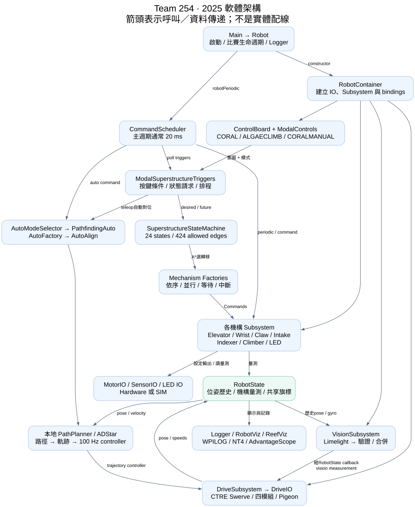
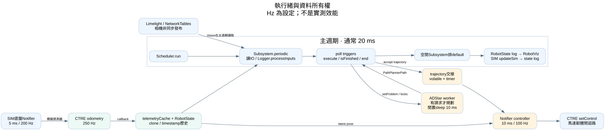
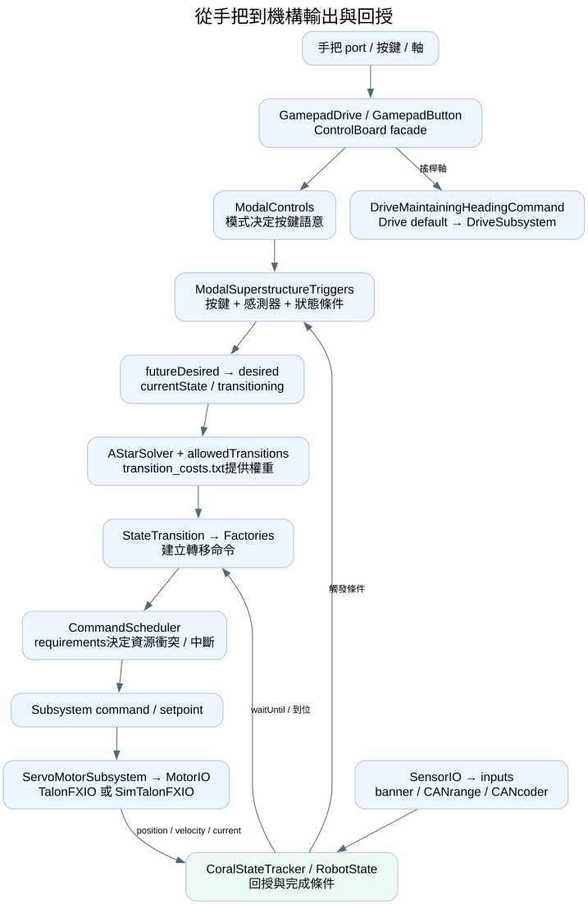
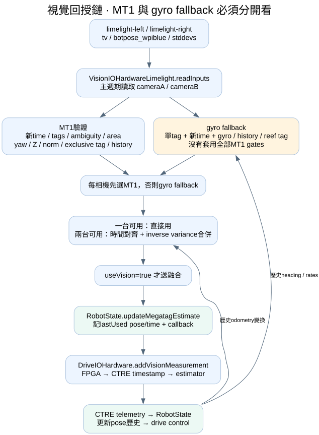
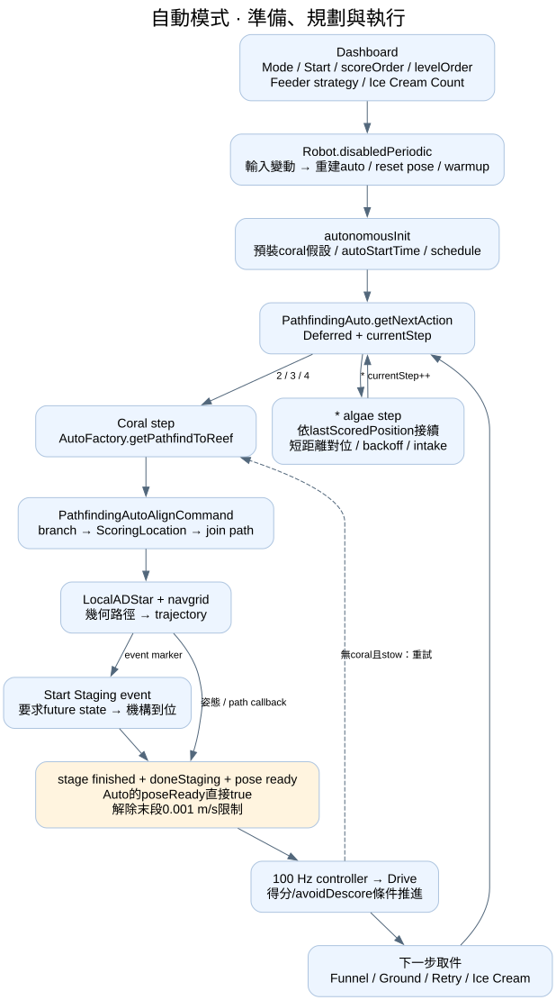
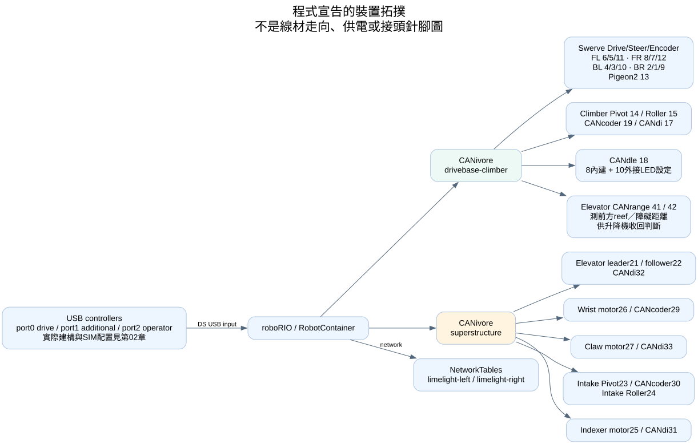
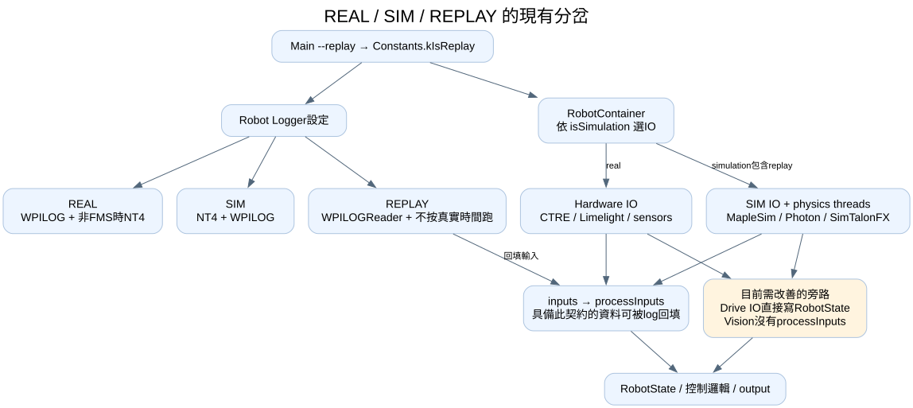

如何使用
先看總圖，再沿著一個操作追「輸入 → 命令 → 子系統 → IO → 回授」。章節中的程式連結可直接打開本快照的唯讀原始碼行號。
全文可用瀏覽器搜尋；逐檔索引可按類名、路徑、方法名篩選。狀態矩陣可查看所有允許邊，再選狀態查看進出連接與成本。
架構與資料流程圖







Superstructure 完整轉移矩陣
橫列為來源、直欄為目標；綠色有成本資料，黃色使用預設成本。空白是不允許的直接轉移。顯示到小數三位，詳情保留原值。自迴圈在資料中存在，實際相同目標的命令處理另看第02章。
01｜架構、生命週期與資料所有權
分析基準：2026-09-19，本地快照 79645a4b0193d84b179d11654fbe499b42f2e52d。這份資料夾原本沒有設定 Git remote；專案身分依本地 README 為 Team 254 / Undertow / 2025。以下說明以實際 Java 實作為準，並非把 README 的功能宣告全部視為已接通。此次只新增說明文件與圖表，沒有修改機器人原始碼、執行 Gradle、編譯、模擬或部署。
1. 先認清七個角色
| 角色 | 本地入口 | 輸入 | 輸出／下一層 | 不應混淆的責任 |
|---|---|---|---|---|
| 啟動與比賽生命週期 | Main.java:13、Robot.java:82 | 啟動參數、Driver Station、模式切換 | Logger、RobotContainer、排程命令 | Robot 不是每顆馬達的控制器 |
| 物件組裝 | RobotContainer.java:58 | REAL/SIM 判斷、Constants | IO、Subsystem、Factories 使用的 getters、bindings | 建立物件和依賴；不是狀態估測器 |
| 操作意圖 | controlboard、ModalSuperstructureTriggers | 手把、操作模式、持有物件、機構状态 | 目標狀態、命令排程、取消與LED提示 | 同一按鍵在不同模式會有不同意思 |
| 動作協調 | SuperstructureStateMachine、factories | 當前/目標/未來狀態 | 有順序的機構命令 | 避免單一按鍵直接任意驅動各馬達 |
| 底盤規劃與控制 | AutoModeSelector → PathfindingAuto → AutoFactory → PathfindingAutoAlignCommand | 得分序列、位姿、場地與約束 | trajectory → 100 Hz controller → SwerveRequest | 場地路徑搜尋與機構狀態 A* 是不同系統 |
| 子系統與IO | DriveSubsystem、ServoMotorSubsystem系、VisionSubsystem | 命令目標、感測輸入 | Phoenix API、硬體輸出、RobotState | IO隔離硬體，Subsystem提供機構語意 |
| 共用狀態／觀測 | RobotState、Logger、RobotViz、ReefViz | 底盤量測、機構量測、視覺、狀態 | 時間歷史、控制條件、log、3D資料 | RobotState主要是共享資料與回呼匯流處，CTRE才是此處的底盤融合估測端 |
整個專案共有 168 個 Java 檔、31,686 行（含註解與空行）：機器人專屬區 76 檔，共用庫 92 檔。lib 包含整份客製 PathPlanner，不等於每個檔案都是本隊從零設計，也不等於每個公開API都被目前 Robot 使用。逐檔連接與來源列於第07章。
2. 啟動：從 JVM 到所有控制器
- Gradle manifest 指向
com.team254.frc2025.Main。Main.main根據--replay設Constants.kIsReplay，呼叫RobotBase.startRobot(Robot::new)。 - Java 初始化 Robot 欄位時先建立空命令、dashboard string、兩條CAN匯流排logger等；Robot constructor 再記錄 BuildConstants 的專案、日期、Git SHA、branch、dirty metadata。
BuildConstants.java由 Gradle gversion 產生，現在原始資料夾沒有該檔不代表手寫類別遺失。 - 根據真機/Replay/SIM設定記錄來源與目的地，
Logger.start()在new RobotContainer()之前。 RobotContainer欄位依宣告順序建立：ControlBoard與ModalControls單例 → vision callback → RobotState → CoralStateTracker → SIM state/sensors/motors → Drive → Vision → Claw → ClimberPivot → ClimberRoller → Elevator → Wrist → Indexer → IntakeRoller → IntakePivot → LED → ReefViz → drive default command → RobotViz。visionEstimateConsumer雖先捕捉driveSubsystem，只是建立回呼；正常建構完成後視覺 periodic 才呼叫它，並不是在捕捉當下讀取尚未建立的底盤。- Container constructor 在SIM呼叫
simulatedRobotState.init()，再建立狀態機、AutoModeSelector、configureBindings，drive default command 設為DriveMaintainingHeadingCommand。 - Robot constructor 在SIM重設 odometry 至
(3,3,0)，把 scheduler送到SmartDashboard，關閉 CTRE SignalLogger 自動記錄，排入第三方原版com.pathplanner.lib.commands.PathfindingCommand.warmupCommand()。 Robot.robotInit()在SIM把 wrist初值設為 −18°。比賽模式切換後由對應 init/periodic/exit負責。
這裡有兩個同名 PathfindingCommand：Robot constructor 引入的是 com.pathplanner.lib；正式自動路徑主要使用 com.team254.lib.pathplanner。搜尋時一定看 import，不能用簡單類名認定同一份程式。來源：Robot.java:9、DriveSubsystem.java:10。
3. 每輪與每條執行緒：真正的時間軸
| 執行脈絡 | 來源設定 | 主要工作 | 跨邊界資料 |
|---|---|---|---|
| 主機器人週期 | LoggedRobot預設通常20ms；本類未另設period | CommandScheduler、Subsystem.periodic、按鍵、commands、logging與RobotViz | 讀IO inputs；寫RobotState與命令目標 |
| CTRE odometry | DriveIOHardware constructor明定250Hz，priority99 | 四模組＋Pigeon融合位姿；telemetry callback | clone到AtomicReference telemetryCache；直接addOdometryMeasurement |
| 軌跡controller | DriveSubsystem.Controller Notifier 0.01s，priority41 |
sample trajectory → LTE/CTE/θ回授 → wheel force FF → setControl | volatile trajectory、Timer、RobotState最新位姿 |
| ADStar規劃thread | LocalADStar daemon；閒置sleep10ms | 快取/搜尋/幾何路徑產生 | requestLock、pathLock；不是固定100Hz閉迴路 |
| SIM底盤thread | DriveIOSim Notifier 0.005s |
MapleSim或CTRE physics update | 模擬模組、Pigeon、SimulatedRobotState |
| 相機資料 | VisionSubsystem.periodic呼叫readInputs | 讀Limelight NT、濾波、合併、送回CTRE | 相機外部非同步發布；本Robot讀取/處理在主週期 |
| 機構SIM | 個別SIM IO + Robot.robotPeriodic內updateSim | 馬達模型、遊戲物件、banner、限位 | 這輪更新供之後periodic使用 |
上述頻率是程式設定／框架預設，不是此機器實測能穩定達到的頻率。例如 CAN等待、物理模擬和log負荷都會影響時序。CPU priority 數字僅描述程式設定，不表示100Hz controller一定先於主排程完成。
主 robotPeriodic 的實際順序是：
- Enabled提高主thread priority，Disabled降低。
CommandScheduler.run()：先跑註冊subsystem periodic，再poll trigger，執行排程命令、檢查結束，最後排入空閒subsystem的default command。Subsystem各自之間不應靠隱含先後建立重要依賴。- 將 Wrist velocity與ModalControls mode送給Claw，發生在 scheduler 之後；因此這份更新並非同輪 Claw.periodic 前就完成。
RobotState.updateLogger()→RobotViz.updateViz()→ SIM才SimulatedRobotState.updateSim()。- 記錄 current/desired/future Superstructure state、Coral位置、defaultRobotWide，最後降主thread priority。
排程語義依 WPILib Command Scheduler官方文件。本專案呼叫處：Robot.java:132。
4. 模式切換的副作用清單
| 生命週期 | 會改動什麼 | 後續連接／操作意義 |
|---|---|---|
| disabledInit | 排disabledCommand（目前none）；初始化pathfinding；使用teleop障礙圖；開cache；cache tolerance=0；送stay-in-place trajectory | Disabled不是沒有程式在跑；仍預先規劃、讀感測器、記log |
| disabledInit climb特殊分支 | 若climber deploy done，排一個允許disabled執行的5秒延遲Coast | 煞車模式改變屬實際副作用；若將來改此流程須確認停用/重新啟動情境 |
| disabledPeriodic每50輪 | flush NT；claw encoder歸0；未enable過才intake resetOffset；更新auto validation、接近起點狀態、建auto與warmup；更新CAN裝置狀態 | 50輪名義約1秒，不是所有工作都每20ms做 |
| disabledPeriodic auto輸入變動 | 重建auto；若PathfindingAuto，取startingPose、red flip、resetOdometry；建立PathfindingWarmupCommand與warmup排程 | Dashboard改起點會重設pose，不只是改顯示文字 |
| disabledPeriodic其他 | 曾enable後每10秒fsSyncAsync；每輪記兩條CAN bus狀態 | 檔案同步在另一作業；相關工具見第06章 |
| disabledExit | 取消disabled及warmup；useVision=true；重設SmartDashboard table instance | 恢復vision融合；不是清空整個NetworkTables |
| autonomousInit | cache tolerance=.8m；defaultRobotWide=true；首步非*就force Coral=STAGED_IN_CLAW；記autoStartTime；schedule已建立auto |
有預裝coral的策略假設；不是感測器自己證明有物件 |
| autonomousExit | defaultRobotWide=true | 這裡沒有取消auto；實際取消在teleopInit |
| teleopInit | climber raw offset設成當前rotor；首次enable才排STOW_CORAL；停cache、用teleop navgrid；設定claw banner檢查、intake default；取消auto | 順序與歸零會影響機構位置參考，移植不能略過 |
| testInit | cancelAll | 不等於所有裝置已完成安全測試，也不是清空狀態機資料 |
| simulationPeriodic | 記錄場上Coral/Algae pose陣列 | 可視化輸出而非真機傳感器 |
來源：Robot.java:182、Robot.java:210、Robot.java:345、Robot.java:397。
注意：DO_NOTHING 選項回傳的是「要求STOW_CORAL且等待」命令，不是完全無動作。Robot層若發現score/level長度不同直接return，本輪不會更新已保存的auto；Dashboard顯示和實際已建auto必須一起確認。
5. RobotState 資料字典與誰寫誰讀
| 資料/API | 寫入來源 | 主要讀取端 | 單位／範圍／備註 |
|---|---|---|---|
addOdometryMeasurement → fieldToRobot |
DriveIOHardware.telemetryConsumer；SIM亦經這條callback | drive commands、pathfinding、Vision、Reef selection、Viz | Pose2d m/rad；1秒ConcurrentTimeInterpolatableBuffer |
addDriveMotionMeasurements |
DriveIOHardware.readInputs | heading、pathfinder速度、vision gyro gating、alignment ready checks | robot/field relative speeds m/s、rad/s；roll/pitch/yaw歷史；加速度保留IO數值 |
getLatestFusedRobotRelativeChassisSpeed |
讀出measured速度並替換omega | DriveSubsystem AutoBuilder、PathfindingAutoAlign | 目前直接修改已存ChassisSpeeds物件；AtomicReference不會讓物件本身不可變 |
updateMegatagEstimate |
VisionSubsystem通過檢查後 | callback至Drive.addVisionMeasurement；alignment讀lastUsed pose/time | RobotState記錄「最後使用的視覺」，再由CTRE融合；不是自己再跑Kalman |
exclusiveTag |
PathfindingAutoAlign.initialize設定、end清除 | VisionSubsystem.processMegatagPoseEstimate | Optional tag ID；gyro fallback路徑未套相同exclusive檢查，見第04章 |
| 機構位置/速度 | 各機構periodic | Factories完成判斷、state machine、RobotViz、SIM | Elevator m；wrist/intake pivot/climber pivot rad；rollers rotations及rotations/s |
enablePathCancel |
ModalSuperstructureTriggers | 觸發器條件 | AtomicBoolean；它本身不是CommandScheduler cancel |
| trajectory target/current | PathPlannerLogging callbacks | Logger、可視化相關讀者 | Optional |
ledState |
LedSubsystem | updateLogger | RGB狀態；燈效輸出還須IO |
iteration |
DriveSubsystem.periodic | CheesyTrigger取樣緩存 | 每底盤periodic遞增，讓同輪條件可重用 |
autoStartTime |
Robot.autonomousInit | PathfindingAuto剩餘策略 | FPGA seconds；此實作按經過時間判斷 |
isRedAlliance / onOpponentSide |
DriverStation／位姿衍生 | drive翻轉、scoring位置、algae操作 | 未知alliance視為非red；應在賽前確認資料已到 |
getPredictedFieldToRobot(t) 用當前robot-relative速度乘t，透過Pose.exp外推；getPredictedCappedFieldToRobot(t)會把負vx、vy壓成0。這是簡單運動學外推，不是感測器再次確認的位置。getMaxAbsValueInRange 回傳的是「絕對值最大的帶符號樣本」，呼叫者若只比較 > threshold 可漏掉負方向高速，見第04章疑點。
來源：RobotState.java:110、RobotState.java:164、RobotState.java:218、RobotState.java:233。
6. REAL、SIM、REPLAY：目前實際接線與理想界線
| 項目 | REAL | 一般SIM | --replay現況 |
|---|---|---|---|
| Logger | WPILOGWriter；constructor時非FMS才加NT4Publisher | NT4Publisher + WPILOGWriter | 不按真實時間跑、WPILOGReader + _sim writer |
| RobotContainer build* | Hardware IO | Sim IO | 仍按isSimulation選SIM IO，沒有獨立no-op replay factory |
| Drive | CTRE Hardware、250Hz callback | DriveIOSim繼承Hardware，另有physics thread；MapleSim模式以物理真值覆寫telemetry Pose | RobotState先由SIM IO/callback更新，並非全由processInputs回填 |
| Vision | Limelight NT | PhotonVision結果轉成Limelight形式的NT再走共同讀取 | VisionIOInputs未AutoLog/processInputs；recordOutput不是輸入重播契約 |
| 機構 | TalonFX + CANcoder/CANdi/CANrange | SimTalonFX/SimElevator/SIM sensors | 部分inputs可回填，但各IO副作用與直接state寫入仍需逐一核對 |
| LED | LedIOHardware | 依然LedIOHardware | 依然同一builder；不是獨立空IO |
Constants.currentMode |
REAL | SIM | 與Main設的kIsReplay不是同一開關；不可只改其中一個就假設全系統已一致 |
因此可以說「專案有記錄與Replay入口」，不能說「現有程式已保證完整確定性重播」。AdvantageKit官方推薦的邊界是：IO讀inputs → Logger.processInputs → 控制邏輯只讀inputs。現況至少Drive和Vision不完全滿足這条；改善需要先繪製資料來源、再拿同一wpilog比較原始和重播輸出。參考：AdvantageKit IO interfaces、non-deterministic inputs。
7. 編譯設定只是本次閱讀，不是已執行驗證
| 檔案 | 誰讀它 | 作用與修改影響 |
|---|---|---|
| build.gradle | Gradle | Java17、GradleRIO2025.3.2、JUnit5、Spotless、gversion、JNI、100MB heap、serial GC、deploy設定 |
| settings.gradle | Gradle settings階段 | plugin repositories等設定；不是Robot runtime |
| gradle/wrapper/、gradlew | 開發機 | Gradle啟動；本次沒有執行 |
| vendordeps/*.json | GradleRIO | 第三方Java/JNI dependency版本；改檔可能連帶改firmware/API相容性 |
| src/main/deploy | Gradle靜態部署 → /home/lvuser/deploy |
navgrid及transition_costs進入robot檔案系統；deleteOldFiles=false，刪本地檔不會自動清除RIO舊檔 |
| layouts/*.json | AdvantageScope/Shuffleboard/Elastic | 人員檢視佈局；不是自動runtime控制碼 |
| limelight/calibrations、pipelines | 相機設定管理流程 | 現有建構時只寫相機pose NT；沒有看到將這些檔案自動上傳相機的Robot程式 |
| tuner-project.json | Phoenix Tuner X | 生成/維護底盤參數的專案來源；執行時讀的是TunerConstants Java |
| pull_latest_logs_from_rio.sh | 人員在開發機手動執行 | 讀取robot log；先確認腳本IP/目的地，不在Robot主流程 |
鎖定版本：AdvantageKit4.1.2、Phoenix6 25.4.0、Phoenix5 5.35.1、PathplannerLib2025.2.7、Choreo2025.0.3、PhotonLib v2025.3.1、MapleSim0.3.9。Phoenix6-frc2025-latest.json 名字雖有latest，內容仍是固定25.4.0；不能因檔名推論當前最新版。
Spotless使用googleJavaFormat AOSP，但排除BuildConstants與ModalSuperstructureTriggers。JUnit dependency不代表有測試：此快照沒有 src/test 測試檔。詳細改善規範見第05章。
8. Mentor帶讀順序
先讓新人追一條最短路徑：左搖桿 → GamepadDriveControlBoard → ControlBoard → DriveMaintainingHeadingCommand → DriveSubsystem.setControl → DriveIOHardware → CTRE。再追量測反向路徑：CTRE telemetry → RobotState → heading controller。第二次課才加入按鍵模式、Coral tracker、狀態機與Factory；第三次加入Auto與Vision；最後談Replay、thread ownership與效能。
驗收方式不靠背類名：請學生用原始碼指出「按鍵是哪個port、命令在哪裡排程、requirement是哪個subsystem、輸出單位、什麼條件結束、取消後硬體留下什麼設定、下一個default怎麼接手」。能把這七項說清楚，才算懂一個流程。
操作介面、命令組合與 Superstructure 詳細導讀
本章以目前工作目錄的原始碼為準，採靜態閱讀與資料解析，沒有編譯、模擬啟動、連線機器人或變更 production code。L 表示原始檔行號。表中的按鍵行為是「程式已接上的行為」，不是單靠方法名稱推測的功能。
1. 先理解五層之間的連接
flowchart TD
GP[GamepadDriveControlBoard / GamepadButtonControlBoard\nUSB Xbox 實體輸入] --> CB[ControlBoard\n統一介面、轉送 getter、rumble]
CB --> MC[ModalControls\nCORAL / ALGAECLIMB / CORALMANUAL\n按鍵 AND 模式 AND 互斥條件]
CB --> DR[DriveMaintainingHeadingCommand\n預設駕駛命令]
MC --> MT[ModalSuperstructureTriggers\n按键與感測器事件綁定]
MT --> AF[AutoFactory\n場地定位、底盤對位]
MT --> FAC[Claw / Intake / Indexer / Climber / LED Factories]
MT --> SM[SuperstructureStateMachine\ndesired / current / future]
SM --> GRAPH[SuperstructureState.allowedNextStates\n24 個姿態、有向轉移圖]
GRAPH --> ASTAR[AStarSolver + transition_costs.txt\n選下一個可達姿態]
ASTAR --> SF[SuperstructureFactory\nElevatorFactory + WristFactory]
FAC --> SUB[各 Subsystem command\nWPILib requirements]
SF --> SUB
SUB --> IO[MotorIO / SensorIO / LED IO\nTalonFX、CANcoder、banner]
IO --> CT[CoralStateTracker\n物件位置狀態]
CT --> MT
CT --> SM
這份架構有兩個不同的「狀態」：SuperstructureState 描述 elevator 高度 + wrist 角度；CoralStateTracker.CoralPosition 描述 coral 在機器裡的位置。ModalControls.Mode 又是第三種狀態，決定同一顆按鍵代表哪個操作。三者不能合併看待。
完整控制鏈為：實體按鍵 → 語意化 getter → 模式條件 → Trigger 邊緣 → 建立／排程 Command → 狀態機要求或機構直接命令 → Subsystem requirement 仲裁 → IO 輸出 → 感測器回報 → 下一個 Trigger。
2. RobotContainer 是組裝點，不是每個動作的執行器
來源：RobotContainer.java L58–216、L219–316。
| 成員／方法 | 建立與依賴 | 下游使用 |
|---|---|---|
controlBoard、modalControls |
singleton，L219–220 | driver command、trigger 綁定 |
visionEstimateConsumer → robotState |
callback 會呼叫 driveSubsystem.addVisionMeasurement，L223–235 |
視覺估測送到底盤姿態估測器 |
coralStateTracker |
單一共享實例，L238 | Claw、Indexer、狀態機、trigger |
simulatedRobotState、各 *SensorIOSim、模擬馬達 |
只在 simulation 建立，L239–254 | 真實與模擬使用相同上層命令 |
buildDriveSystem() |
simulation → DriveIOSim；real → DriveIOHardware；共用 RobotState |
DriveSubsystem |
buildVisionSystem() |
simulation → Photon；real → Limelight | VisionSubsystem |
buildClawSubsystem() |
config + MotorIO + ClawSensorIO + this |
Claw 可存取 tracker、wrist、mode |
buildClimberPivotSubsystem() |
config + Talon/Sim + CANcoder/Sim + state | 角度、raw rotor offset、deploy flag |
buildClimberRollerSubsystem() |
config + motor + 左右限位感測器 + state | latch／雙邊接合判斷 |
buildElevatorSubsystem() |
lead motor + 一個 follower + 感測器 + state | 升降與靠近 reef 的收回條件 |
buildWristSubsystem() |
motor + CANcoder + state | wrist Motion Magic、是否離開 indexer |
buildIndexerSubsystem() |
motor + 兩個 banner + state + tracker | 輸送、更新物件位置 |
buildIntakeRollerSubsystem() |
motor + state | 吸入、反吐 |
buildIntakePivotSubsystem() |
motor + CANcoder + state | intake 展開、收回、climb 收回 |
buildLedSubsystem() |
永遠 LedIOHardware，沒有在此分支模擬 LED IO |
模式與機構狀態提示 |
driveCommand |
drive + state + container + throttle/strafe/rotation suppliers，L284–291 | L315 設為底盤 default command |
| constructor | 先 simulation init，再 state machine，再 auto selector，再 bindings，L297–306 | 確保 factories 取得完整容器 |
configureBindings() |
ModalControls.configureBindings() → new ModalSuperstructureTriggers → drive default |
所有按鍵與感測器 triggers 在建構期間註冊 |
2.1 所有公開介面如何被使用
getDriveSubsystem/getVisionSubsystem/getClaw/getClimberPivot/getClimberRoller/getElevator/getWrist/getIndexer/getIntakeRoller/getIntakePivot/getLeds（L333–375）提供 factory 與 command 取得同一個機構實例；不應另外 new 第二個 subsystem 操作同一個 CAN 馬達。
getRobotState/getCoralStateTracker/getModalControls/getStateMachine/getModalSuperstructureTriggers（L329、377–387、453）把共享狀態與操作協調器交给命令。getReefViz/getRobotViz（L280、421）為視覺化；getSimulated*（L389–419）為模擬裝置注入與觀察；這些 getter 不會自行執行機構動作。
getModeChooser/getScoringSequence/getLevelSequence/getStartingPositionChooser/getIceCreamCountChooser/getFeederStrategyChooser/isValidAutoCommand/getAutonomousCommand（L425–475）轉送 AutoModeSelector，不在本類直接拼自動流程。
resetHeading()（L318）保留 x/y，將 heading 設為 blue 0、red π；本地 src/main/java 沒找到呼叫它的按鍵綁定。odometryCloseToPose()（L457）同時檢查距離 < 0.25 m、朝向差 < 8° 並寫 SmartDashboard。getDisabledCommand()（L482）回傳 Commands.none()。
setAutoDefaultCommands(strategy) 與 setTeleopDefaultCommands()（L478、486）目前只切換 intake pivot 的 default command，不是替所有機構重新設定 default。
2.2 Default command 的實際來源
| 機構 | 沒有其他 command 佔用時 | 來源 |
|---|---|---|
| Drive | DriveMaintainingHeadingCommand 讀三個 joystick suppliers |
RobotContainer L284、315 |
| Elevator | 持續對 getPositionSetpointUnits() 跑 Motion Magic |
ElevatorSubsystem L54 |
| Wrist | 持續保持最後 setpoint | WristSubsystem L23 |
| Intake pivot，Auto | GROUND feeder strategy → 展開；其他 strategy → 收回 | IntakePivotSubsystem L38 |
| Intake pivot，Teleop | 保持最後 setpoint | IntakePivotSubsystem L52 |
| Claw | 有 algae → torque hold／regrab；coral autoScore 啟用 → position target 0；wrist 未離開 indexer → 0 V | ClawSubsystem L98、230 |
| Climber pivot | 其自訂 default 行為，見硬體／機構章 | ClimberPivotSubsystem L31 |
| 其他一般 ServoMotor | base class 的 neutral duty-cycle command | ServoMotorSubsystem L31 |
Motion Magic command 結束後通常不清 setpoint，接回保持 setpoint 的 default command。因此「blocking command 結束」表示到達容許誤差，不表示馬達解除閉迴路。ignoringDisable(true) 表示 scheduler 允許命令在 disabled 排程／執行；它不是繞過 FRC disabled 的硬體輸出限制。
3. 每個 controlboard 檔案的責任與按鍵
| 檔案 | 入口與責任 | 不應放入的邏輯 |
|---|---|---|
IDriveControlBoard.java L5–14 |
getThrottle/getStrafe/getRotation/getRotationY/resetGyro 契約 |
CAN 或 subsystem 實例 |
IButtonControlBoard.java L5–78 |
36 個 trigger getter + rumble，語意化命名 | elevator 高度／state machine 路徑 |
GamepadDriveControlBoard.java L22–56 |
USB 0；simulation 用 CommandSimXboxController；leftY/leftX 經負號與 1.5 次方，rightX/rightY 經負號與平方 |
模式切換 |
GamepadButtonControlBoard.java L28–40 |
kForceDriveGamepad=true，所以目前使用 USB 0；建 USB 1 additional controller，但未使用。備援 else 選 USB 2 |
實際動作排程 |
ControlBoard.java L20–236 |
drive/button facade；所有 getter 轉送；rumble() 為 startEnd，開始雙馬達 rumble=1、結束=0 |
模式條件與安全互鎖 |
ModalControls.java L11–293 |
3 模式 + raw trigger AND mode；供 trigger binding 層使用 | 直接操作馬達 |
常數：Constants.java L127、129、157–159。控制軸負號及曲線是本檔處理；速度上限、deadband、field-relative、heading snap 還需追 DriveMaintainingHeadingCommand，不能只看這裡就認定 joystick 直接等於 m/s。
3.1 模式選擇與共同控制
| 實體輸入 | raw getter | 實際作用 |
|---|---|---|
| Start 且非 Back，持續 0.1 s | getCoralMode() |
ModalControls.configureBindings onTrue → CORAL |
| Back 且非 Start，持續 0.1 s | getAlgaeClimbMode() |
onTrue → ALGAECLIMB |
| Back + Start，雙向 debounce 0.5 s | getCoralManualMode() |
onTrue → CORALMANUAL |
| D-pad 下，非上 | setDefaultRobotWide() |
非 CORALMANUAL 時設定 defaultRobotWide=true 並展開 intake |
| D-pad 上，非下 | setDefaultRobotTight() |
非 CORALMANUAL 時設定 false；第一 banner 沒 coral 才收 intake |
| 左摇杆 Y/X | throttle/strafe | default drive 持續讀取 |
| 右摇杆 X | rotation | default drive 持續讀取 |
ModalControls 的一般 intake() 是 LT && !RT，score() 是 RT && !LT（L90–96），同時壓 LT/RT 會讓兩者為 false。但 moveToAlgaeLevel() 直接用 raw score() getter，未套用 LT 互斥（L164–165），而實際 algae RT 綁的是這個方法（ModalSuperstructureTriggers L963）。
setMode() 只寫 enum；forceSetMode() 先呼叫變更 consumer 再寫 enum；maybeTriggerStateChangeConsumer() 僅在模式真的變更時呼叫。現有 stateChangeConsumer 沒看到賦值入口，所以主要模式效果來自 coralMode()/algaeClimbMode() trigger 的 onTrue（ModalControls L17–54）。
3.2 CORAL 模式：逐鍵到命令
| 按鍵 | ModalControls getter | 接到哪裡、結束條件與輸出 |
|---|---|---|
| X | stageL1() |
onTrue 只把 latestCoralStageState=L1；不立即升降，MT L847 |
| A | stageL2() |
只選 L2，MT L850 |
| B | stageL3() |
只選 L3，MT L853 |
| Y | stageL4() |
只選 L4，MT L856 |
| LT | groundCoralIntake() |
whileTrue → SuperstructureFactory.groundIntake；tracker 必須 NONE；intake 0 rad + roller +1 duty + indexer +1 duty 並行，第一 banner true 結束；第一 banner 已有 coral 且姿態不是 STOW_CORAL 時阻擋，MT L747 |
| LT 放開 | 同上 onFalse | 若仍無 coral 且正在 LB/RB 對位，roller/indexer 最多再跑 1 s 等 coral；之後 defaultRobotWide=false 且物件未卡第一段才收 intake，MT L758 |
| RT、選 L2–L4 | stageOrScoreCoral() |
onTrue → current/desired 都已是所選層時 score；否則先要求所選姿態，MT L370、859 |
| RT、選 L1 | 同上 | 若已有 stage request 或沒有 staged/processing coral，等 L1 後 scoreL1Shallow，輸出最多 0.5 s、整段最多 2 s；否則只要求 L1，MT L861 |
| LB | leftBranchSelect() |
whileTrue 選最近 reef face + 第一字母 → AutoFactory.getPathfindToReefCommand；傳入 stage callback 和到層 predicate；放開取消對位並清 future state，MT L782 |
| RB、非 L1 | rightBranchSelect() |
同上，使用第二字母；放開清 future state，MT L805 |
| RB、L1 | 同上 | L1 deep score；層／物件條件與 RT L1 同類，但 deep=-5 RPS，MT L825 |
| 左摇杆按下 | stowCoral() |
需 canStow 且 awayFromReef；若 staged coral → CLEAR_LIMELIGHT，否則 STOW_CORAL，MT L775 |
| 右摇杆按下，debounce 0.1 s | autoHP() |
只設定 coral snap-heading=false；放開設 true；此處沒有直接啟動 HP pathfind，MT L841 |
| D-pad 左 | funnelIntakeCoral() |
非地面 intake 且 canStow/away 或已 STOW_CORAL → 要求並等待 STOW_CORAL → indexer +1 duty；按住執行，MT L877 |
| D-pad 右 | coralExhaust() |
!uncancellableCommandRunning 才 whileTrue：intake -0.75、indexer -1；tracker 不是 STAGED_IN_CLAW 才 claw +1，MT L888、301 |
進 CORAL 的 onTrue（MT L733）若 claw 持 algae，先 exhaustAlgae 最多 0.5 s，再在收回條件允許時要求 STOW_CORAL。這條 onTrue 也受 scheduler 的 disabled／requirement 規則限制。
3.3 ALGAECLIMB 模式：逐鍵到命令
| 按鍵 | ModalControls getter | 接到哪裡、結束條件與輸出 |
|---|---|---|
| A | stageAlgaeL2() |
只選 REEF_ALGAE_INTAKE_L2，MT L942 |
| B | stageAlgaeL3() |
只選 REEF_ALGAE_INTAKE_L3_MANUAL，不是一般 L3，MT L945 |
| Y | bargeManualStage() |
只選 STAGE_BARGE，MT L948 |
| X | processorManualStage() |
只選 STAGE_PROCESSOR，MT L950 |
| RT | moveToAlgaeLevel() |
onTrue createStageOrScoreAlgaeCommand；未到所選位置 → 要求該姿態；已是所選 BARGE → -12 V 0.4 s 後 STOW_CORAL；已是所選 PROCESSOR → claw -1 duty，放開 RT 結束，MT L393、963 |
| LT、尚未持 algae | groundIntakeAlgae() |
onTrue 要求 GROUND_ALGAE_INTAKE；claw 70 A torque，falling debounce 0.25 s；鬆開後走收回分支，MT L904、908 |
| RB、尚未持 algae | lollipopIntake() |
同類但姿態 LOLLIPOP_INTAKE，MT L906、911 |
| LT、已持 algae 且不是 ground/lollipop 取 algae 姿態 | groundIntakeAlgae() |
改做 coral ground intake，允許 claw 持 algae、coral 暫存第一 banner，MT L898、915 |
| LT/RB 放開 | 合併 trigger onFalse | 必要時等 algae debounce；若 desired 是 ground/lollipop 則 createStowAlgaeCommand；同時依 defaultRobotWide 與 coral 位置收 intake，MT L920 |
| LB | autoAlignReefIntake() |
取自己或對手半場最近 face → AutoFactory.getPathfindToAlgaeIntake；按住對位，MT L954 |
| 右摇杆按下 | manualIntakeAlgae() |
algae snap-heading=true；放開 false；不是這個 getter 直接跑吸球馬達，MT L844 |
| 左摇杆按下 | stowAlgae() |
canStow/離 reef 或已 processor 才執行：持 algae 且選 processor → processor；持 algae 其他 → STOW_ALGAE；無 algae → STOW_CORAL，MT L412、966 |
| D-pad 左，0.25 s | deployClimber() |
同一事件啟動三件事：autoClimb；intake 收到 -90°（2 s timeout）；要求 STOW_CORAL。是並行排程，未等待另兩者完成才 deploy，MT L972–974 |
| D-pad 右，按住 | climb() |
manualJogClimber：pivot 12 V，沒有本命令內到位結束條件，放開取消，MT L976 |
| D-pad 上／下 | 共用 tight／wide | 仍會收／展 intake；bargeAutoAlignStage/processorAutoAlignStage getter 雖存在，沒有被 MT 綁定 |
進 ALGAECLIMB（MT L891）僅當 elevator canStow 且離 reef 時呼叫 createStowAlgaeCommand。爪在 reef algae 姿態、尚無 algae 且目前是 algae mode 時，另一條自動 trigger 會持續跑 ClawFactory.intakeAlgae，不需要再額外握住取球鍵（MT L689–697）。
3.4 CORALMANUAL 模式
| 按鍵 | 實际連接 |
|---|---|
| X/A/B/Y | 選 L1/L2/L3/L4，同樣只改 latest，MT L1030 |
| RT、非 L1 | current/desired 已到 selected → score；否則先把 current 強制標成 desired、transitioning=false，再要求新 selected，MT L379、1042 |
| RT、L1 | deep score=-5 RPS；正常 CORAL 的 RT 是 shallow=-3 RPS，MT L1045 |
| LT | ground intake，仍要求 tracker NONE 且非第一 banner 保留條件；不是完全無條件轉馬達，MT L1006 |
| D-pad 上 | whileTrue deploy pivot 0 rad，MT L1001 |
| D-pad 下 | whileTrue deploy pivot 0 rad + roller +1，MT L1003 |
| D-pad 左 | 等 STOW_CORAL 再跑 indexer；略過一般模式的 canStow/away gate，MT L1067 |
| D-pad 右 | intake -0.75、indexer -1、claw +1，全反吐；仍受 uncancellable flag gate，MT L1075 |
| RB | 若 current 是 L2/L3/L4，要求對應 NON_DESCORE 姿態，MT L1061 |
| 左摇杆按下 | 直接要求 STOW_CORAL，沒有一般模式的 canStow/away gate，MT L1064 |
Manual 模式會略過 setDesiredState() 對是否持有 coral/algae 的檢查，以及 isTransitionBlocked() 對持 algae 進 coral state 的限制；仍使用同一張姿態轉移圖、同一組馬達命令。因此 manual mode 應有明確練習流程與使用條件。
3.5 有宣告但沒有接成動作的 API
以 rg 搜尋目前 src/main/java：resetGyro()、getWantToXWheels()、getWantToAutoAlign()、getRotationY() 沒有控制板外部呼叫；不要把 Back 解說為「目前會歸零 gyro」，也不要把 Start 解說為「目前會 X-lock」。RobotContainer.xWheels 亦僅宣告。
ModalControls 的 bargeAutoAlignStage、processorAutoAlignStage、scoreAlgae、coralIntakeToIndexer、closestFaceAlign 沒看到 consumer；povAutoAlignStage() 固定 false。IButtonControlBoard.climb() 回 RB，但真正 modal climb 回 D-pad 右。這些差異是建立 driver cheat sheet 前必須核對的重點。
4. WPILib Command 語義與本專案資源規則
onTrue 在 false→true 時排一次；onFalse 在 true→false 排一次；whileTrue 於上升緣排程、下降緣取消，但命令自然結束後，按鍵持續為 true 不會自動重跑。因此「吸到第一 banner 結束」後仍握 LT，不會一直重建 intake 命令；後半段交給 sensor triggers。WPILib Trigger 文件
一般 sequence/parallel composition 的 requirements 為子命令的聯集；parallel 不允許兩個子命令同時佔相同 subsystem。deadline 由指定子命令的完成決定全組完成、取消其他子命令。asProxy() 讓內層獨立排程，影響 requirement 的持有方式。WPILib Command Compositions
本地實作還有下列重要規則：
| 寫法 | 實際 requirement／生命週期 | Mentor 要核對的地方 |
|---|---|---|
subsystem.run/runEnd/startEnd |
需要該 subsystem | 不可偷呼叫另一個 subsystem 的 IO 卻沒加 requirement |
new InstantCommand(() -> stateMachine.setDesiredState(...)) |
沒有 elevator/wrist requirement；狀態機會另外 .schedule() 動作 |
外層取消不必然取消已排程的姿態移動 |
Commands.defer(..., Set.of(claw)) |
明確先宣告 claw | MT stage-or-score 在等待／只選姿態時也持有 claw |
setStateAndWaitCommand |
request + 等 current==target；本身沒有 E/W requirements | 沒有內建 timeout，也未用 physical atTarget 重新檢查 |
kCancelIncoming |
有 requirement 衝突時拒絕新命令 | 不等於不能 .cancel()；本專案還靠 until(manualOverride) 主動退出 |
kCancelSelf |
接受新衝突命令，中斷自己 | finallyDo/end 應恢復旗標與输出 |
withTimeout／until |
條件達成會結束包裝並中斷未結束內層 | 不能把 timeout 直接當成功到位 |
ignoringDisable(true) |
scheduler 層容許 disabled 執行 | 記憶狀態可能在 disabled 改變，須在 enable 校驗 |
ChezySequenceCommandGroup（lib/commands L39–95）保留全部子命令 requirements，註冊 composed commands；某個子命令一結束，直接遞迴 execute() 下一個，所以多個 instant/wait 已滿足步驟可在同一個 scheduler tick跑完。其 interruption behavior 初始為 cancelIncoming，但只要某子命令是 cancelSelf 就降為 cancelSelf；不能單看類別名稱猜整組不可中斷。
4.1 馬達命令的 end() 不全相同
來源：ServoMotorSubsystem.java L136–319。
| 命令 | 每 tick 做什麼 | 結束做什麼 |
|---|---|---|
dutyCycleCommand |
設 duty cycle | 設 0 duty |
dutyCycleCommandNoEnd |
設 duty cycle | 無動作；default 或後續 command 才可能覆蓋 |
voltageCommand |
設 voltage | 設 0 V |
velocitySetpointCommand |
velocity closed loop | 無動作 |
positionSetpointCommand |
position closed loop | 無動作 |
motionMagicSetpointCommand |
profile + position setpoint | 無動作 |
setTorqueCurrentFOC |
torque current | 無動作 |
motionMagicSetpointCommandBlocking |
同上，直到目前 position 在 tolerance 內 | 沿用 Motion Magic 空 end |
setCurrentPosition |
直接呼叫 IO 的感測器位置重設 | 它不是 position target command |
最後一列對理解 RT score 很關鍵：MT 的 setCurrentPosition(-10) 是把 encoder 座標改為 -10，再利用已啟用的 claw position target 0 產生位移；不是直接命令馬達轉到 -10。這也是後續 avoid-descore trigger 讀 getPositionRotations() < -5 的來源（MT L665）。
5. SuperstructureState：24 個姿態的完整索引
角度下表為方便閱讀換算的 degree，程式傳入為 rad；高度為 m。一般到位容許誤差 elevator=0.05 m、wrist=0.05 rad（約 2.86°）。來源：SuperstructureState.java L13–126；Constants.java L420–465、L565–608。
| 狀態 | E 高度 m | W 角度 ° | 意義／與誰連接 |
|---|---|---|---|
| CLEAR_ELEVATOR_CROSSBEAM | 0.96 | 名目 -90；實際依終點 clamp 在 -90..-80 | 唯一自訂 command supplier；清 elevator 横梁 |
| CLEAR_WHEELS | 0 | -87 | 回 STOW_CORAL 的轉接姿態 |
| CLEAR_LIMELIGHT | 0 | 42 | staged coral 後抬 wrist 讓相機可見 |
| STOW_CORAL | 0 | -103 | indexer→claw handoff 必要姿態 |
| STOW_ALGAE | 0 | 55 | algae 安全收姿 |
| GROUND_ALGAE_INTAKE | 0 | -71 | claw 地面吸 algae |
| LOLLIPOP_INTAKE | 0.3 | -71 | 高位 lollipop 取球 |
| REEF_ALGAE_SLAP | 0.506 | -71.3 | reef slap |
| REEF_ALGAE_INTAKE_L2 | 0.606 | -71.3 | reef L2 algae |
| REEF_ALGAE_INTAKE_L3 | 1.006 | -71.3 | reef L3 algae，自動對位選用 |
| REEF_ALGAE_INTAKE_L3_MANUAL | 0.5319 | -4 | B 鍵選的 algae 手動姿態 |
| STAGE_CORAL_L1 | 0.07 | -93 | L1 shallow/deep score |
| STAGE_CORAL_L2 | 0.13 | -4 | L2 coral |
| NON_DESCORE_CORAL_L2 | 0 | 55 | L2 score 後避開已得分 coral |
| STAGE_CORAL_L3 | 0.52 | -4 | L3 coral |
| NON_DESCORE_CORAL_L3 | 0.445 | 55 | L3 score 後避開 |
| STAGE_CORAL_L4 | 1.14 | -2 | L4 coral |
| INTERMEDIATE_CORAL_L4 | 1.25 | -5 | 進 NON_DESCORE_CORAL_L4 必經來源 |
| NON_DESCORE_CORAL_L4 | 1.25 | 55 | L4 score 後避開 |
| INTERMEDIATE_BARGE | 1.385 | 55 | 進 STAGE_BARGE 必經來源 |
| STAGE_PROCESSOR | 0.15 | -66 | processor score |
| CLEAR_BUMPER | 0 | -71 | 只允許接 STOW_ALGAE / GROUND_ALGAE_INTAKE |
| STOW_ELEVATOR | 0 | 55 | 優先收 elevator、再等安全條件收 wrist |
| STAGE_BARGE | 1.385 | 113 | barge score |
getCommand(container)（L158）建立該姿態的命令；預設是 SuperstructureFactory.moveToSuperstructureLevel，E/W 並行且兩者都到位才完成。getAvoidDescoreState()（L244）將 L2/3/4 對到 NON_DESCORE；其他回自己。getContinueAutoAlignElevatorPosition()（L257）給 L2=0、L3=0、L4=0.1 m，其他=0。
isCoralState()（L270）只包含 STOW_CORAL + STAGE_CORAL_L1..L4，沒有 NON_DESCORE／CLEAR_*；isAlgaeState()（L283）包含 ground/lollipop/stow/reef/slap/processor/intermediate-barge，但不含 STAGE_BARGE。它們是手寫分類，不是完整的機械碰撞判斷器。
5.1 每個來源姿態允許往哪裡：完整集合規則
設 ALL 為上表 24 states。以下完全對應 allowedNextStates()（L165–241），可展開成所有 424 條有向邊；不是把所有姿態兩兩相連的無限制圖。
| 來源 | 下一步集合 | 出邊數（含允許 self） |
|---|---|---|
| STOW_CORAL、CLEAR_WHEELS | ALL 減 INTERMEDIATE_BARGE、NON_DESCORE_CORAL_L4、STAGE_BARGE | 各 21 |
| STOW_ELEVATOR | 上列再減 STOW_CORAL | 20 |
| STAGE_CORAL_L1 | ALL 減 INTERMEDIATE_BARGE、STAGE_BARGE、STOW_CORAL、NON_DESCORE_CORAL_L4 | 20 |
| INTERMEDIATE_CORAL_L4 | 只有 NON_DESCORE_CORAL_L4 | 1 |
| INTERMEDIATE_BARGE | CLEAR_ELEVATOR_CROSSBEAM、STAGE_BARGE | 2 |
| STAGE_BARGE | 只有 CLEAR_ELEVATOR_CROSSBEAM | 1 |
| CLEAR_BUMPER | STOW_ALGAE、GROUND_ALGAE_INTAKE | 2 |
| CLEAR_ELEVATOR_CROSSBEAM、CLEAR_LIMELIGHT、STOW_ALGAE、GROUND_ALGAE_INTAKE、LOLLIPOP_INTAKE、REEF_ALGAE_SLAP、REEF_ALGAE_INTAKE_L2、REEF_ALGAE_INTAKE_L3、REEF_ALGAE_INTAKE_L3_MANUAL、STAGE_CORAL_L2、NON_DESCORE_CORAL_L2、STAGE_CORAL_L3、NON_DESCORE_CORAL_L3、STAGE_CORAL_L4、NON_DESCORE_CORAL_L4、STAGE_PROCESSOR | ALL 減 STOW_CORAL、NON_DESCORE_CORAL_L4、STAGE_BARGE | 各 21 |
GROUND_ALGAE_INTAKE 的 case 在 L182–186 沒有 return/break，會落到 LOLLIPOP_INTAKE，因此結果也排除 STOW_CORAL。這是目前 Java 原始碼行為，是否刻意應在註解說明。
圖中關鍵瓶頸如下；為了可讀性僅畫限制最明確的邊，完整集合以上表為準。
flowchart LR
Other[其他一般姿態] --> CW[CLEAR_WHEELS]
CW --> SC[STOW_CORAL]
L4[STAGE_CORAL_L4] --> IL4[INTERMEDIATE_CORAL_L4]
IL4 --> NL4[NON_DESCORE_CORAL_L4]
Other --> IB[INTERMEDIATE_BARGE]
IB --> B[STAGE_BARGE]
B --> CE[CLEAR_ELEVATOR_CROSSBEAM]
IB --> CE
CB[CLEAR_BUMPER] --> SA[STOW_ALGAE]
CB --> GA[GROUND_ALGAE_INTAKE]
5.2 横梁姿態的特殊 deadline
CLEAR_ELEVATOR_CROSSBEAM 不固定使用表內 wrist=-90°：它讀最終 desired state 的 wrist angle。
- desired wrist < -90°：command wrist=-90°；elevator 0.96 m，elevator tolerance 放寬為 0.4 m；deadline 要等 elevator 容差內且 wrist ≥ -90°，再取消 wrist 子命令。
- desired wrist > -80°：command wrist=-80°；由 wrist 到位作 deadline，elevator 可以還未精確到 0.96 m 就結束本步。
- -90°..-80°：wrist 直接用 desired；走第 1 類 elevator + wrist 下限 deadline。
這是以動態中間姿態減少等待的設計；成本檔用 (from,to) 一個數值，卻不包含「最終 desired wrist」，因此實際同一條中間邊的耗時可能不固定。來源 SS L13–56、SuperstructureFactory L160–184。
6. SuperstructureStateMachine：要求、排隊與路徑
6.1 建構與實際成本資料
建構（SM L76–84）：current=null, desired=null, future=null → 載入 deploy 的 transition_costs.txt → 按每個 state 的 allowedNextStates 產生 StateTransition → 預先計算 24×24=576 組路徑。
靜態解析目前檔案的結果：
| 項目 | 數量／值 |
|---|---|
| states | 24 |
| allowed edges | 424 |
| self edges | 19 |
| 不同姿態間的邊 | 405 |
| 成本檔有效三欄資料／唯一 key | 312 / 312 |
| 對得上目前圖的成本 | 310 |
| 圖上未提供成本、採預設 1.0 秒 | 114 |
| 檔中已非合法邊的成本 | 2 |
| 有效成本最小／最大 | 0.061551 / 1.021601 秒 |
| 有效成本小於 1 秒 | 308 |
失效 key 是 GROUND_ALGAE_INTAKE → STOW_CORAL、STOW_ELEVATOR → STOW_CORAL。檔內有資料不代表有邊：autoGenerateTransitions 以 enum allowed edges 為準；缺成本才由 getTransitionCost 補 1.0。
loadTransitionCosts()（SM L55）逐行 split(",")、三欄才讀；未 trim、沒有檢查 state 名稱、沒有驗證負值/NaN/Infinity，只有 IOException 被 catch，格式錯的數值可丟 NumberFormatException。相同 key 若重複，最後一列覆蓋前一列；本檔目前沒有重複。Using Transition Costs=true 代表讀到至少一列，不代表成本覆蓋全部狀態圖。
6.2 公開方法與讀寫契約
| 方法 | 行號 | 完整作用 |
|---|---|---|
addState/addTransition |
90/94 | 加入集合；transition 也把 from/to 加進 states。建構完成後再加，不會自動更新已算好的 path table |
get/setCurrentState |
100/104 | 表示最後被命令宣布完成的姿態；setter 只確認註冊，沒有感測器到位驗證 |
get/setDesiredState |
111/115/119 | 接受目標、檢查持有物、寫 desired、啟動或繼續 transition |
getFutureDesiredState |
147 | 若超過 3 s，讀取時清除 future；getter 有副作用 |
wipeFutureDesiredState |
162 | 清空預約 |
applyFutureDesiredState |
166 | 如果沒過期就呼叫 setDesiredState，再清 future |
setTransitioning/isStable |
86/174 | 直接設 flag；stable 只表示 !transitioning，未等同 physical atTarget |
autoGenerateTransitions |
178 | to.getCommand(container) 為 command supplier；全部 collision=false |
computeTransitionPath |
222 | 排除 collision 邊，A* 找路；用於建構期預先計算 |
computeDynamicTransitionPath |
268 | 再排除目前 isTransitionBlocked 的邊 |
continueTransition |
314 | 若沒在移動，取下一條邊、排程移動並在完成時繼續 |
buildCharacterizationCommand |
392 | 嘗試逐邊量測耗時並 append 回 deploy 成本檔；目前沒看到外部呼叫 |
getClosestFace/getClosestOpponentFace |
461/519 | 依預測位置選最近 reef face；對手版翻 alliance |
getReefFaceAngleRadians |
523 | AB=0°、CD=60°、EF=120°、GH=180°、IJ=240°、KL=300° |
isCloserToLeftFeeder |
542 | 比目前 translation 到左右 feeder pose 的距離，red 先 flip |
StateTransition（L13–56）純粹儲存 from、to、command supplier、transition seconds、collision flag；getCommand() 每次向 supplier 取新的 command。AStarSolver（L30–70）维护 gScore/cameFrom/priority queue，出隊 goal 就重建路徑；沒路回 null。
6.3 setDesiredState 的決策順序
flowchart TD
R[setDesiredState target] --> I{current 為 null\n且 desired 已有值?}
I -->|是| F[setFuture=true 則放 future\n返回]
I -->|否| V{target 已註冊?}
V -->|否| ERR[丟 IllegalArgumentException]
V -->|是| C{coral scoring pose\n但未 STAGED_IN_CLAW\n且非 manual?}
C -->|是| F
C -->|否| A{barge / processor\n但沒有 algae\n且非 manual?}
A -->|是| F
A -->|否| D[desired=target\nteleop且wipeFuture時清 future]
D --> T[continueTransition]
T --> B{transitioning?}
B -->|是| W[本步繼續，完成時改朝最新 desired]
B -->|否| N[選下一條合法邊並排程]
Coral scoring pose 在這裡只指 STAGE_CORAL_L1..L4；algae scoring pose 只指 STAGE_BARGE/STAGE_PROCESSOR。預約有效 3 s，通常在 ClawFactory.stageCoralInClaw 成功時 apply。使用者按 Y 只是改 selected，還沒有進到此判斷；RT/AutoFactory callback 才要求姿態。
6.4 每條 transition 的執行
continueTransition() 先看 transitioning。current=null 時直接排 desired 的 command，結束把 current 設為 desired；此分支沒有先設 transitioning=true。一般情況 current==desired 就返回；否則取預算路徑第一條。若第一條受目前條件阻擋，才重算 dynamic path；全部沒路就記錄 blocked 並返回，沒有定時重試。
目前動態阻擋只做一件事：持 algae 且下一個是 isCoralState() → 阻擋；manual mode 一律不阻擋（SM L381）。不是連續碰撞偵測；圖上的 allowed edges 才是主要機構路徑限制。
一般邊設定 transitioning=true → ChezySequence(transitionCommand, Instant(setCurrent=to; transitioning=false; if current!=desired continue)) → .ignoringDisable(true).schedule()。因此新目標會改變 desired，但通常先完成正在跑的這一條邊。
6.5 A* 成本的限制與一個可重現反例
heuristic 對 goal 回 0、其他一律回 1（SM L238、284）。然而有效成本大多 <1 秒，此 heuristic 會高估剩餘成本，因此不能保证最短時間路徑。從本檔數值直接可算：
| 路徑 | 成本秒 |
|---|---|
| CLEAR_ELEVATOR_CROSSBEAM → GROUND_ALGAE_INTAKE | 0.918677 |
| CLEAR_ELEVATOR_CROSSBEAM → CLEAR_BUMPER → GROUND_ALGAE_INTAKE | 0.705861 |
直接到 goal 的 f=0.918677，比走 CLEAR_BUMPER 的 g + 1 小，演算法會先回傳較慢的直達。這是靜態圖與檔案數值的推導，沒有執行 robot。建議後續獨立變更採 h=0（Dijkstra）作 baseline，或證明一個不高估的 heuristic；只有 24 nodes，先確保可驗證性。
6.6 closest face 的連接與限制
getClosestFace 用 robot 到 reef center 的距離推 lookahead time (distance-radius)/3，0→1 秒 interpolation；對六個 face 比較 predicted pose 的平移距離，新 face 必須比舊 face 至少近 5% 才更換（hysteresis=0.95）。index 順序 AB、KL、IJ、GH、EF、CD。選 face 的狀態 lastClosestFace 被自己／對手查詢共用；lookahead 距離取 RobotState.isRedAlliance() 的自家 reef center，對手函式只反轉傳入參數。若要完善對手半場邏輯，應一起驗證這兩點，而不能只檢查翻轉後的目標位置。
7. CoralStateTracker：物件在哪裡、誰更新它
Indexer periodic 更新第一、第二 banner；Claw periodic 更新 stage banner；ClawFactory handoff 更新 processing flag；Auto init、初始化回滾、L1 score、avoid-descore 另有 forceSet。Tracker 自己不是 subsystem，沒有獨立 periodic；計時超時靠外部持續呼叫 update 方法時重算。
stateDiagram-v2
[*] --> NONE
NONE --> AT_FIRST_INDEXER: first banner
NONE --> AT_SECOND_INDEXER: second banner
AT_FIRST_INDEXER --> GOING_TO_SECOND_INDEXER: first 清空
AT_FIRST_INDEXER --> AT_SECOND_INDEXER: second banner
GOING_TO_SECOND_INDEXER --> AT_FIRST_INDEXER: first 再出現
GOING_TO_SECOND_INDEXER --> AT_SECOND_INDEXER: second banner
GOING_TO_SECOND_INDEXER --> PROCESSING_IN_CLAW: stage banner
GOING_TO_SECOND_INDEXER --> NONE: 全無且超過0.5s
AT_SECOND_INDEXER --> PROCESSING_IN_CLAW: second 清空且 stage banner
AT_SECOND_INDEXER --> NONE: second 清空超過0.5s且無stage
PROCESSING_IN_CLAW --> STAGED_IN_CLAW: processing=false 且 stage banner
PROCESSING_IN_CLAW --> NONE: 超過1.5s
STAGED_IN_CLAW --> NONE: stage 清空超過0.5s
詳細優先順序（CoralStateTracker.java L46–119）：
| 目前位置 | 輸入與下一個位置 | 計時行為 |
|---|---|---|
| NONE | 先 first→AT_FIRST，再 second→AT_SECOND；兩者同時 true 時 second 勝出 | 每次成功變更刷新時間；單獨 stage=true 不會從 NONE 自動跳 staged |
| AT_FIRST | first=true 留住；first=false→GOING；再看 second，若 true→AT_SECOND | 第一 banner 持續 true 時持續刷新 |
| GOING | 優先 second、再 first、再 stage；皆無且 >0.5 s→NONE | 表示感測器間的空檔，不立刻判遺失 |
| AT_SECOND | second=true 留住；清空後有 stage→PROCESSING；否則 >0.5 s→NONE | second=true 持續刷新 |
| PROCESSING | !processingInClaw && stage→STAGED；否則 >1.5 s→NONE |
超時以進入時間為準，不因 stage 持續 true 無限延長 |
| STAGED | stage=false 且 >0.5 s→NONE；stage=true 刷新時間 | 短暫感測器抖動不立刻清空 |
forceSet()（L127）直接改位置及 timestamp，不修改四個輸入布林值。updateFirstIndexer/updateSecondIndexer/updateStageBanner/updateProcessingInClaw 每次都立即 recalc，因此同一個 loop 內可能執行多次狀態轉換，不是把四個 inputs 原子地一次提交。
目前 Indexer L55–58 與 Claw L138–140 都在 sensor IO 新資料讀入前呼叫 tracker，會用上一輪 sensor snapshot；Robot L138–140 又在 scheduler 之後更新 claw 的 wristRPS/mode。分析 log 時要考慮這種一輪延遲，不能只憑 timestamp 同刻認定資料同一拍。
8. 不用按鍵也會發生的自動 trigger
下表是 ModalSuperstructureTriggers.configureTriggers() 的完整事件分組；這些規則讓「按住 intake」之後能自動轉交，亦是診斷意外動作的第一查詢點。
| Trigger／入口行號 | 條件 | 排程動作與停止 |
|---|---|---|
| init stage，MT L431 | checkIfCoralAtStageBanner && stage banner && desired=STOW_CORAL | 等 current=STOW_CORAL；claw -0.25 duty 0.5 s；force STAGED，清 check flag；cancelSelf |
| L2/L3 voltage mode，L453 | current 是 STAGE/NON_DESCORE L2/L3 | true→L3_L2；false→DEFAULT；disabled 可改 config |
| push back indexer，L462 | tracker 說 AT_FIRST/AT_SECOND，但相應 banner 已無，且非 manual override | indexer +1 duty；whileTrue，最多2 s、cancelSelf |
| push back claw，L476 | tracker=STAGED、stage banner 無、current=STOW_CORAL | claw -0.25 duty；whileTrue，最多2 s、cancelSelf |
| second→claw，L487 | tracker=AT_SECOND、current=STOW_CORAL、非 override | Indexer +1 與 stageCoralInClaw deadline；cancelIncoming、disabled可排；tracker NONE 或 override 結束 |
| 第一段保留，L498 | tracker=AT_FIRST、current!=STOW_CORAL、非 override | indexer 0 duty 的持續 command；此處沒有真的送第二段 |
| first→claw，L506 | AT_FIRST、STOW_CORAL、非 algae mode、非 override | Indexer +1 與 stageCoralInClaw deadline；另排 intake roller；cancelIncoming；改 algae／NONE／override 結束 |
| handoff intake roller，L517 | 同上一事件 | roller +1，直到 AT_SECOND/PROCESSING/STAGED/NONE 或 mode algae/override；cancelSelf |
| 第二 banner 收 intake，L522 | AT_SECOND 或 PROCESSING、第一 banner 清空、非 override、非 auto | 設 uncancellable；roller反吐1 s，pivot按 wide展／tight收最多1 s；override可終止；finally清 flag；cancelIncoming |
| 排第二顆 coral，L539 | 已 STAGED/PROCESSING，第一 banner 又有 coral、非 override、非 auto | intake/indexer反吐直到兩 banner清空，再等2 s；override退出；finally清 flag；cancelIncoming |
| 自動時 feeder 附近跑 indexer，L558 | tracker不是 first/going/second/staged，且離任一 coral station<4 m；auto；沒 ground intake | indexer +1，whileTrue。PROCESSING 並未被條件排除 |
| coral auto-stow，L579 | stage/score兩 banner都空、enableAutoStow、auto或coral模式 | 等 canStowElevator && away>0.4 m，或 L1；清 flag；L1直接STOW_CORAL，其他先STOW_ELEVATOR再等canStow/away後STOW_CORAL；總timeout3 s；algae分支會改reef intake |
| algae auto-stow，L644 | 有algae、current=desired=reef L2/L3、algae mode、非auto、face允許或選processor | 等canStow/away，再次確認初始條件後stow/processor；timeout3 s |
| avoid descore，L665 | claw encoder<-5、current=desired=L2/L3/L4、autoScore enabled | 要求 NON_DESCORE；force tracker NONE |
| 啟用 coral auto-stow，L673 | current或desired是NON_DESCORE／INTERMEDIATE_L4 | enableAutoStow=true |
| L1 auto-stow flag，L681 | CORAL mode、current=L1、stage banner空 | enableAutoStow=true |
| 自動 reef algae intake，L689 | desired為reef L2/L3/L3_MANUAL/slap、無algae、algae mode | falling debounce0.25後whileTrue claw 70 A |
| disable autoScore，L699 | desired不是stage L2/L3/L4而autoScore開 | setAutoScore(false)，記timestamp |
| enable autoScore，L700 | current=desired=stage L2/L3/L4而autoScore關 | encoder設0→setAutoScore(true)，設position target0 |
getManualOverrideButtons()（MT L424）包含 coral exhaust、manual exhaust、manual deploy、manual deploy+spin；不包含所有「手動按鍵」。uncancellableCommandRunning 是單一 AtomicBoolean，可能被多個並行流程 set true/false；其名字並不代表 scheduler 裡全部不可中斷命令的真實集合。
stageCoralInClaw（ClawFactory L28）明確順序：processing=true → claw -10 V直到stage banner → processing=false + force STAGED → 若future不存在且current=desired，選L1則要求L1，否則在canStow/away時CLEAR_LIMELIGHT；若有future或current!=desired，呼叫applyFuture。無論如何 end 都把processing=false。外層 handoff 用它作 deadline，因此 claw staging 結束會停止 indexer。
9. Factories 逐檔逐入口
9.1 ElevatorFactory / WristFactory
| 方法 | requirements | 行為、結束 |
|---|---|---|
ElevatorFactory.moveToScoringHeightBlocking(container, supplier) L17 |
E | Motion Magic，誤差0.05 m結束 |
上式含 toleranceM overload L25 |
E | 使用呼叫者指定容差 |
WristFactory.moveToScoringAngleBlocking L12 |
W | defer到執行時建立；有algae選kHasAlgaeWristConfig，否則default；current在-100..-80°且向更低角度移動時加-1 feedforward，其餘0；target<-80°選slot1，否則slot0；0.05 rad到位 |
名稱裡的 Blocking 是「Command 等到完成」；並沒有阻塞 Java 執行緒或寫 while-loop busy wait。
9.2 IntakeFactory / IndexerFactory
| 方法 | requirement | setpoint／輸出 | 自然結束 |
|---|---|---|---|
deployIntakeBlocking L16 |
IntakePivot | 0 rad | 0.05 rad內 |
deployLollipopIntakeBlocking L24 |
IntakePivot | 30° | 同上 |
stowIntakeBlocking L32 |
IntakePivot | -80° | 同上 |
stowIntakeForClimbBlocking L40 |
IntakePivot | -90° | 同上 |
spinRollers L48 |
IntakeRoller | +1 duty | 無；end輸出0 |
spinRollersNoEnd L54 |
IntakeRoller | +1 duty | 無；end不清輸出 |
exhaustRollers L60 |
IntakeRoller | -0.75 duty | 無；end輸出0 |
runIndexer L16 |
Indexer | +1 duty | 無；end輸出0 |
exhaustIndexer L22 |
Indexer | -1 duty | 無；end輸出0 |
9.3 ClawFactory
| 方法／行號 | 實際輸出與條件 | 結束／資源 |
|---|---|---|
stageCoralInClaw L28 |
上節 handoff 完整流程 | 需要Claw；stage banner後後處理完成；finally清processing |
scoreCoral L95 |
defer claw +0.75 duty | 需要Claw；無自然結束；參數superstructureState目前未使用 |
scoreL1Deep L108 |
先position target=目前rotations-0.4，容差0.04 rot；再slot1 velocity=-5 RPS；同時force tracker NONE | 需要Claw；velocity段無自然結束，呼叫者包timeout |
scoreL1Shallow L132 |
前段同上；velocity=-3 RPS | 同上 |
exhaustCoral L156 |
+1 duty | 需要Claw；end0 |
intakeAlgae L163 |
70 A torque current | 需要Claw；無自然結束；end不清，由後續default接手 |
holdAlgae L170 |
30 A torque current | 同上 |
scoreAlgaeBarge L176 |
-12 V 0.4 s，再更新lastAlgaeScoreTimestamp | 需要Claw；中斷在voltage段時，andThen timestamp未必執行 |
scoreAlgaeProcessor L191 |
-1 duty；finally更新score timestamp | 需要Claw；無自然結束；RT釋放條件在呼叫者 |
exhaustAlgae L204 |
-50 A 0.5 s，再更新score timestamp | 需要Claw；torque end本身無歸零 |
algaeIntakingEnd L219 |
無algae才70 A，timeout=debounce+0.1 s | 需要Claw |
9.4 SuperstructureFactory
| 方法／行號 | 組合與requirements | 完成条件／注意事項 |
|---|---|---|
delayedScore L36 |
只等待，沒有機構requirement | current barge/processor等hasAlgae；其他等STAGED_IN_CLAW。方法本身不score |
stationaryScore L53 |
Claw；barge/processor走scoreAlgaeBarge，其他scoreCoral | algae最多0.5 s（內層0.4）；coral最多1.5 s；processor也選barge輸出，需確認是否預期 |
groundIntakeAlgae L70 |
Claw；未持algae才intake | hasAlgae即結束 |
exhaustClawSide L80 |
Claw scoreCoral | 無自然結束 |
exhaustIntakeSide L87 |
IntakePivot+IntakeRoller+Indexer | 先收pivot，再rollers/indexer反吐；反吐無自然結束 |
groundIntake L97 |
IntakePivot+IntakeRoller+Indexer | 僅tracker NONE；三者並行直到第一banner |
groundIntakeNoEnd L110 |
同上；roller用NoEnd | 同上；名字不代表整組不結束，是roller end不清輸出 |
groundIntakeNoIndexerNoEnd L123 |
IntakePivot+IntakeRoller | 同上但無Indexer command，仍靠first banner結束 |
lollipopIntake L138 |
IntakePivot+IntakeRoller | pivot30°；tracker NONE才開始；first banner結束；此處是coral intake版本，不同於algae姿態LOLLIPOP |
moveToSuperstructureLevel L150 |
Elevator+Wrist並行 | 兩者都到位 |
moveToSuperstructureLevelTolerance L160 |
E/W；deadline是E到容差內與wrist≥crossbeam min的parallel group | deadline完成會取消wrist子command |
moveToSuperstructureLevelToleranceNoWristCancel L178 |
E/W；wrist是deadline | wrist先到便取消elevator子command |
9.5 ClimberFactory
| 方法／行號 | 連接與輸出 | 結束 |
|---|---|---|
autoClimb L22 |
parallel deployPivot + latchRoller | 左右限位都true後取消前段，進stow；資源聯集ClimberPivot+Roller |
manualClimb L48 |
parallel deploy+latch | latch無自然結束，因此需外層取消 |
deployClimber L53 |
僅deployDone=false時pivot +12 V | raw rotor >= deploy rotations + offset；然後setDeployDone(true) |
stowClimber L75 |
pivot +12 V | current角度≤2° |
manualJogClimber L86 |
pivot +12 V | 無位置／timeout停止，靠按鍵釋放取消 |
latchClimber L93 |
roller +1 duty | 無自然結束；由雙限位deadline決定停止 |
deploy 與stow電壓常數同為+12 V，程式確實如此；不能擅自改符號，需依機構繞線／幾何及實機驗證。自動climb沒有整段timeout或單邊卡住處理；應納入允許機構運動前的確認與測試。
9.6 LedFactory 與回饋
coralModeLEDs(container,state,isGroundIntaking) L26在地面吸取選紅燈，否則用manual=true的coralStaging；同名無額外參數L52是純coral色。updateLEDs L36依當前mode回staging命令。coralManualModeLEDs/groundIntakeLEDs/algaeModeLEDs/climbLEDs/latchedLEDs L56–73分別manual色／紅／綠／紫／藍。batteryLEDs L76依voltage supplier切低電壓色／良好色。
coralStagingLEDs L89：L1閃爍0.25 s、L2/L3條帶pattern、其他L4顯示全色，manual/nonmanual選不同色。algaeStagingLeds L131：processor閃、L2/L3 pattern、其他barge全algae色。getLedStateByMode L145只分CORAL與其他，所以ALGAECLIMB會回coral manual色。lowOnTimeLEDs L152將呼叫當時mode對應色與紫色交替。
MT L1079–1220把它們接到：雙爬升limit→latched藍（cancelIncoming）；各模式及selected level→staging；ground coral intake→紅；climberDeployDone→紫；disabled→關；enabled→更新；FMS teleop剩15..25秒且每秒末0.3秒→low-time提示。註解寫25–35秒，但實際條件是15–25秒。
注意 LedSubsystem.commandSolidColor/commandSolidPattern 使用subsystem run，有LED requirement；commandBlinkingState L70用 Commands.runOnce 組sequence，未传LED requirement，且repeatedly。這使閃燈可能和其他LED命令同時寫硬體；低時間 .onTrue 可能在多次trigger上升緣後留下一個持續閃爍的命令。應統一LED仲裁模式並驗證，不能只靠withName或註解判定優先權。
10. 六條可沿著原始碼走完的操作案例
案例 A：空爪，CORAL 地面吸一顆，再升 L4
- LT → GamepadButton
intake→ ModalgroundCoralIntake→ MT L747 → SuperstructureFactory L97。 - tracker=NONE才讓pivot展0rad、roller+1、indexer+1；first banner出現令groundIntake完成。
- Indexer periodic把tracker推AT_FIRST。若current=STOW_CORAL且不是algae模式，first→claw trigger升緣。
- handoff命令佔Indexer+Claw；indexer+1與claw-10 V同跑；另一條roller命令繼續推，直到第二段／claw處理。
- stage banner觸發 → claw staging結束、tracker強制STAGED；外層deadline停止indexer。
- 若先前RT已要求L4且future未超過3 s，applyFuture讓狀態機從current沿合法路徑去L4；否則先CLEAR_LIMELIGHT（前提canStow/away）。
- Y只選L4；RT要求L4；路徑每邊把ElevatorFactory與WristFactory組合，E到1.14 m、W到-2°後current=L4。
- current=desired=L4觸發enableAutoScore，encoder清0、target0；後續coral score的硬體／claw行為還依claw配置與banner設計。
案例 B：CORAL 自動對位到最近 reef 左分支
Y/A/B先選level → LB → selectedBranch=最近face，useFirstLetter=true → AutoFactory pathfind；callback要求latest state；等待current等於selected後允許後續對位阶段。放LB取消drive pathfind、清future；不保證撤銷已由state machine單獨排程的E/W移動。得分後claw位置<-5觸發NON_DESCORE，傳感器與距離允許時auto-stow。
案例 C：L4 得分後安全回收
STAGE_CORAL_L4且autoScore→claw位置<-5→setAvoidDescoreCommand→desired=NON_DESCORE_CORAL_L4。由圖限制先到INTERMEDIATE_CORAL_L4（1.25 m,-5°），再到NON_DESCORE_CORAL_L4（1.25 m,55°）。這會enableAutoStow。兩coral banners清空後，等canStowElevator與離reef>0.4 m→desired=STOW_ELEVATOR；同時再等更完整canStow/away，才要求STOW_CORAL。後段還可能經CLEAR_WHEELS，不能直接把wrist從55°快速折回indexer。
案例 D：已有 algae，想順手再吸 coral
ALGAECLIMB且hasAlgae，desired不在GROUND_ALGAE_INTAKE/LOLLIPOP → LT走SuperstructureFactory.groundIntake而不是claw70 A。coral第一banner出現後，若current非STOW_CORAL便排Indexer0 duty保留；first→claw trigger要求非algae mode，因此不會把coral塞進已持algae的爪。hasAlgae也會阻擋非manual模式前往coral姿態。
案例 E：algae reef intake → barge
Back進algae → LB最近face選取；AB/EF/IJ用REEF_ALGAE_INTAKE_L3，其餘L2；MT reef-trigger看到desired姿態而無algae，自動claw70 A。hasAlgae後在允許face且離reef時可auto-stow。Y選barge，RT要求STAGE_BARGE；圖保證經INTERMEDIATE_BARGE，最後到1.385 m/113°。再按RT才scoreAlgaeBarge，-12 V 0.4 s並更新score timestamp，後續要求STOW_CORAL。
案例 F：自動爬升
Back進algae → D-pad左0.25 s → 三條命令同時排：autoClimb、intake -90°（2s）、desired STOW_CORAL。autoClimb內pivot+12 V與roller+1並行；兩limit都觸發才進stow pivot+12 V，直到≤2°。這裡沒有以「intake已收回且E/W已stow」作autoClimb先決條件；如果機構需要，後續修正應先請user確認會改到的流程。
11. 已確認的程式行為、疑點與建議順序
以下是静態閱讀證據，不是實機故障宣告；本次沒有修改它們。
| 優先 | 證據與影響 | 建議驗證／改善 |
|---|---|---|
| 高 | SM L366–378只有成功走完尾端Instant才清transitioning；中斷或schedule被拒絕可能保留true；以後setDesiredState會被L315擋住 | 為transition command設明確finally/recovery與command handle；故障中斷測試要驗證能重新要求姿態 |
| 高 | SM初始current=null分支沒有設transitioning=true；isStable可能在初始移動中回true | 定義initializing狀態並用物理atTarget完成；不要只相信flag |
| 高 | MT manual stage與auto-stow有直接setCurrentState/setTransitioning，可把未到位姿態宣稱完成 | 為override制定顯式理由／狀態與log，不混同正常到位 |
| 高 | 自動climb和其他收回動作是同時onTrue排程，沒有先等安全姿態；autoClimb無整段timeout | 先確認機構干涉條件，再設ready interlock、單邊limit故障／超時處置 |
| 中 | 固定h=1有上述0.918677 vs0.705861反例 | 以Dijkstra驗證全部state pairs；成本缺值、invalid數值都要可見 |
| 中 | SM建構後預算paths不隨addTransition或成本檔變更重算 | 限制建構後拓撲可變性或提供明確rebuild API |
| 中 | dynamic path無路時返回、未設重試；hasAlgae轉false本身不一定再次呼叫continueTransition | 為blocked→unblocked建立明確事件，或集中periodic推進狀態機 |
| 中 | future只有3秒且getter清資料，long intake可能讓先選stage無效 |
設定具體過期理由並log；driver feedback顯示pending target |
| 中 | uncancellableCommandRunning單boolean由handoff/stow/eject等多條並行流程改寫 |
改由command ownership／集合／計數等單一一致來源，避免一條結束解除另一條保護 |
| 中 | 闪LED缺requirement、low-time command無timeout、mode在binding建構時被值捕捉 | 單一LED renderer計算priority；或每條LED command完整requirement及終止規則 |
| 中 | A按鈕L2 LED一致；B選REEF_ALGAE_INTAKE_L3_MANUAL，但LED比較L3 | 統一selected enum分類／mapping，避免按B不更新對應圖樣 |
| 中 | GamepadButton additionalController為blank final，只在if分支賦值；目前kForceDriveGamepad=true使使用路徑固定 |
記錄為備援分支需檢查的definite-assignment／切換配置風險；本次不以未執行編譯宣稱build失敗 |
| 中 | RobotContainer L131 assert followers.length != 1 : "Expected length 1" 和訊息相反 |
意圖若是一個follower，條件需另案修正；assert通常未啟用也不能取代config validation |
| 中 | buildCharacterizationCommand直接把current/desired設from，沒有先物理移動到from；且內外timeout都5s |
不可直接拿來量真實安全轉移；先build preparation move、明確成功/timeout狀態，再寫新檔 |
| 中 | characterization外層5s可能在內層5s剛結束時先中斷，略過記錄步驟；append不清舊資料且未即時重算paths | 量測與寫檔分離，帶config/robot/date版本、失敗原因與coverage |
| 低 | overrideCurrentDesiredStateAndWaitUntilDesiredCommand的currentState參數未用；ClawFactory scoreCoral的state supplier未用 |
清除或實現參數語意，避免呼叫者誤認已套用clearance/level |
| 低 | stationaryScore把processor也送scoreAlgaeBarge；helper delayedScore只wait；多個raw API未使用 |
命名與行為一致，列出actual callers後再重構 |
| 低 | getClosestOpponentFace和自家face共用hysteresis與自家center lookahead |
對手半場測例檢查幾何是否符合意圖 |
11.1 適合寫進隊伍規範的具體條款
- 新功能的PR須附「按鍵／auto入口 → 模式 → trigger條件 → requirements →機構輸出→正常結束→中斷／timeout→default接手」九項。只寫「新增L3」不足以review。
- Controlboard只做裝置對映；ModalControls只做模式／輸入互斥；Factory只建立新command；Subsystem持有IO；跨E/W路徑只由superstructure協調。要例外須寫清理由與測例。
- 物理單位写進名稱；height使用m、wrist用rad、roller position用rotations、velocity用RPS。資料表可顯示degree，但不可把degree直接傳rad介面。
- 所有硬體寫入命令要有對應requirement；尤其LED和InstantCommand不能因為動作短就省略。必要的state-request命令可無E/W requirement，但須說明它會獨立schedule子命令。
- 每個有flag的流程都必須有取消cleanup；timeout是結果之一，不能自動標成atTarget。不要在一般流程任意forceSet physical state。
- 改allowed edges須同步更新圖、成本coverage、所有pair可達性與critical forbidden-edge測例。狀態名稱更動也要遷移transition_costs。
- Driver按鍵表必須從已綁定consumer追出；unused getter另列，禁止按方法名稱猜功能。模式切換、雙trigger同時壓、按住不放跨模式都要試。
- closed-loop／torque command的end行為要寫明，驗證default能正確接手；NoEnd只在有明確接手契約時使用。
- sensor update應採同一輪snapshot再跑tracker，並記錄raw、debounced、tracker、current/desired/future與active command，能從一份log還原鏈路。
- 本使用者已要求：「程式下進去編譯前要跟我完整確認會改到哪些流程才可以下」。實作或準備編譯／部署前，先提出完整受影響流程、diff與驗證計畫，取得確認；本章僅建立可review的分析與建議。
12. 閱讀來源索引
- RobotContainer.java：L58 builders，L219 ownership，L297 construction，L311 binding，L478 default切換。
- ControlBoard.java、GamepadDriveControlBoard.java、GamepadButtonControlBoard.java、ModalControls.java。
- IDriveControlBoard.java、IButtonControlBoard.java。
- SuperstructureState.java（SS）、SuperstructureStateMachine.java（SM）、ModalSuperstructureTriggers.java（MT）。
- CoralStateTracker.java、AStarSolver.java、StateTransition.java、transition_costs.txt。
- SuperstructureFactory.java、ClawFactory.java、ElevatorFactory.java、WristFactory.java。
- IntakeFactory.java、IndexerFactory.java、ClimberFactory.java、LedFactory.java。
- ServoMotorSubsystem.java、ChezySequenceCommandGroup.java、ClawSubsystem.java、IndexerSubsystem.java、LedSubsystem.java、Constants.java、Robot.java。
03｜機構、接線與硬體 IO 詳解
本章依目前工作區原始碼靜態閱讀整理，沒有編譯、執行機器人或更動控制程式。本文的「已確認」表示可由程式直接推導；實際馬達安裝方向、感測器接線、機械止擋、韌體與授權狀態仍須由實機紀錄確認。下列來源連結旁的 L 是原始碼行號；未列出的 CTRE 預設值，不假設等於團隊明確設定。
1. 先理解這份程式的硬體分層
上層 Factory 與 Superstructure 產生 Command，機構 Subsystem 擁有該機構的 command requirement、已讀取的 Inputs 與狀態更新，MotorIO／各種 SensorIO 將行為轉成硬體 API。RobotState 是量測的共享快照；CoralStateTracker 是珊瑚位置推論，兩者都不是馬達控制器。Constants 提供裝置 ID、單位換算、PID、限位與動作目標。
flowchart TD
Container[RobotContainer 選擇 REAL/SIM 並注入 IO] --> Subsystem
Constants[Constants 配置與 setpoints] --> Container
Factory[Factory / Superstructure 命令] -->|要求機構、每輪 setpoint| Subsystem[機構 Subsystem]
Scheduler[Robot.robotPeriodic / CommandScheduler] -->|periodic / execute| Subsystem
Subsystem -->|MotorIO| Motor[TalonFXIO]
Motor -->|DutyCycle / Voltage / Position / MotionMagic / Current| Talon[Talon FX 馬達控制器]
Talon -->|位置 速度 電壓 電流| Motor
Sensor[CANdi / CANrange / CANcoder] --> SensorIO[SensorIO / CanCoderIO]
SensorIO -->|Inputs| Subsystem
Subsystem -->|Logger.processInputs| Log[AdvantageKit 記錄 / Replay 輸入]
Subsystem --> State[RobotState / CoralStateTracker]
State --> Factory
State --> Viz[RobotViz / LED / 模擬]
核心入口：RobotContainer 建構機構 L85、Robot 的週期 L132、基底 periodic L38。各機構的 periodic() 由 command scheduler 呼叫；CAN 訊號設定為 100/250/500 Hz 不代表 Java periodic() 同樣頻率。Talon 基本 telemetry 是 50 Hz，獨立物理模擬 Notifier 是 0.005 秒。
2. 接線表：在哪條 CAN bus、接到哪個通道
兩條具名 CANivore bus 為 superstructure 與 drivebase-climber，見 Constants L63。軟體中的 CANDeviceId 同時包含數字與 bus；相同數字不能脫離 bus 解讀。本專案機構 Java 程式未建立 roboRIO DigitalInput、DigitalOutput、PWM motor 或 Servo；下面的數位感測器通道是 CANdi 的 S1/S2，不是 roboRIO DIO 編號。
| 裝置 / 用途 | CAN bus | ID / channel | 讀入哪裡 → 上層用途 | 原始碼 |
|---|---|---|---|---|
| Elevator 左側 leader Talon FX | superstructure | 21 | MotorInputs → Elevator 高度 | Constants L514 |
| Elevator 右側 follower Talon FX | superstructure | 22，反向跟隨 leader | follower Inputs → 平均位置、速度 | Constants L472 |
| Intake pivot Talon FX | superstructure | 23 | MotorInputs rad → IntakePivot | Constants L750 |
| Intake roller Talon FX | superstructure | 24 | rotations / RPS → RobotState | Constants L736 |
| Indexer Talon FX | superstructure | 25 | rotations / RPS → RobotState | Constants L695 |
| Wrist Talon FX | superstructure | 26 | FusedCANcoder feedback → rad | Constants L632 |
| Claw 共用 roller Talon FX | superstructure | 27 | rotations / RPS / stator current → 珊瑚與藻球處理 | Constants L317 |
| Wrist CANcoder | superstructure | 29 | absolute position → FusedCANcoder；另行記錄 | Constants L664 |
| Intake pivot CANcoder | superstructure | 30 | 啟動後初始化 integrated position | Constants L761 |
| Indexer CANdi | superstructure | 31 / S1、S2 | first / second banner；S2 同時可作 Talon forward hardware limit | Sensor hardware L21 |
| Elevator CANdi | superstructure | 32 / S1 | 底端 Hall；leader/follower 的 reverse remote source | Sensor hardware L29 |
| Claw CANdi | superstructure | 33 / S1 | score banner；Talon reverse remote source / autoset | Sensor hardware L28 |
| Claw CANdi | superstructure | 33 / S2 | stage banner；Talon forward remote source | 同上 |
| Climber pivot Talon FX | drivebase-climber | 14 | RemoteCANcoder rad 與 raw rotor rotations | Constants L379 |
| Climber roller Talon FX | drivebase-climber | 15 | rotations → RobotState | Constants L409 |
| Climber CANdi | drivebase-climber | 17 / S1、S2 | 左 / 右 latch limit switch | Sensor hardware L24 |
| CANdle | drivebase-climber | 18 | 8 顆內建 + 10 顆外接 LED，RGB | Constants L273 |
| Climber pivot CANcoder | drivebase-climber | 19 | pivot absolute angle → RemoteCANcoder | Constants L387 |
| 左 / 右 CANrange | drivebase-climber | 41 / 42 | 距離 m 與強度 → Elevator 的 reef clearance 判斷 | Sensor hardware L36 |
CANdi 的珊瑚與 Elevator 設定是 CloseWhenNotHigh + PullLow，也就是不是 High 就視為 closed；Climber 特別改為 CloseWhenNotHigh + PullHigh。模擬用 Low 表示 triggered、High 表示 untriggered。CTREUtil L69 因此「線斷掉」的邏輯不能一概而論：浮接時的 pull 與外部電路影響真假值，應在接線表另列正常／觸發／斷線三態。
3. 單位、正負方向、控制限制
unitToRotorRatio 名稱容易讀反。實作是 回傳位置 = Phoenix position × ratio，送入位置 = subsystem units ÷ ratio。Phoenix position 在 Wrist/Climber 已改用 remote/fused feedback，因此這時不是原始 rotor position；只有 rawRotorPosition 一律來自 Talon rotor。TalonFXIO L75
| 機構 | subsystem 位置/速度單位 | ratio / feedback | 明確反轉與煞車設定 | 位置 / 電流限制 |
|---|---|---|---|---|
| Intake roller | 機構轉數 / 機構 RPS | 12/24 = 0.5 | 未明寫 Inverted；Brake | 無位置界限；supply 60 A |
| Indexer | 機構轉數 / 機構 RPS | 12/48 = 0.25 | 未明寫 Inverted；Brake | 無位置界限；supply 80 A；forward limit 預設關 |
| Claw | 機構轉數 / 機構 RPS | (12/48)(15/36) = 0.1041667 | 未明寫 Inverted；Brake | 無位置界限；supply 20 A；voltage DEFAULT +16/-16 V、L2/L3 +6/-16 V（第一次進入 +5.5） |
| Elevator | m / m/s | (11/50) × 2π × 0.02866242038 ≈ 0.03962 m/rotor rev | leader Clockwise_Positive；follower oppose=true；兩者 Brake | [0,1.39] m；leader 雙軟限位；各 supply 70 A |
| Wrist | rad / rad/s | Phoenix mechanism rotations × 2π；FusedCANcoder 29，RotorToSensorRatio=1/[(10/48)(14/32)(10/50)] | 未明寫 Inverted；Brake | [-104°,140°]；雙軟限位；supply 40 A |
| Intake pivot | rad / rad/s | 2π(10/36)(14/42)(14/56) ≈ 0.14544 rad/rotor rev；CANcoder 30 僅初始化 | Clockwise_Positive；Brake | [-115.6°,0°]；雙軟限位；supply 60 A |
| Climber pivot | rad / rad/s；另有 raw rotor rev | Phoenix RemoteCANcoder rotations × 2π；sensor 19，SensorToMechanismRatio=1 | 未明寫 Inverted；Brake | 未配置有限位置範圍；stator/supply current limit 明確關閉 |
| Climber roller | 機構轉數 / RPS | (10/30)(15/30)=1/6 | Clockwise_Positive；Brake | 無位置界限；supply 20 A |
控制正負意義要依動作常數解讀，不能只看電機順逆時針：Intake +1 收、-0.75 吐；Indexer +1 送、-1 退；Claw Coral handoff -10 V、一般 score +0.75 duty、L1 -3/-5 RPS；Algae intake +70 A、hold +30 A、score/exhaust -50 A、barge -12 V；Climber deploy/stow 都是 +12 V，模擬用放繩後反轉物理電壓表示同向馬達後續帶回 pivot，不能自行把 stow 改成負號。Claw constants L282、ClimberFactory L53、climber sim L809
Motion Magic 的 位置使用機構 units，但 velocity / acceleration / jerk 沒經 ratio 換算，直接傳 Phoenix native closed-loop feedback units。Elevator profile 是 90 / 1000 / 3600 或 7200（rotations/s、/s²、/s³）；Wrist 先乘 wrist gear ratio；Intake pivot 是 80 / 300。這是 API 使用者必須知道的例外。TalonFXIO L123、Constants L497、L621、L753
PID feedforward 配置摘要：Claw slot0 P=10 用 position，slot1 P=.25/S=.3/V=.09 用 L1 velocity；Elevator slot0 G=.325/S=.075/V=.1333/P=5/A=.005；Wrist slot0 P=100/S=.3/G=.37/V=.075÷gear ratio，gravity=Arm_Cosine，slot1 P=300，其餘沿用；Intake pivot P=2/D=.3/V=.15；Climber pivot P=D=0。因此 Climber 預設 Motion Magic 命令的名稱不能解讀成已有有效位置保持 PID。
位置保護有兩層：位置 API 的 MathUtil.clamp，以及啟用的 controller soft limit。open-loop duty、voltage、torque current、velocity API 沒有 Java 層位置 clamp；它們依賴 controller 上已啟用的限位。positionSetpointUnits 保存的是原始要求，可能不同於 IO clamp 後目標；blocking command 卻比較原始目標，參見問題清單。
4. 共用底層：每個檔案接到哪裡
4.1 資料與契約
| 檔案 | 所有 public 契約 / 資料 | input → output、誰使用 |
|---|---|---|
| MotorInputs L5 | velocityUnitsPerSecond, unitPosition, appliedVolts, currentStatorAmps, currentSupplyAmps, rawRotorPosition |
TalonFXIO 填入 → Logger / Subsystem。@AutoLog 生成 MotorInputsAutoLogged，生成類別不需手寫。沒有 connected / status / timestamp 欄位。 |
| ServoMotorSubsystemConfig L6 | name、talonCANID、fxConfig、unitToRotorRatio、min/max、momentOfInertia | Constants → Talon IO / Subsystem / Sim；預設位置界限 ±∞，慣量 .5 kg·m²。皆可變 public fields。 |
| CanCoderConfig L6 | CANID、CANcoderConfiguration | Constants → CanCoderIOHardware。 |
| CanCoderInputs L5 | absolutePositionRotations 初始 NaN；velocityRotations 初始 0 | sensor 的轉數 / RPS → CANcoder 基底；NaN 作尚未初始化旗標。 |
| CanCoderIO L3 | readInputs(inputs), updateFrequency(hz) |
Subsystem 請 IO 填資料；Wrist 要求 500 Hz。 |
| ServoMotorSubsystemWithCanCoderConfig L3 | config、cancoderToUnitsRatio、isFusedCancoder、ratioForSim、cancoderUnitsForSim；getCanCodertoRotorRatio() |
unitToRotorRatio / cancoderToUnitsRatio → Sim 生成 CANcoder 值。 |
| ServoMotorSubsystemWithFollowersConfig L3 | FollowerConfig(config,inverted)；followers[] |
Constants 的 follower 配置 → Elevator / follower 基底。 |
MotorIO L8 的完整 API：
| API | input → 行為 / output |
|---|---|
readInputs(MotorInputs) |
更新可記錄的量測快照 |
setOpenLoopDutyCycle(duty)、setVoltageOutput(voltage)、setTorqueCurrentFOC(current) |
無因次占空比、V、A → 馬達命令 |
setPositionSetpoint(units) |
機構位置 → PID position request |
setMotionMagicSetpoint(units) / (units,slot) |
機構位置 → configured Motion Magic；省略 slot 時為 0 |
setMotionMagicSetpoint(units,velocity,acceleration,jerk) / 加 slot / 再加 feedforward |
位置 + native profile + V feedforward → Dynamic Motion Magic；缺省 slot=0、feedforward=0 |
setVelocitySetpoint(unitsPerSecond) / 加 slot |
機構速度 → velocity voltage；缺省 slot=0 |
setCurrentPositionAsZero() / setCurrentPosition(positionUnits) |
改回授座標，不是要求移動到該位置 |
setNeutralMode(mode) |
Brake / Coast 配置 |
setEnableSoftLimits(fwd,rev) / setEnableHardLimits(fwd,rev) |
開關兩方向限制 |
setEnableAutosetPositionValue(fwd,rev) |
開關硬限位 autoset；實作還同步改 hard-limit enable，見後文 |
follow(masterId,oppose) |
follower 追蹤主馬達；masterId 的 number 被送 Phoenix request |
setMotionMagicConfig(config) / setVoltageConfig(config) |
更新 profile / peak voltage 配置 |
4.2 ServoMotorSubsystem：Command 包裝與輸出生命週期
ServoMotorSubsystem.java L25 建構子注入 config、Inputs、IO，設 dutyCycleCommand(0) default，允許 disabled 時執行。Java command 在 disabled 執行不等於 FRC 硬體 enabled；但仍可能改 setpoint、config、encoder origin。periodic() 依序 read → processInputs → latency/current-command log。
| public 方法（行號） | input → 處理 → output / 主要連接 |
|---|---|
getCurrentPosition L119 / getCurrentVelocity L123 |
回傳最後一輪 Inputs；沒有即時 CAN read |
getPositionSetpointUnits L127 |
回傳最後一次 position/MM 要求；position default 用它持續保持 |
setMotionMagicConfigCommand L131 |
config → InstantCommand 配置；刻意沒有 requirement，可能與機構動作同時執行 |
dutyCycleCommand L136 |
supplier 每輪 → duty request；end（含 interruption）輸出 0 |
dutyCycleCommandNoEnd L147 |
同上，但 end 空白；由 IntakeFactory.spinRollersNoEnd 使用 |
voltageCommand L156 |
supplier 每輪 → V；end 輸出 0 |
velocitySetpointCommand L167/L171 |
supplier 每輪 → velocity、slot（缺省0）；end 空白 |
setCoast L180 |
start 設 Coast、end 恢復 Brake；允許 disabled |
positionSetpointCommand L188 |
supplier → 記住位置 + PositionVoltage；end 空白 |
positionSetpointUntilOnTargetCommand L197 |
ParallelDeadlineGroup(WaitUntil(error≤epsilon), position command)；完成只檢查位置，無速度條件 / timeout |
motionMagicSetpointCommand L209/L218/L229 |
固定 profile / 動態 profile / 動態 profile+feedforward；可指定 slot；每輪保存目標；end 空白 |
motionMagicSetpointCommandBlocking L246/L255/L267 |
上述 command + .until(position error≤tolerance)；沒有阻塞 Java thread，意思是 command 到位才完成；無 timeout、無 settled time |
| 省略 slot 的 MM overload L280/L284/L289/L293 | 轉呼叫 slot0 版本 |
setTorqueCurrentFOCImpl L300 |
直接 log + IO 電流，沒有 command requirement 保護 |
setTorqueCurrentFOC L305 |
supplier → current command；end 空白 |
setCurrentPosition L318 |
直接改 encoder 座標；沒有 requirement，也不改已保存 setpoint |
protected helpers setOpenLoopDutyCycleImpl、setVoltageImpl、position/MM/velocity helper 皆先記錄 API 再委派 IO。withoutLimitsTemporarily() L322 回傳 start/end 命令，開始保存 soft-limit flags 並關閉，結束恢復；沒有 requirement；目前搜尋無外部呼叫。共用 API 的 end 空白表示「最後 request 可能持續」，接續 default 是否立刻送安全命令必須逐機構看，不能假設所有 command 結束都停馬達。
4.3 TalonFXIO：真正打到控制器的地方
TalonFXIO.java L42 建構子依 CAN ID + bus 建 Talon、apply 配置、取得 6 個 status signals，註冊 CANStatusLogger，設 50 Hz，optimize bus。SIM 會直接把共用 config 的 CurrentLimits、ClosedLoopRamps、OpenLoopRamps 換成空預設配置，所以模擬沒有保留同一套電流／ramp 保護。
| public 方法 | 實作與限制 |
|---|---|
unitsToRotor L84 |
units ÷ ratio；名稱在 fused / remote feedback 情境下宜改為 unitsToFeedbackRotations |
readInputs L89 |
refreshAll → position/velocity 乘 ratio；V/A/raw rotor 不換算；未檢查 refresh status 或 stale timestamp |
setOpenLoopDutyCycle L101 |
DutyCycleOut.withOutput；沒有 Java clamp |
setPositionSetpoint L106 |
機構目標 clamp 到 min/max → 除 ratio → PositionVoltage |
setMotionMagicConfig L111 |
改保存的 fxConfig.MotionMagic + 同步 apply |
setMotionMagicSetpoint L117/L123 |
MotionMagicVoltage / DynamicMotionMagicVoltage；位置 clamp，profile 原值傳入，feedforward V |
setNeutralMode L141、setEnableSoftLimits L147 |
修改欄位後 apply 整份 fxConfig；呼叫頻率要控制 |
setEnableHardLimits L154 |
修改兩個 enable → apply HardwareLimitSwitch 部分 |
setEnableAutosetPositionValue L161 |
同時改 autoset enable 及 hard-limit enable → apply；容易讓前一個 setEnableHardLimits 設定失效 |
setVelocitySetpoint L170 |
units/s ÷ ratio → VelocityVoltage + slot |
setCurrentPositionAsZero L176、setCurrentPosition L181 |
將位置回授重設到 units/ratio；未 clamp，未檢查返回 StatusCode |
setVoltageOutput L186 |
VoltageOut |
follow L191 |
Follower.withMasterID(number).withOpposeMasterDirection；使用 CTREUtil retry |
setTorqueCurrentFOC L202 |
TorqueCurrentFOC.withOutput(A) |
setVoltageConfig L207 |
呼叫名為 NonBlocking 的 helper，但 helper 實際 apply(config,0.01)，最多等候 10 ms；結果未在此檢查 |
4.4 CANcoder 與多馬達擴充
CanCoderIOHardware L22：constructor 建 device、配置、註冊 telemetry，absolute position/velocity 預設 100 Hz；updateFrequency(hz) L44 直接改兩 signal rate。readInputs L49 每輪 refresh；只要 Inputs absolute 還 NaN 就 waitForAll(10.0, ...) 並 goodValues++，累積 50 次才填資料。這個 counter 不檢查是否 good；失聯時可能每輪長時間等待。
ServoMotorSubsystemWithCanCoder L16：constructor 加入 cancoder Inputs/IO；periodic() L29 先呼叫馬達 periodic，再讀/log CANcoder。非 fused 且未設過 offset 且 absolute 非 NaN 時，setCurrentPosition(absolute×ratio) 一次。Wrist 為 fused，跳過這段；Intake pivot、Climber pivot 不是 fused，會走這段。resetOffset() L44 強制套 absolute，沒有 NaN/status 檢查，也不修改 hasSetOffset；Robot disabled 啟用前週期性呼叫 Intake 的此方法。
ServoMotorSubsystemWithFollowers L12：constructor 對每 follower follow(leader, inverted)；只 assert Inputs/IO 長度一致，未檢查 config 長度。periodic() L32 額外讀/log 每 follower；setCurrentPosition() L49 同時改 leader/follower；protected 歸零亦同；getCurrentPosition() L57、getCurrentVelocity() L66 平均 leader+followers，沒有不一致或掉線排除。只有 Elevator 使用。量測符號是否同向是接機前必要驗證；無法只靠平均公式證明裝配正確。
5. 每個機構的 public API 與實際資料流
5.1 Intake（兩個 Subsystem）
IntakeRollerSubsystem L17 constructor 注入 motorIO / state；另外暴露 public motorIO。getPositionRotations() L24 回傳 units；periodic() L29 先讀/log 馬達再填 RobotState 的 roller rotations/RPS。動作入口全部繼承基底，由 IntakeFactory 的 spin / no-end spin / exhaust 使用。
IntakePivotSubsystem L21 constructor 先將 encoder 當作 -80°，保存同一目標，之後 CANcoder 初次有效讀取再校正。
| public API | input → output / caller |
|---|---|
setAutoDefaultCommand(strategy) L38 |
取消原 default → GROUND 自動保持0°，其他保持-80°；RobotContainer.setAutoDefaultCommands 呼叫 |
setTeleopDefaultCommand() L52 |
改成保持最後 setpoint；RobotContainer teleop 設定呼叫 |
hasCoralAtIntake() L60 |
已完全展開 + 目標恰為0° + 量測角度<-0.5° → true；用 pivot 被珊瑚推回作代理訊號 |
periodic() L69 |
CANcoder/馬達資料 → RobotState；到0°或0.005 rad內設 fullyDeployed，目標離開0°就清除；log 判斷 |
Factory targets：deploy 0°、stow -80°、climb stow -90°、lollipop +30°；tolerance .05 rad。IntakeFactory L16 其中 +30° 超過目前 max=0°，見待修清單。
5.2 Indexer（motor + 兩個 Banner）
IndexerSubsystem L27 注入 motor、sensor、RobotState、CoralStateTracker；兩個 banner 都用 0.03 s、雙邊 debounce。periodic() L51 先馬達 read/log、更新 RobotState、用 上一輪 sensor snapshot 更新 tracker，再 sensor read/log。hasCoralAtFirstIndexerBanner() L61、hasCoralAtSecondIndexerBanner() L65 回傳 debounce trigger。setForwardLimit(enable) L69 開/關 CANdi31 S2 的 forward stop，reverse 一律 false；ModalSuperstructureTriggers handoff 在 L340 開啟，finally 關閉。
| 檔案 | public 方法與資料 |
|---|---|
| IndexerSensorIO L9 | @AutoLog Inputs 兩 boolean；default readInputs 不做事 |
| IndexerSensorIOHardware L21 | constructor 建 CANdi31 superstructure、S1=first、S2=second、100 Hz；readInputs L38 refresh→boolean |
| IndexerSensorIOSim L16 | constructor 從 Hardware 延伸，建立 CANdiSimState，初始兩 sensor untriggered；四個 public setter setFirstIndexerBannerUntriggered/Triggered、setSecondIndexerBannerUntriggered/Triggered 將 S1/S2 設 High/Low；SimulatedRobotState 呼叫 |
5.3 Elevator（雙馬達 + Hall + 雙 CANrange）
ElevatorSubsystem L27 constructor 注入 leader/follower/sensor；直接將兩 encoder 歸零，沒有等待 Hall。設定 position default 與 gyro trigger：|pitch|、|roll| 都小於10°，連續0.5秒才 true。
| public API / override | input → 處理 → output / caller |
|---|---|
periodic() L61 |
leader/follower平均 → RobotState.height；sensor read/log → canStow log；disabled 且平均位置<0 再歸零 |
elevatorAtHallEffect() L91 |
sensor boolean → 回傳；目前主程式搜尋沒有 caller |
isStowed() L95 |
高度<.05 m → true，不是絕對誤差；目前未見 caller |
isAtLevel(state) L99 |
高度與 state height 誤差≤.05m → true |
canStowElevator() L108 |
每側距離 - max(0,robot-relative vx)×.2s > .38m；兩側都須符合；Modal triggers 決定退下 Elevator |
canStow() L116 |
同公式但門檻 .43m；用於 wrist/elevator 可收起、ClawFactory、Superstructure triggers |
gyroCheck() L124 |
回傳已 debounce gyro 判斷；ReefscapeUtil 使用 |
protected setMotionMagicSetpointImpl L80 |
目標>1m 且目前<1m 使用 default jerk3600，否則 low profile jerk7200；再送 Dynamic MM |
ElevatorFactory.moveToScoringHeightBlocking 的兩 overload 只是指定目標與 .05m/自訂 tolerance，再轉基底 MM blocking；底層 Elevator 本身沒有根據 Reef/wrist 做完整防撞，各動作順序要靠 Superstructure。
| sensor 檔案 | public 方法與輸入輸出 |
|---|---|
| ElevatorSensorIO L9 | Inputs=Hall boolean、左右 distance/strength；default readInputs no-op |
| ElevatorSensorIOHardware L29 | constructor：CANdi32/S1，CANrange41/42（另一條 drivebase-climber bus）；ShortRange100Hz、FOV X/Y=6.75；五 signals 100Hz。readInputs L70：refresh，若 signal strength>1500 才保留 m，否則距離=+∞ |
| ElevatorSensorIOSim L18 | constructor 建 CANdi/CANrangeSimState，Hall 初始觸發；readInputs 僅委派 parent；setElevatorHallEffectUntriggered/Triggered → S1 High/Low；setElevatorDistance(leftM,rightM) L40 → range 模擬距離，未在此設定 signal strength |
低強度→∞，接著 canStow 會判定夠遠，這是目前明確的「未知視為可收」行為；是否符合機械安全需求應獨立決策。不要把 range 的「無可信回波」當成已證實沒有障礙物。
5.4 Wrist（FusedCANcoder）
WristSubsystem L15 constructor 注入馬達/CANcoder/state，設定 default 目標 -103° 並持續保持，CANcoder rate 500Hz。periodic() L34 讀/log→RobotState wrist radians。isStowed() L39 實際是 currentPosition < .05 rad，不是「接近-103°」；isAtLevel(state) L45 是目標±.05rad；clearOfIndexer() L52 是 position > -75°，供 Claw default 決定是否強制0V。
磁鐵 offset：競賽 .409668-.25=.159668 rotations，練習 -.249512-.25=-.499512；absolute discontinuity .5 rotations。Fused controller 持續使用 sensor，基底跳過軟體首次 offset。位置與 profile 由 WristFactory / Superstructure 的 stage state 決定，詳見流程章。
5.5 Claw（Coral / Algae 共用一顆馬達）
ClawSubsystem L55 constructor 由 RobotContainer 取 tracker/state，encoder 歸零，autoScore=false，stage banner 雙邊 debounce：REAL .03s，SIM .0s。Algae torque supplier：有 algae、wrist speed絕對值>6且距上次score>1s→70A；有 algae且距score>1s→30A；其他0A。default command 允許 disabled。
| public API | input → 處理 → output / caller |
|---|---|
getPositionRotations() L102 |
motor units → 機構轉數 |
setWantedVoltageMode(mode) L111 |
記住 DEFAULT / L3_L2；真正配置在 periodic 更新；Modal triggers 呼叫 |
hasAlgae() L115 |
原始判斷自行做雙向時間 debounce，Auto .1s、其他 .25s → boolean；每次呼叫有狀態更新，不是純 getter |
periodic() L134 |
motor read/log、RobotState、先stage tracker再sensor read/log、更新 algae/auto timestamp；mode改變時 apply peak voltage（第一次L3_L2=5.5V，其後6V） |
setAutoScore(autoScore) L173 |
保存旗標；true 立即送 position=0；false 沒有立刻停輸出 |
autoScoreEnabled() L180 |
回傳旗標 → Modal triggers |
setAutoStage(autoStage) L184 |
先 setHardLimits(autoStage,false)，再 autoset(false,false)；後者也把 hard limits 關閉；目前無 caller |
hasCoralAtScoreBanner() L192 |
原始 score(S1) boolean，沒有 debounce |
hasCoralAtStageBanner() L199 |
stage(S2) debounce boolean → tracker / Factory / triggers |
hasAlgaeUndebounced() L208 |
stator current>20A + 模式ALGAECLIMB + coral位置NONE或AT_FIRST_INDEXER；沒有檢查低速度，儘管上方註解如此寫 |
updateWristRPS(value) L218 |
保存數值；Robot L139 實際傳 Wrist getCurrentVelocity()（rad/s） |
updateMode(mode) L222 |
保存 ModalControls mode；Robot 在 scheduler.run 後更新，供下輪使用 |
updateLastAlgaeScoreTimestamp(time) L226 |
保存 RobotTime 秒；ClawFactory score/exhaust 時呼叫 |
內部 public DefaultCommand：constructor L235 加 Claw requirement；initialize() L243 設 lastHasAlgae=true；execute() L248 依下圖；沒有自訂 end 或 isFinished。
flowchart TD
Start[Claw default execute] --> Recent{距上次 algae raw 與 auto<br/>都小於4秒?}
Recent -->|是| Regrab[70A regrab]
Recent -->|否| Algae{hasAlgae 且 ALGAECLIMB?}
Algae -->|是| Torque[供應器選70A / 30A / 0A]
Algae -->|否| Reset[若 lastHasAlgae 則 encoder歸零一次]
Reset --> Auto{autoScore enabled?}
Auto -->|是| Hold[PositionVoltage 目標0]
Auto -->|否| Clear
Hold --> Clear{wrist > -75°?}
Clear -->|否| Zero[強制0V]
Clear -->|是| Keep[本分支不再覆寫 request]
ClawSensorIO 的 Inputs L9 只有 stage/score boolean，default read no-op。ClawSensorIOHardware constructor L21 建33/S2 stage、S1 score、250Hz；readInputs L38 refresh→boolean。ClawSensorIOSim L16 初始無piece；四個 setStageCoralBannerUntriggered/Triggered 與 setScoreCoralBannerUntriggered/Triggered public setter 控制 S2/S1 High/Low。
Claw 的 remote S1 reverse autoset 預設啟用，觸發時位置被設為 -100 Phoenix rotations，換成 Claw mechanism units 約 -10.4167 rev。它與 encoder=0 的 position demand 形成「位置差驅動輸出」機制，不能把該設定當成平常 roller 歸零。Talon config 的 ReverseLimitEnable=false 與 AutosetPositionEnable=true 是兩個不同旗標。Constants L330
5.6 Climber（pivot + latch roller）
ClimberPivotSubsystem L19 constructor 注入 IO/state，default 維持 positionSetpoint，參數初始0；periodic L38 更新 RobotState radians。public 方法：setNeutralMode L43 直接配置；setForwardLimit L47 開forward、關reverse（本配置未指定 remote limit source，且目前無 caller）；setClimberDeployDone L51 / getClimberDeployDone L55 寫入／直接暴露 AtomicBoolean；getRawRotorPosition L59 回傳原生rotor轉數；setRawPositionOffset L63 / getRawPositionOffset L67 管理 deploy起點。Robot 在 L407 設 offset；ClimberFactory deploy 用 raw offset+46.2 rev 判斷完成；stow 用角度≤2°；Robot disabled 若deployDone則5秒後設Coast。
ClimberRollerSubsystem L25 constructor 建左右 latch trigger、上升 debounce .1s；periodic L43 讀/log馬達與sensor→RobotState rotations；climberLeftLimitSwitchTriggered L54 / climberRightLimitSwitchTriggered L58 回傳debounce值，用於 auto climb 的「兩側都扣上」；climberHallEffectTriggered L50 呼叫從未初始化的欄位，若使用會 NullPointerException，目前未查到 caller。
ClimberSensorIO L9 Inputs只有left/right兩boolean（沒有Hall）；default read no-op。ClimberSensorIOHardware L24 constructor 建17/S1 left/S2 right、PullHigh、250Hz；readInputs L48 refresh→boolean。ClimberSensorIOSim L16 constructor 初始左右未觸發；四個 setLeftClimberLimitSwitchUntriggered/Triggered / setRightClimberLimitSwitchUntriggered/Triggered setter 控制 High/Low；未使用的 climberHallEffectCandiSim 欄位不代表實際存在Hall硬體。
ClimberFactory deploy / autoClimb 等待 latch / stow 都沒有 timeout；manualJog 則持續送12V直到取消。感測器卡住與 raw encoder不更新時應有明確 fault、超時與人工退出，不能僅依「測過可以」保證。ClimberFactory L22
5.7 LED
LED 由 LedFactory 與 Modal triggers 決定顏色；CANdle 是 Phoenix5 類別，motor/sensor 是 Phoenix6。LedIO L3 的 readInputs / update default no-op，LedInputs 空白，必須實作 getCurrentState 與兩個 writePixels overload。
LedIOHardware L15：REAL 建CANdle18、亮度1、RGB；桌面candle=null。getCurrentState() L28 回傳單色快取；getCurrentPixels() L32 直接回傳陣列；writePixels(LedState) L37 將null視為off、更新currentState、送全色；writePixels(LedState[]) L44 將相鄰同色合成run後發CANdle setLEDs，空陣列不寫。此版本 pattern 路徑沒有更新currentState，也沒有完整更新currentPixels，詳見問題清單。
LedSubsystem L22 constructor 保存 IO/state；periodic L28 把currentState寫RobotState並log current command；getCurrentState L37委派IO。
| public command API | input → output / 行為 |
|---|---|
commandSolidColor(state) L42 / (Supplier) L46 |
每輪 setSolidColor→IO；有LED requirement；disabled可執行 |
commandSolidPattern(states) L52 |
每輪 pattern→IO；有LED requirement |
commandPercentageFull(DoubleSupplier,state) L58 / (Supplier<PercentageSetpoint>) L63 |
呼叫private setPercentageFull；但目前只建立半長陣列，沒有IO寫入，所以無燈光效果 |
commandBlinkingState(a,b,durationA,durationB) L70 |
無requirement的runOnce/Wait sequence重複切色；可能和有LED requirement的command同時寫 |
commandBlinkingStateWithoutScheduler(...) L82 |
一次初始化Timer，之後由commandSolidColor supplier依時間切色；其實仍是scheduler執行的Command，名稱指不使用每次Wait切換 |
commandBlinkingState(a,b,duration) L119 |
委派兩個相等duration版本 |
PercentageSetpoint(pct,color) L20 |
record：供應百分比與顏色 |
LedState L3 定義可變 RGB 與常用共享顏色/18格pattern；constructor L154 全0、L160指定RGB；copyFrom L166複製；equals L173比同class與RGB但未實作hashCode；toString L187是未補零的十六進位字串（例如0不會顯示00），不應直接當標準 #RRGGBB 網頁顏色。public RGB允許修改共享static顏色，應改immutable值物件。
6. 真機、模擬與 Replay 的差異
| 功能 | REAL | SIM | Replay 實際路徑 |
|---|---|---|---|
| 馬達 | TalonFXIO | SimTalonFXIO / SimTalonFXWithCancoder / SimElevator，但仍建立Phoenix simulated device | RobotContainer 判斷 RobotBase.isSimulation()，所以桌面Replay仍建SIM IO |
| Sensor | CANdi/CANrange/CANcoder Hardware IO | SensorIOSim 繼承Hardware IO並寫SimState | 同SIM；Logger.processInputs 會以log資料重建記錄輸入，但IO read副作用與Notifier依然存在 |
| LED | CANdle輸出 | candle=null、保留部分快取 | 同桌面，不建立CANdle |
| current/ramp limits | Constants設定 | Talon constructor 清除CurrentLimits與ramp配置 | 同SIM建構方式 |
| 時間 | RobotTime / FPGA time 混用 | 5ms Notifier +主週期 | Robot啟用log replay不等於所有計時器和物理執行路徑都可重現 |
Constants.currentMode 根據Real或simMode，目前simMode=SIM；另外kIsReplay=false是Robot Logger分支旗標。將kIsReplay設true不會自動令currentMode=REPLAY，亦沒有為機構注入no-op IO。這是現有設計的兩套模式選擇，不應在教學時描述成已完整隔離的REAL/SIM/REPLAY三工廠。Constants L43、Robot L100
6.1 所有共用 Sim 檔案
| 檔案 / public 方法 | input → 處理 → output |
|---|---|
| SimTalonFXIO constructors L33/L46 | config 或外部 DCMotorSim → KrakenX60Foc模型、慣量、倒數ratio作gearing，0.005s Notifier；根據Inverted設sim Orientation |
setPositionRad(rad) L63 |
機構rad → 依Inverted乘符號後改sim角度 |
getSupplierForCancoder(c) L83 |
lastRotor rotations/RPS × getCanCodertoRotorRatio → SimCanCoderState |
setInvertVoltage(bool) L93 |
後續update物理輸入反號；Climber放繩後使用 |
protected updateSimState L97 |
Talon simulated motor V扣0.25V摩擦→DCMotorSim→rad轉rotations再÷ratio→rawRotor/velocity；另log仿真值 |
overrideRPS(Optional) L129 |
覆寫送入TalonSimState的rotor速度；不改lastRPS與物理模擬速度 |
overridePos(Optional) L134 |
覆寫物理機構角度rad |
getIntendedRPS() L138 |
回傳覆寫前last rotor RPS，不是機構RPS |
| SimTalonFXWithCancoder constructor L11 | 額外使用config.ratioForSim建立模型；給Wrist/Climber使用 |
getSupplierForCancoder(c) L26 / protected getSimRatio L39 |
lastRotor × ratioForSim/cancoderUnitsForSim → encoder rotations；sim rotor換算也用ratioForSim |
| SimCanCoderIO constructor L16 | config + Supplier |
SimCanCoderState L8 / readInputs L24 |
public pos/vel rotations初始NaN；每次用supplier×sensorDirection寫raw encoder→再走Hardware讀取（含50次初始化等待） |
| SimElevator constructor L54 | 兩顆Kraken、gearing倒數、carriage1.97312681kg、drum radius、0–1.39m、gravity=true、initial0 → ElevatorSim與5ms Notifier |
getLeadIO L46 / getFollowerIO L50 |
返回可注入ElevatorSubsystem的Talon IO |
SimElevatorConfig L14 |
gearing、mass kg、drum radius、meterToRotorRatio四public欄位 |
protected nested SimElevatorTalonFX constructor L27 |
Hardware父類+simOrientation |
protected updateSimState L95 |
leader電壓扣摩擦→ElevatorSim→高度/速度÷ratio→leader與followers rotor；follower符號根據config.inverted轉換 |
SIM精度限制：一般DCMotorSim沒有臂重力、真實傳動鬆弛或碰撞；Intake pivot 的通用ratio包含2π但又作gearing，需要單位測試驗證其物理換算；lastUpdateTimestamp 初始0，首次dt沒有獨立初始化保護；Notifier與主執行緒共同存取sim state，只有部分lastRotations/RPS用AtomicReference。這些是可測試的風險，不能由桌面動畫看起來順就認定真機安全。
6.2 SimulatedRobotState 如何假造機構感測器
本節只列與機構IO相接部分；遊戲物件軌跡與場地模型另見總體架構章。SimulatedRobotState L552
| public 方法 / 內部連接 | 行為 |
|---|---|
updateCoralState() L532 |
funnel優先；coralLocation前段→IN_INTAKE、後段→IN_INDEXER；沒有location則依gamePieceInClaw判斷 |
updateSensors() L552 |
每輪重設stage/first/second，再依coralState設banner；elevator<.05m設Hall；algaeInRobot則Claw overrideRPS=0；x∈(7,11)、pivot>90°、roller>.1則左右climb latch true；Elevator<.05且Wrist<-95°設score banner |
protected updateToFSensors() L630 |
只算最近reef face，以機器人前方兩角為ToF發射點；算不到交點給20m；傳setElevatorDistance，沒有在此寫signal strength |
initializeWithCoral() L803 |
初始CORAL_IN_CLAW、gamePieceInClaw=true、stage banner true |
updateClimberPivot(dt) L809 |
DEPLOYING限制最高99°→IN_SLACK固定角度並積分鬆繩→超過.5轉為STOWING並反轉sim電壓→最低0° |
updateSim() L848 |
Robot在scheduler後呼叫；更新遊戲物件、climber、得分、Coral/Algae state→最後updateSensors，供後續週期讀取 |
注意 updateSensors 符合climb latch條件後只設true，沒有每輪對稱清除。SIM不代表左右接觸完全獨立的真機情境。Algae overrideRPS(0)本身不是設定current；真正hasAlgae看stator current>20，需驗證Phoenix模擬對停轉電流的回應。
7. 已確認問題與待驗證風險（沒有在本次改碼）
| 分類 / 建議優先 | 證據與影響 | 建議修正及驗證 |
|---|---|---|
| 已確認：高 不可達lollipop目標 | +30°被IO clamp到0°，blocking仍等+30°±.05rad；IntakeFactory有此命令，SuperstructureFactory L141引用。外層可能提早中止，不能一律宣稱整台卡死 | 先確認機械允許範圍，再一致設定目標/限位；invalid setpoint要拒絕/報錯；測試完整命令群組終止條件 |
| 已確認：高 CANcoder讀取可長時間阻塞 | waitForAll(10.0)在periodic路徑，50次counter未驗status；L49 |
改非阻塞connected/valid狀態；上電未初始化禁止依該位置移動；測斷線、CAN延遲、NaN |
| 已確認：高 range不可信仍允許收回 | strength≤1500→∞；兩個canStow對∞回true | 明確定義unknown政策，分離valid與distance；用已確認姿態/操作模式提供可審核的退化策略 |
| 已確認：中 AutoStage旗標被覆寫 | setAutoStage後autoset(false,false)同步關閉hard limits；目前無caller | 分離autoset和limit API的責任；若保留功能，用fake IO驗證最終flags |
| 已確認：中 Elevator assert反向 | RobotContainer L131 使用 followers.length != 1 卻訊息Expected length1；現在配置就是1 |
若JVM開assert就啟動失敗；修等號並改明確runtime驗證；不要把Java assert當部署必要檢查 |
| 已確認：中 兩個tracker輸入晚一輪 | Indexer periodic L55與Claw L138在sensor read/processInputs前更新tracker | 固定read→processInputs→derive state；用時間標籤驗證sensor至command延遲 |
| 已確認：中 Wrist速度命名/單位不一致 | getCurrentVelocity()=rad/s，updateWristRPS、ThresholdVelocityRPS名稱卻RPS |
確認6是rad/s或rot/s的實機意圖，再改名或換算；不能未確認就乘2π |
| 已確認：中 LED百分比沒輸出 | setPercentageFull L131只填陣列，沒有io.writePixels | 加完整陣列組裝與輸出；fake IO 驗證比例0/.5/1 |
| 已確認：中 LED pattern快取與null處理 | run在pixels[0]清null前賦值，首格null會NPE；currentPixels只在換色位置更新；currentState pattern時不更新 | 先normalize/copy，完整保存pixel array；區分solid state與pattern state |
| 已確認：中 LED blink缺requirement | L70 sequence中runOnce未傳LedSubsystem，常用LedFactory呼叫此版本 | 切色command持有LED requirement；測試取消與default切換 |
| 已確認：低／潛伏 ClimberHallEffect API空指標 | 欄位沒有初始化，方法直接getAsBoolean；目前未見caller | 刪無效API或實作真正Hall IO，勿留假介面 |
| 已確認：低／潛伏 Wrist.isStowed太寬 | 所有位置<.05rad都true，含接近水平與大負角；目前未見caller | 以目標±tolerance定義；命名若其實表示某側區域則改名 |
| 風險：高 缺climber保護/timeout | 12V運轉、current limits關、沒有有限位置限制、deploy/stow沒有timeout | 由機械允許電流/時間與感測可信度設fault；實機低能量逐階段驗證 |
| 風險：高 歸零不驗有效性 | Elevator constructor直接0；Intake resetOffset無NaN檢查且disabled會呼叫 | 引入UNHOMED/HOMING/READY/FAULT；Hall/absolute valid才歸零；記錄每次原因 |
| 風險：中 Claw command結束可能保留輸出 | 多個base command end空白；default在wrist清空、autoScore=false、無algae時可能不送新request | 對每個動作明定end/interrupt輸出；演練從algae torque切模式、關autoScore、取消score |
| 風險：中 Replay仍跑物理與IO | mode選擇不統一，Notifier仍創建 | 使用明確Mode選擇REAL/SIM/REPLAY IO；Replay no-op output、只讀log |
| 風險：中 沒量測健康度欄位 | Motor/sensor inputs無connected/status/age，refresh status沒檢查 | 增加fault/timeout與dashboard提示；資料失效時禁止依該訊號完成命令 |
8. 機構程式撰寫規則（建議採納）
- 每個數值明寫單位與座標。 API名稱用
Radians、Meters、RotationsPerSecond、Amps；分開motor rotor、mechanism feedback、absolute encoder；角度0位置與正方向要配機械照片標註。MotionMagic profile別用含糊velocity。 - 一個Subsystem擁有一份硬體。 Factory只回傳Command，不能new Talon或直接透過public motorIO下輸出；所有控制命令持有該Subsystem requirement。直接reset/config操作必須有明確允許模式與caller。
- 固定週期順序。 每輪readInputs→processInputs→validity→state derivation→記錄；不要把讀取、debounce、模式更新散成不同時間快照。getter應盡量純讀取，避免每次hasAlgae呼叫改內部計時。
- 每個Command列生命週期契約。 start做什麼、execute每輪送什麼、何時finished、end/interrupted後是0V/保持/交接給誰；所有等待sensor和blocking move都給timeout與fault原因。
- 設定目標先驗有效再下送。 所有目標應在min/max內；對被clamp的要求讓上層知道實際目標，避免永遠等不到。位置到位最好同時看低速度與持續時間，避免高速穿過目標即判完成。
- 初始化是狀態機。 沒有可信絕對角或Hall不能假裝homed；resetOffset須檢查finite與fresh；每次reset記錄before/after/source/reason；禁用狀態也不任意重設負載機構座標。
- 感測器使用三態。 PRESENT / ABSENT / UNKNOWN比boolean更能表達斷線；CANrange distance與validity分開；通訊異常、弱反射不能默默偽裝成安全距離。
- 配置變更限頻、可追蹤。 不在periodic反覆apply整份config；只有模式邊沿更新所需部分，檢查StatusCode；將5.5V「firstVoltageHack」寫成有測試和原因的具名策略。
- 真機、SIM、Replay同一份邏輯。 IO實作依Mode選擇；模擬不任意改共用Constants物件；Replay不啟動物理Notifier。每個Sim的輸入輸出單位可用代數與簡單數值測試驗證。
- 改機構前完成影響確認。 先列受影響模式、按鍵、default command、limits、homing、auto與failure行為，經使用者確認後才進行本專案要求的編譯／下機步驟。本次分析僅產生文件。
新成員練習順序：先追一個Intake roller duty command到Talon，再追Indexer banner回CoralStateTracker，再追Wrist radians經FusedCANcoder，再畫Elevator+wrist防撞時序，最後才修改Claw autoscore與Climber。每步都能回答「數據哪裡來、誰保存、誰決策、誰輸出、被取消後會怎樣」，才算真正懂這個framework。
04｜底盤、視覺、路徑、自動與模擬
本章描述本地程式的實際資料鏈。數值是2025快照設定，沒有實機測試，不能直接當成另一台機器的調校值。自動路徑完成、機構到位、coral實際得分是三種不同事件，不能混為一談。
1. 底盤設定如何接到四個模組
Constants.DriveConstants.kDrivetrain 在SIM用 SimTunerConstants.createDrivetrain()；真機則按MAC判斷practice/competition，選Prac或Comp。回傳的 CommandSwerveDrivetrain 在此專案只是設定容器，存drivetrain constants和module constants；真正建立CTRE SwerveDrivetrain的是RobotContainer中的DriveIOHardware/DriveIOSim。
| 模組 | Drive TalonFX ID | Steer TalonFX ID | CANcoder ID | Comp offset rotations | Practice offset rotations |
|---|---|---|---|---|---|
| Front Left | 6 | 5 | 11 | −0.491211 | 0.328125 |
| Front Right | 8 | 7 | 12 | 0.492920 | 0.223389 |
| Back Left | 4 | 3 | 10 | −0.306885 | −0.173828 |
| Back Right | 2 | 1 | 9 | −0.287109 | −0.439697 |
Pigeon2 ID13；CAN bus drivebase-climber。ID必須連同bus一起看，不可只搜數字。SIM亦有獨立offset，不能把SIM值當真機校正值。Comp/Prac/Sim TunerConstants同時定義轉向PID、驅動PID、gear ratio、wheel radius、模組座標、motor inversion、slip current等，修改一個常數可能同時影響odometry、速度換算、路徑物理模型和SIM。
來源：CompTunerConstants.java:103、PracTunerConstants.java:147、Constants.java:102。
主要軟體限值：平移max3.6m/s，旋轉8.2rad/s，平移加速度10m/s²，角加速度20rad/s²；實際某段路徑還會乘上不同scaling factor。CommandSwerveDrivetrain 呼叫MapleSim參數調整時，最底層有 RobotBase.isReal() return，不能看到 useMapleSim=true 就認定真機inversion被清除。
2. Drive API 的完整連接
| 檔案／入口 | 從哪裡進來 | 做什麼 | 接到哪裡 |
|---|---|---|---|
| DriveIO.DriveIOInputs | CTRE SwerveDriveState | 存Pose、模組actual/target、Speeds、DAQ次數、OdometryPeriod、gyroAngle | DriveSubsystem的inputs、AutoLog產生類別 |
| DriveIOHardware constructor | RobotContainer | 建立8顆motor、4 CANcoder、Pigeon，設定250Hz odometry與yaw rate；其餘pitch/roll rate、角度與加速度為100Hz | CTRE own thread → telemetryConsumer |
| telemetryConsumer | CTRE pose更新 | clone給AtomicReference；把CTRE clock轉FPGA時間 | RobotState.addOdometryMeasurement |
| readInputs | DriveSubsystem.periodic | 讀cache、由module states算robot速度，再轉field速度；讀Pigeon roll/pitch/yaw rates與加速度 | inputs + RobotState.addDriveMotionMeasurements |
| setControl | drive/default/alignment/100Hz controller | 傳SwerveRequest | CTRE SwerveDrivetrain.setControl |
| applyRequest | 需要連續request的命令建構端 | Commands.run，宣告傳入subsystem requirement |
WPILib scheduler執行時每輪發request |
| resetOdometry | Robot模式/起點設定、Container.resetHeading | Hardware resetPose；SIM先改物理世界pose |
CTRE estimator；SIM會delay50ms再reset |
| addVisionMeasurement | RobotState的vision callback | 將timestamp透過Utils.fpgaToCurrentTime轉成CTRE時基，附std dev |
CTRE estimator融合 |
| setStateStdDevs | DriveSubsystem.periodic | disabled=(1,1,1)，enabled=(.3,.3,.2) | 底盤狀態估測的不確定度設定，不是相機std dev |
| logModules | DriveSubsystem.periodic | FL/FR/BL/BR編碼器角、目標角、速度 | AdvantageKit log |
| DriveViz.telemeterize | DriveSubsystem.periodic | Field2d、3D pose、四模組顯示 | Dashboard/AdvantageScope；不控制底盤 |
重要順序：目前Drive.periodic先 io.readInputs、telemetry.telemeterize 才 Logger.processInputs。Hardware.readInputs又直接更新RobotState。因此Replay時log回填後的inputs不必然是RobotState／前段Viz已使用的值。來源：DriveSubsystem.java:134、DriveIOHardware.java:110。
3. 手動駕駛與heading lock
GamepadDriveControlBoard將軸變成throttle/strafe/rotation → ControlBoard facade → Container用method reference傳入 DriveMaintainingHeadingCommand，並設為drive default。
initialize清除heading setpoint。execute乘max速度，red alliance時翻轉field X/Y；旋轉搖桿超deadband，或放手後.25秒內角速度仍超10°/s，使用 FieldCentric 控制速度並清除heading target。其他情況先捕捉目前heading，再按優先順序選：
- 有coral、CORAL mode、snap enabled：對最近reef face，並持續更新暫存heading避免投完跳回旧角度。
- ALGAECLIMB且stage BARGE且snap enabled：根據field X選0/π；離中央線超1m才更新target。
- ALGAECLIMB且stage PROCESSOR：依alliance選±π/2，在對方半場再加π。
- 普通heading hold：保持先前捕捉方向。
所有分支仍允許平移；heading lock不是自動走到目標點。真機request是Velocity，SIM改OpenLoopVoltage。command宣告drive requirement，isFinished=false，沒有自訂end停止；被其他drive命令接管時靠下一個request覆蓋。新增中斷流程時要確認接手命令立即送出明確輸出。來源：DriveMaintainingHeadingCommand.java:79。
4. 兩種auto-align分工
AutoAlignToPoseCommand：短距離點到點
固定target Pose2d + constraintFactor → 一個距離ProfiledPID + 一個θ ProfiledPID → field velocity換robot-relative → ApplyRobotSpeeds。initialize把目前朝向目標的速度投影進profile；容差4cm、2°；execute有0～.1m的feedforward縮放；end送零速度；isFinished依兩個controller atGoal。它沒有navgrid避障，只適合已知安全的小範圍對位。
targetLocation.equals(null)不是有效null防護；target若為null會先在initialize被解參照，這段不能當作安全fallback。AutoAlignToPoseCommand.java:59。
PathfindingAutoAlignCommand：場地尋路＋末段進場＋機構預備
| 入口／helper | 工作與資料鏈 |
|---|---|
| constructors | 接drive、RobotState、branch/letter/height suppliers、stageCommand supplier、doneStaging、alliance、isAlgae/backoff/shortJoinPath；宣告drive requirement |
| isTall | height≥1.0m就視為高重心，換較低加速度約束 |
| getJoinPathStartEnd | ScoringLocation給blue基準pose → Auto/Teleop buffer → red flip → barge/feeder/ground retry/backoff特殊處理；algae在對方半場可再翻場 |
| buildJoinPath | 由start/intermediate/end建立waypoints；高機構使用較早intermediate fraction；必要時加額外進場點 |
| shouldUseJoinPath | Feeder/Funnel地面策略與backoff不用join；reef/barge等才使用 |
| initialize | 選目標/constraints；使用join時設exclusiveTag；AutoBuilder.pathfindThenFollowPath(...,callback)；其他用pathfindToPose；手動呼叫inner.initialize |
| execute/isFinished/end | 轉交inner lifecycle；end清exclusiveTag並傳interrupted給inner，不另外把inner交Scheduler排第二次 |
| WarmupCommand | 只setProblem→等待new path；供disabled cache預热；不是實際行車命令 |
來源：PathfindingAutoAlignCommand.java:143、PathfindingAutoAlignCommand.java:245。
buildPathCallback是底盤與機構協作的關鍵：在路徑插入Start Staging EventMarker，觸發supplier建立的狀態請求命令；當stage command finished、doneStaging supplier true、姿態ready同時成立，才解除末段0.001m/s的限制。這是「幾乎停住等待」，不是硬體brake保證。高機構會在前段加入slow constraint zone。
Teleop poseReadyToScore檢查角差≤6°（barge例外）、橫向路徑誤差coral≤.1m/algae≤.15m、|vy|≤.3m/s、|ω|≤.3rad/s、視覺age≤.5s、last vision與目前位置差≤.2m；普通coral另看.3秒內pitch/roll rate。AutonomousEnabled直接return true略過這組pose readiness門檻，但stageCommandFinished和doneStaging仍須成立。這是目前策略取捨，不能向學生描述成auto與teleop都有相同完整檢查。
5. 客製PathPlanner：幾何、軌跡、控制三段
完整資料鏈：AutoFactory → PathfindingAutoAlignCommand → 本地AutoBuilder → 本地PathfindingCommand → Pathfinding static facade → LocalADStar → PathPlannerPath → callback加event/constraint → PathPlannerTrajectory → DriveSubsystem.Controller.accept → 100Hz sample → PPHolonomicDriveController → SwerveRequest。
| 子目錄 | 每種檔案的連接與角色 |
|---|---|
| auto | AutoBuilder保存pose/speed/controller/config/alliance/requirements並組命令；NamedCommands為名稱→command registry；CommandUtil解析auto JSON；AutoBuilderException是設定錯誤 |
| pathfinding | Pathfinder契約；Pathfinding全域入口；LocalADStar持obstacle/grid/cache/worker及locks |
| commands | PathfindingCommand產生/更新trajectory；FollowPathCommand追已有path；PathPlannerAuto處理auto檔和trigger；AdditionalCommandTrigger依trajectory時機帶入額外命令 |
| path | PathPlannerPath承載waypoints/points/constraints/events；PathPoint為取樣點；Waypoint幾何控制点；PathConstraints速度/角度/XY加速度；ConstraintsZone局部限制；GoalEndState/IdealStartingState端點；RotationTarget/PointTowardsZone朝向；EventMarker事件；IPathCallback回填markup |
| trajectory | PathPlannerTrajectory時間參數化與sample；PathPlannerTrajectoryState含pose/速度/feedforward；SwerveModuleTrajectoryState為各輪資料 |
| controllers | PathFollowingController接口；PPHolonomicDriveController為本底盤實際用的LTE/CTE/θ；PPLTVController為非holonomic備用，不能當成本機運作主路徑 |
| config | RobotConfig物理模型與模組位置；ModuleConfig輪子／motor／電流／摩擦；PIDConstants增益 |
| events | EventScheduler按trajectory時間執行事件；Schedule/CancelCommandEvent控制事件命令；Trigger/OneShot/PointTowardsZoneEvent更新trigger狀態；EventTrigger/PointTowardsZoneTrigger供上層綁定 |
| util | DriveFeedforwards每輪力；FlippingUtil field flip/mirror；GeometryUtil與JSONUtil解析計算；PathPlannerLogging/PPLibTelemetry輸出；FileVersionException版本異常；swerve/SwerveSetpoint與Generator是速度/轉向約束工具 |
所有檔案都有第07章的反向型別引用索引。上表表示責任分工，並不宣稱所有通用API都已由Robot呼叫。
LocalADStar constructor讀三張grid：navgrid.json、auto_navgrid.json、backoff_navgrid.json。disable/teleop/backoff邏輯會切換目前集合。它有dynamic-obstacles API，本機器人程式沒有看到將「其他機器人偵測」持續餵入這個API的來源；README提到避其他機器人，不等於現況已有視覺辨識對手機器人的整條鏈。搜尋實際caller再描述功能。
PathfindingCommand.initialize約外推30ms後提出規劃。execute讀新path，必要時裁掉已走部分或因markup更新重產trajectory；離終點<.5m會停止接收幾何更新。isFinished在trajectory時間到後檢查20cm位置差，超過則最多再等.25秒也可結束；因此finished並非一定到達精準得分位置。end正常停止且goal velocity<.1或disabled時送stay-in-place；中斷則通常controller.accept(null)，讓下一個drive命令接手。來源：PathfindingCommand.java:273、PathfindingCommand.java:502。
DriveSubsystem.configurePathPlanner傳入的resetPose callback是空函式；Robot實際在模式/起點變動處直接resetOdometry。因此不要假設呼叫此AutoBuilder.resetOdom就一定重設估測。DriveSubsystem.java:187。
PPHolonomicDriveController用trajectory行進方向把誤差轉成縱向LTE與橫向CTE，P分別3與6，θ P=5；加目標速度feedforward再轉robot frame。AutoFactory reef流程把控制點移到robot前方.66m（coral位置），finallyDo還原零；feeder/barge/backoff使用零控制點。不是只控制機器人中心與目標的XY差。
6. AutoFactory各入口
| 方法族 | 建立的目標／特殊設定 |
|---|---|
| getPathfindToFeederCommand | FEEDER、letter選左右、無stage supplier實際需求、控制點zero |
| getPathfindToFeederGroundCommand | FEEDER_GROUND、依目前位置選進場buffer |
| getPathfindToFeederGroundRetryCommand | FEEDER_GROUND_RETRY、用不同retry buffer |
| getPathfindToBargeCommand | BARGE、future state STAGE_BARGE、doneStaging gate、控制點zero |
| getPathfindToAlgaeIntake | 轉交getPathfindToReef，isAlgae=true、選correct reef intake state |
| getPathfindToReefCommand | 動態branch/letter/height/staging；控制點=.66m；finally恢復zero |
| getPathfindBackoffFromReefCommand | reefBackoff=true；先切backoff obstacles，正常末尾切teleop obstacles |
| 带warmupCommands overload | 把產生的inner command加入list，讓暖機程式可取相同目標 |
backoff obstacle還原目前用序列最後一步，未放finallyDo；若中途取消，最後一步不一定執行，下一流程可能保留backoff grid。這是需測試的中斷恢復風險。AutoFactory.java。
7. AutoModeSelector與自動字串文法
Dashboard來源：Auto Mode（預設Do Nothing）、Starting Position（Left/Middle/Right）、Ice Cream Count（0～3）、Feeder Strategy（預設Ground或Funnel）、scoreOrder（預設IKLLKL）、levelOrder（預設44433*）。
| 輸入 | 轉成什麼 |
|---|---|
| score字母A～L | PathfindingAuto先toLowerCase；getL2/3/4Position對應Reef ScoringLocation |
level 2 / 3 / 4 |
對應STAGE_CORAL_L2/L3/L4 |
level * |
A/B→AB algae、C/D→CD、E/F→EF、G/H→GH、I/J→IJ、K/L→KL；對應L2或L3 algae intake |
| Left start | (7,7,225°)，blue座標 |
| Middle start | (7.2,4,180°)，blue座標 |
| Right start | (7,1,135°)，blue座標 |
例 IKLLKL / 44433*：I-L4、K-L4、L-L4、L-L3、K-L3、L所屬KL algae。這是解析語意示範，不代表已驗證可得分或可安全在任意起點執行。 第一步為*的序列目前有null風險，見後表。另須分清「字串解析」與「實際執行」：目前algae步雖解析本步字母，getAlgaeIntakeCommand實際收到的是lastScoredPosition。因此AI / 4*第二步雖解析IJ，取藻動作卻依前一步A所在reef face；這是現有程式的差異，不應當成字母選擇已生效。
getAutonomousCommand僅檢查部分空值與空score；validCommand=true不是完整語法驗證。字母/level非法會在解析時throw IllegalArgumentException，長度不等部分由Robot.disabledPeriodic攔截。建議新增純資料parser一次回傳valid/error原因，編譯前先取得你的完整流程確認。
8. PathfindingAuto一步一步怎麼跑
- constructor保存小寫scoreSequence、levelSequence、startPose/strategy、地上預放coral清單，red時flip清單；排force Mode.CORAL，再用ChezyRepeatCommand重複Deferred
getNextAction。 getNextAction每次依currentStep取得字母/level→ScoringPosition。一般coral步組出getReefScoringCommand。- reef command會邊走路徑、邊透過callback要求future stage；並與「1.5秒後若coral NONE且STOW_CORAL」的retry監測競賽。失敗時currentStep--、retrying=true；後續++抵消後讓此步重試。
- 當state machine desired走到該level的avoidDescore state，這個判斷可結束reef階段；L2/L3會記scoredL3orL2，並保存lastScoredPosition。這是內部流程條件，不是官方計分系統回報。
- 依iceCream count選地上coral，否則走Funnel或Ground feeder；Ground retry條件會選不同路徑，且與coral acquisition條件race。
- 如果下一步是
*，可跳過回Feeder；剩餘序列有*、曾L2/L3、auto經過>12秒時，也有跳到algae相關步的策略。 - algae步切ALGAECLIMB，用lastScoredPosition決定接續移動；短距離AutoAlign做slap/backoff/backin，暫停vision後在finallyDo恢復。
- currentStep到序列末端時Deferred回Commands.none；外層repeat仍存在，不能把「序列耗盡」等同整個auto命令已自然unschedule。模式切換會取消auto。
來源：PathfindingAuto.java:81、PathfindingAuto.java:124、PathfindingAuto.java:331。
PathfindingWarmupCommand是另外一個組裝類：constructor建立各段目標並收集warmupCommands，getWarmupCommand串起純WarmupCommand，允許disabled執行；getFirstWarmupCommand從當前真實起點再預算第一段。Robot並非在disabled直接排整條「會動機構的warmup物件」。Robot呼叫constructor傳的iceCreamCnt目前固定0，因此暖機與實際地上取件分支未必一一對應。
9. 視覺：從相機到馬達的封閉回路
limelight-left/right → NT camera inputs → VisionSubsystem → VisionFieldPoseEstimate → RobotState.updateMegatagEstimate → Container visionEstimateConsumer → DriveSubsystem.addVisionMeasurement → DriveIOHardware → CTRE融合 → telemetry pose → RobotState → drive controller。
| 檔案 | 工作 |
|---|---|
| VisionIO | 定義cameraA/B輸入：tv、raw fiducials、MT1/MT2欄位、pose3d、12格stddev array；有欄位不代表都有填值 |
| VisionIOHardwareLimelight | constructor寫camerapose_robotspace_set；每periodic讀tv/botpose_wpiblue/stddevs；目前採getBotPoseEstimate_wpiBlue（MT1），不是MT2 API |
| FiducialObservation | id、角度/area/距離/ambiguity等觀測資料轉換及struct |
| MegatagPoseEstimate | Pose2d、timestamp、latency、avg area、quality、fiducial IDs；multi tag quality=1，single=1−ambiguity |
| VisionFieldPoseEstimate | 處理後的pose、FPGA timestamp、std dev vector、num tags，供Drive融合 |
| VisionSubsystem | 單相機驗證、gyro fallback、双相機時間對齊與inverse-variance合併、useVision控制 |
| VisionIOSimPhoton | 繼承Limelight IO；以Photon相機模擬產生資料，寫成相同NT keys後呼叫super.readInputs |
兩相機設定：高8.3787in、前7.8757in、側A=−11.9269in/B=+11.9269in、pitch20°、yaw0°。本地名稱Left/Right與側向符號須配合實機座標定義確認，勿靠名字改正負。AprilTag layout是2025ReefscapeWelded，reef subset IDs17～22與6～11。
每台相機MT1驗證：新timestamp；single-tag ambiguity≤.19、area≥1；area<2時與歷史heading差≤5°；field translation norm≥1m；|Z|≤.2m；若exclusiveTag則必須包含；歷史pose存在；stddev依1/quality放大，XY用較大者。多tag略過single-tag那一段，仍有後續檢查。
每輪MT1與gyro候選都會計算，但優先選MT1；MT1不可用時才選gyro候選。gyro fallback只處理最多單tag，用過去heading與tag相對translation重算XY，θ用極大的std dev弱化。yaw高速lookback .3s/threshold5rad/s；只接受reef layout裡tag。fallback未重複所有MT1驗證，如exclusive tag/ambiguity/Z，所以不能把MT1流程圖的每個gate畫成所有結果都經過。
兩台都可用：把較早pose用RobotState在兩時間的odometry相對變換外推到較新時間，再按每軸inverse variance加權；只有兩筆θ variance都小於kLargeVariance時，heading才用sin/cos加權避免±π平均錯誤；否則保留較新量測的heading。只有一台就直接送；沒有可用結果则不更正。useVision=false仍讀取/記錄/process相機，但不把accepted結果送Drive。
10. 模擬与可視化也是資料流程
DriveIOSim以5ms Notifier更新MapleSim（useMapleSim=true）或CTRE native physics；在useMapleSim=true時，sim telemetry先把CTRE回呼的Pose覆寫為MapleSim物理真值，再更新SimulatedRobotState與共同telemetry callback的RobotState。因此控制用pose在這條SIM路徑取自真值，不能用SIM行車正常來證明CTRE＋Vision估測誤差已被正確驗證。MapleSim bridge處理電機sim電壓、輪子模型、Pigeon模擬與現實模組參數映射。
RobotViz.updateViz把elevator/wrist/intake/climber等量測換為機構Pose3d，記ComponentsPoseArray，也提供claw pose供遊戲物件模型使用。ReefViz维护reef branch得分可視化；圖上有coral不是實體賽場裁判得分。
SimulatedRobotState主要API：init接MapleSim drive與場上物件；add/getFieldToRobot同步保存真值；calculateBranchContact/collision/contactDuration判斷接觸；calculateGamePiecePositionInClaw/applyRobotRotation換座標；scoreCoralSim/scoreAlgaeSim建立模擬得分/拋射；handleCoral/AlgaeIntakeSimulation收取場物件；computeCoral/AlgaeInRobotPose求物件位置；updateCoralState/AlgaeState與updateSensors回填banner；updateClimberPivot模擬攀爬角；initializeWithCoral建立預裝。
updateSim順序：handle intake →算dt/robot/claw pose→climber→coral/algae pose與射出→branch contact/score→更新時間→coral/algae state→sensors→log。這是在Robot.robotPeriodic的scheduler後面跑，因此不可當成感測器在同輪主周期開始前已全部更新。
真機SIM差異包含摩擦、電壓、遊戲物件變形、感測器噪聲、CAN延遲、失連和安全limit語義；模擬只是驗證流程的工具，不是硬體限位／實機避碰已通過的證據。
11. 靜態查核發現：需先確認範圍再修
| 優先 | 證據與條件 | 會影響的流程 | 建議驗收 |
|---|---|---|---|
| P0 候選 | PathfindingAuto score先lowercase，144/196卻比較A/B |
A/B tight/wide策略分支永遠不觸發 | 小寫/大寫輸入都應套相同預期策略；檢視機構避碰意圖 |
| P0 候選 | 首步*時lastScoredPosition初值null，181～184仍解參照 |
自動首步algae可能在Deferred初始化失敗 | parser拒絕不支持序列或支援獨立algae起手；不可只改null check後留下錯目標 |
| P0 候選 | 非法level/letter、長度、空序列缺統一完整驗證 | disabled warmup或auto step可能throw／保留舊auto | 純parser table tests、明確錯誤Dashboard、safe command fallback |
| P1 | RobotState.getMaxAbsValueInRange回帶符號值，Vision yaw及auto-align pitch/roll直接與正門檻比 | 負方向高速可能未被reject | ±threshold對稱測例，無歷史資料的fallback策略 |
| P1 | Vision stddev缺少長度/finite/>0檢查；quality可為0；rawFiducials空仍取[0] | 斷線／畸形輸入導致例外或NaN/Inf融合 | 0 tags、空陣列、短array、zero sigma、stale time、NaN全部有明確reject原因 |
| P1 | gyro fallback未做exclusiveTag等相同檢查 | 對位時可能採不相符tag結果 | 兩路徑共同validation或文件化允許差異，測錯tag/高ambiguity |
| P1 | MegatagPoseEstimateStruct getSize/schema宣告3 doubles，但pack/unpack讀寫4 doubles（quality）；fiducialIds不序列化 | 若啟用此struct記錄，buffer/schema不一致；目前不能聲稱主流程已觸發崩潰 | round-trip與size一致；決定ids是否另行logging |
| P1 | Controller.accept對trajectory/timer/reset不是同一atomic snapshot；RobotState getter改共享ChassisSpeeds | 高頻控制與主線跨執行緒資料競爭可能性 | immutable snapshot、單一writer、重複切path/取消的壓力驗證 |
| P1 | backoff obstacle恢復僅在normal sequence尾端 | 中途取消可能留下錯grid | finally恢復；在每個階段interrupt後確認grid/control point/exclusiveTag |
| P1 | REPLAY前述IO資料邊界不完整 | 重播結果可能受SIM而非log決定 | no-op replay IO及log snapshot單一入口，原輸出/Replay輸出比較 |
| P2 | AutoAlignToPose.equals(null)、空AutoBuilder reset callback、未使用MT2欄位 | 維護者容易誤判功能 | 契約明確化、移除死碼前搜尋caller並review |
P0此處表示「移植/上機前優先澄清的流程」，不是已在這台機器上重現的事故。這次沒有修改任何上述程式；完整變更提案應列出按鍵/Auto/機構/IO/取消/Disabled/SIM/Replay受影響項，取得你的確認後才能編譯與下程式。
開發規範、改善順序與他隊 GitHub 參考
查核日期：2026-09-19。範圍為這份本地 Team 254 2025 REEFSCAPE Java 專案，以及公開的 2025 專案原始碼；不是 2026 軟體升級建議。本次只讀原始碼、製作文件，沒有修改 robot code、執行 Gradle、編譯、跑機器人模擬或部署。
文中的「已確認」表示可直接在本地或指定 GitHub 檔案看見；「建議」是 mentor 的設計要求；「待驗證」表示靜態閱讀發現的疑點，尚未透過執行或實機證明。其他隊公開程式也可能有缺陷；參考重點是介面與責任安排，不能把其他機器人的數值當作本機安全參數。
1. 先遵守這個專案的工作邊界
使用者提供的 AGENTS.md 指令為：
程式下進去編譯前要跟我完整確認會改到哪些流程才可以下
因此，後續如要實作下列改善，必須先準備可審查的改動內容和完整流程影響表，再取得使用者對編譯／測試／模擬及部署範圍的確認，才執行相應動作。test、simulateJavaRelease 也可能帶動編譯，不能視為繞過確認的捷徑。本文件提供建議，不代表已獲得修改或部署授權。
每次確認不能只寫「改 elevator」；至少需要這份表：
| 確認欄位 | 必須回答的問題 |
|---|---|
| 需求與觸發 | 哪個按鈕、模式、auto step 或感測器事件啟動變更？ |
| 檔案／符號 | 改哪個 class、method、常數或 deploy 資料？ |
| 上游 | 哪些 controlboard、Factory、state transition、auto 呼叫它？ |
| 下游 | 哪些 subsystem、IO、CAN 裝置、RobotState 欄位與 log 受影響？ |
| 狀態與退出 | 成功、逾時、取消、Disable、Auto→Teleop 各停在哪個狀態？ |
| 機械影響 | 馬達方向、目標值、速度、電流、行程限制、碰撞順序是否改變？ |
| 交互作用 | Coral、Algae、Climb、manual override、default command 哪些受影響？ |
| 驗證範圍 | 準備執行哪些編譯／單元測試／SIM／REPLAY／實機測試？ |
| 可觀察證據 | 哪些 log、Dashboard、LED 和成功門檻能確認改動有效？ |
| 還原方法 | 要還原哪個已知版本、設定與 deploy 資料？ |
例如「修改 wrist 收回角度」應追到：常數 → WristFactory 的位置 command → SuperstructureState 對應姿態／transition → elevator 與 intake clearance → Coral/Algae 收回操作及 auto → encoder／soft limits → SIM 幾何／可視化。僅看 wrist 的 PID 並不足夠。
2. 適合這份程式的分層規則
這份專案已經有 Robot、RobotContainer、controlboard、Factories、superstructure、各 subsystem 和 IO。建議沿用這個主幹，不必為了模仿別隊把整份重寫。
| 層 | 應負責 | 新程式避免放進來的事 | 本地參考 |
|---|---|---|---|
| 啟動與比賽生命週期 | Logger 初始化、Scheduler、Disabled/Auto/Teleop 邊界 | 按鈕業務邏輯、單一機構 PID 計算 | Robot.java |
| 組裝／依賴注入 | 建立唯一 subsystem、選擇 REAL/SIM/REPLAY IO、串連資料入口 | 在多處 new 同一 CAN 裝置、偷偷修改任務狀態 |
RobotContainer.java |
| 操作意圖 | 讀 controller，輸出「要取 Coral／要得分」 | 直接建 TalonFX 或直接送 voltage | controlboard/* |
| Command／Factory | 組合順序、並行、完成條件、取消清理 | 重新實作硬體讀值或散落碰撞規則 | commands/*、factories/* |
| 跨機構協調 | 決定目標姿態、合法轉移和安全路徑 | 把「已要求目標」誤當「已實際到位」 | subsystems/superstructure/* |
| 單一 subsystem | 本機構控制意義、atGoal、健康狀態、command requirements | 依賴整個 RobotContainer 以隨意操作其他機構 | subsystems/elevator/* 等 |
| IO 與設備設定 | 讀感測器、送硬體命令、單位換算、連線狀態 | 決策「下一個得分點」、按鈕模式、直接執行跨機構任務 | MotorIO、TalonFXIO、各 SensorIO |
| 模型／共用工具 | 純幾何、純規則、狀態快照 | 隱藏單例、讀實機時鐘或網路等未聲明副作用 | lib/*、RobotState.java |
**已確認的例外：**目前 DriveIOHardware 的 telemetry callback 直接寫入 RobotState，readInputs() 也直接呼叫 addDriveMotionMeasurements()；部分 subsystem 收到整個 container。這不是在描述一個已經完全無副作用的 IO 架構。建議新功能先用較窄的 Supplier、Consumer 或唯讀 state 介面；既有例外若要整理，應另外開小幅 refactor，保留相同 robot behavior 後再改功能。
3. IO contract：同一個介面必須有同一種意義
- 每個 Inputs 欄位寫清楚：單位、座標系、正方向、有效範圍、時間戳時基、無資料時的值，以及是否已 debounce。REAL 與 SIM 的
true必須代表同一種物理狀態。 readInputs(inputs)採樣完成後形成一份一致快照；上層只根據快照計算，避免一半讀上一幀、一半讀下一幀。- 每個週期的建議順序為「IO 採樣 →
Logger.processInputs→ 使用已處理 inputs 計算 → 輸出控制命令」。若在 processInputs 前依據實機值改了RobotState，REPLAY 就無法單靠替換 inputs 重算同一條決策路徑。 - IO 的實機方法必須處理 timeout、斷線與資料過期；不能以預設的
0.0同時代表「真的在零位」與「從未收到位置」。建議加 connected、valid、sampleTimestamp 欄位。 MotorInputs現有 position、velocity、voltage、stator/supply current、raw rotor position，但沒有獨立連線或樣本時間欄位。這是可補強處，並非宣稱目前設備一定會斷線失控。- interface 若沒有 default 空方法，新增 REPLAY no-op implementation 要把所有方法定義清楚；不應為了能編譯就讓正常 REAL 實作悄悄不做事。
@AutoLog產生的*AutoLogged是建置產物契約；變更欄位與命名時需同時考慮既有.wpilog可否讀回。不要手改產生檔。
4. 單位、座標系、CAN 與設定管理
| 主題 | 建議規則 | 本地適用點 |
|---|---|---|
| 角度 | 上層以 radians 或具型別 Angle 表示；Talon rotation、CANCoder rotation、degrees 只在明確邊界轉換 |
MotorIO 明示 subsystem 單位可能是 rad 或 m；TalonFXIO、CanCoderIOHardware |
| 距離與速度 | m、m/s、m/s²；英吋／磅在常數入口以 Units 轉換；變數名保留單位 |
elevator、field coordinates、DriveConstants |
| 時間 | seconds；區分 FPGA、CTRE current time、camera capture time、接收時間；每筆資料只做一次時基轉換 | RobotTime、DriveIOHardware.addVisionMeasurement |
| 方向 | 每機構註明「正」代表上升、伸出、朝外或順逆時針；gear ratio 寫出公式與參考軸 | wrist/intake pivot/climber/elevator configs |
| 坐標系 | 明示 robot-relative、field-relative、blue-origin 和 alliance flip 時點；測試 red/blue 各一次 | Drive commands、FlippingUtil、ReefBranch |
| CAN 身分 | 用 (bus, device type, id) 管理，隊內可採更嚴格的同 bus 全裝置 ID 不重複規範；不同 bus 的相同 ID 不直接判為重複 |
CANDeviceId、Constants、三份 TunerConstants |
| 數值所有權 | 每個 zero offset、PID、feedforward、soft limit 有唯一來源；旁邊寫日期、機器版本、測量方法和單位 | 競賽／練習機 offsets、camera transforms |
| 調參 | 正常比賽常數與調參入口分開，記錄變更前後值；不可讓 Dashboard 任意值直接繞過安全上下界 | Constants 與 SmartDashboard 輸入 |
| 版本 | 使用 build.gradle 和 vendordep JSON 中的精確版本；檔名含 latest 不表示每次應自動升級 |
本地 GradleRIO 2025.3.2、Java 17 |
CAN mapping 的審查要包含 follower 與 absolute encoder；不只列主馬達。改馬達 ID 前應同時核對機械標籤、bus 名稱、Tuner 設定與程式；單靠檔案中的數字無法證明實際線路。
**已確認：**本地以 MAC 判別練習機，且 SIM 有自己的 tuner constants。建議啟動記錄識別到的 robot variant 與選到的硬體設定；無法辨識時採明確告警或受控預設，而不是靠操作者猜測目前是哪一組 offsets。
5. Command 的 ownership 與結束生命週期
每個會輸出馬達命令的 command 都要回答四件事：占用誰、何時開始、何時完成、怎樣退出。
| 審查項目 | 合格條件 |
|---|---|
addRequirements |
涵蓋這個 command 直接控制的 subsystem；Factory 生成的組合也要審查最終 requirements |
initialize |
重設上次執行殘留狀態、timer、PID/profile；依需求在開始時固定 target，或明說採動態 target |
execute |
不阻塞 Scheduler；不使用 sleep、長時間 waitForUpdate 或無界迴圈等待機構 |
isFinished |
使用可說明的成功條件；等待感測器的步驟需定義 timeout／取消路徑，持續命令則明示由外部結束 |
end(interrupted) |
成功與中斷兩條路都定義安全輸出、狀態／flag 清理、override 還原 |
| default command | 接手時機可預期；「0 duty cycle」和「位置保持」是不同機械行為，不能互換解讀 |
| 並行 | parallel、race、deadline 選擇與設計意圖一致；特別查完成條件與被中斷分支 |
defer／proxy |
延遲建構時仍維持正確 requirements；proxy 的排程邊界必須說明，避免以為父命令持有所有機構 |
| 重複執行 | 不在多個 group 中重用同一有狀態 command instance；需要新實例時使用 factory/supplier |
| Disable | ignoringDisable(true) 只用於已說明的必要動作；它不等同允許隨時移動機構 |
本地正面例子是 AutoAlignToPoseCommand 占用 Drive，end() 送新的零速度 ApplyRobotSpeeds。但其 isFinished() 的 targetLocation.equals(null) 不會正確處理 null：若本身為 null，呼叫就先拋例外；目前 constructor 也沒有在此方法保證 nullable target 合理性。建議改成建構時驗證非 null 或明確的 null 判斷，並釐清呼叫端是否允許空目標；這是靜態確認的寫法問題，不代表已重現比賽失敗。
6. 狀態機與機構安全規則
- 每個
SuperstructureState說明它是「請求姿態」、「正在轉移」還是「已到位」；狀態名不能替代實際 encoder／sensor guard。 - 每條
StateTransition文件化 from、to、前置條件、驅動 command、requires、完成條件、timeout、中斷策略、預估耗時、碰撞依據。 transitionTime是規劃成本，不能直接當作「真實機構已經完成」；collision=false是建模結果，仍需以本機尺寸、行程與測試支持。- 跨機構 clearance 規則集中命名，例如
isElevatorAboveWristClearance。先確認 feedback，再讓下一個機構穿過區域；不要每個按鈕重新寫不同判斷。 - 開始轉移後切換目標，必須說明允許重新規劃的中間狀態。取消不能把「預期終點」寫成「當前真實位置」。
- Coral tracker 是由感測器推斷的物件位置；感測器不一致時要有 UNKNOWN／故障策略或明確恢復流程，不能只因命令完成就假定物件已得分。
- 手動模式與 override 要明確列出繞過的是哪條條件、仍保留哪些限制、釋放後如何恢復；在 log 與 LED 顯示目前 override。
- Climb 的部署、拉升、coast、zero 操作應有分別的條件和退出策略；它不應沿用搬運球件時「停止就是零輸出」的假設。
7. Vision 時間戳、併行與資料可信度
本地 DriveIOHardware 建立 250 Hz 的 CTRE odometry thread，telemetry clone 到 AtomicReference，並直接呼叫 RobotState.addOdometryMeasurement。DriveIOSim 再啟動自己的 Notifier。Robot main loop、CTRE callback 與 SIM callback 不能被當成同一個執行緒。
建議維護一份共享資料表，列「writer thread、reader thread、快照或 lock、時間基準」。AtomicReference 能保護 reference 的更換，不能自動保護 reference 指向的可變 array／object；同一邏輯步驟應先 get() 一次取得快照，再讀其欄位。
Vision review 至少涵蓋：
| 情況 | 預期行為 |
|---|---|
| 相同 frame 再讀一次 | 不重複灌入 pose estimator；去重依 camera/source 與 timestamp 或 frame ID 設計 |
| camera A/B 不同時間 | 先時間對齊或分别送入 estimator；不能假定同一 main-loop 讀到就是同一時刻 |
| timestamp 太舊／在未來／無歷史樣本 | 拒絕並記錄原因；不對空 Optional 直接 .get() |
| 相機重啟／失聯 | 清除有效旗標或標示 stale；不能把舊 pose 當新觀測 |
| ambiguity、tag area、z、旋轉速度不合理 | 各自記錄 reject reason，便於知道缺少定位是遮擋、門檻還是時序問題 |
| std dev 為零／負數／NaN | 在融合前判定有效性；避免倒數 variance 導致不合理權重 |
| pose reset | 明確處理 buffer、最後接收時間與尚未消費舊 frame |
| alliance 改變 | 確保 vision pose 與路徑使用相同 field origin，不二次 flip |
上述是測試規格，不是斷言本地每項都未處理。已有去重、門檻和歷史 pose 檢查之處應保留並用測試固定其行為；對多相機共用最後時間戳與融合前 optional 的假設尤其值得補上邊界案例。
8. Logging、SIM 與 REPLAY 的真實邊界
已確認：Robot 有 WPILOGReader／WPILOGWriter 的 replay 啟動分支，ServoMotorSubsystem.periodic() 有 Logger.processInputs。但以下路徑使「已能讀 log」不等於「全機決策可確定性重播」：
| 本地證據 | 對 REPLAY 的含義 | 建議方向 |
|---|---|---|
RobotContainer 的 builder 以 RobotBase.isSimulation() 選 SIM |
桌面 replay 仍可能建 SIM 和 Notifier | 明確 REAL / SIM / REPLAY mode，REPLAY 裝 no-op IO |
VisionSubsystem.periodic() 使用 io.readInputs 和 recordOutput；VisionIOInputs 未走 processInputs |
本地目前未建立完整相機原始輸入回灌路徑 | 定義可序列化相機 Inputs，先回灌再處理 |
DriveIOHardware 的 callback／readInputs 直接寫 RobotState |
state 更新在 logged IO 邊界外，可能混入模擬時序 | 擷取帶時間戳的 observations，在上層消費重播後 Inputs |
Robot.robotPeriodic() 在 simulation 更新 SimulatedRobotState |
REPLAY 若仍被視為 SIM，game-piece physics 有額外副作用 | 確認 replay 是否應停用 physics，另設明確模式 |
因此目前適合把 REPLAY 標為「框架入口存在，完整一致性待驗證」，不能保證重播能重現所有定位、Vision 或自動路徑結果。
Log 新增規範：input、setpoint、output、state、fault 分開命名；key 和型別保持穩定；帶單位；記錄目標切換與中斷原因；build metadata、robot variant、依賴版本、auto 設定要能對上一次測試。Robot.robotPeriodic 對 Current_Coral_State 有兩次寫入，建議整理成一個穩定表達，避免讀 log 時誤解覆蓋或型別契約。
SIM 的合格標準是能覆蓋流程與單位契約，例如 sensor 觸發順序、碰撞 clearance、取消後輸出；物理參數尚未校正時，不能用 SIM 成功就宣稱機械速度、安全間隙或比賽成功率已驗證。
9. 測試、格式、Git review
已確認：build.gradle 已有 JUnit 5 與 Spotless AOSP；本次檔案盤點未找到 src/test。建議優先測試會改變行為的規則，不為簡單 getter 寫形式測試。
| 測試類別 | 優先案例 | 驗收輸出 |
|---|---|---|
| 純邏輯 | auto 字串解析、單位換算、座標 flip、A* 不可達 | deterministic result／明確 error |
| 狀態轉移 | 每個狀態可達性、非法邊、所有中間點取消、改目標 | 轉移 trace 與安全輸出 |
| Command | requirements 衝突、成功、timeout、interrupt、Disable | 結束事件與停止／保持行為 |
| Sensor | 卡住、斷線、反相、彈跳、兩 sensor 矛盾 | tracker 能停止、告警或進復原流程 |
| Vision | stale、未來時間、duplicate、相機重啟、無 buffer、NaN | 接受／拒絕原因與 pose 無跳變 |
| SIM | ground/feeder intake→stage→L1–L4；Algae→processor/barge；climb | 流程完成、輸出與可視化相符 |
| REPLAY | 固定 log／固定版本跑兩次，同事件序列比較 | 狀態轉移、目標和時間的一致性 |
| 實機 | 零位、方向、限位、低速單機構，再跨機構 | 操作者觀察、log 和回退版本 |
Git 規則建議：一個 PR 一個可說明的行為改動；不要把 PID 調參、架構 refactor、vendor 升級與 auto 策略混一起。PR 寫觸發條件、前後行為、影響表、驗證證據、還原版本。review 至少一位了解程式的人，跨機構變更再由理解實際機械干涉的人核對。新增格式检查／CI 是提案；在使用者尚未確認編譯範圍前，不應擅自推送會自動編譯的設定。
10. 他隊公開 2025 程式：查到什麼，適合借什麼
先由 web 查核公開 repo，再透過 GitHub 讀原始檔及 branch/commit 資訊。下列連結固定 commit，避免 main 後來更新造成文件說明漂移。6328 的這份快照是 2025-10-15 的 2025 專案後續公開版本；1678 是 2025-05-22 的公開釋出。它們並非相同比賽日的對照，也不是隊伍現在實機一定使用的版本。3061 固定於 6be4bf0；未另外把其 commit 日期當作賽事日期。
10.1 Team 6328 Mechanical Advantage
Repository：RobotCode2025Public，本次固定 commit 3ea1eb036b2dc06e4ecb14d98bba7f602a1cd62a。
| 證據層級 | 已直接看見的實作 | 對應本地／導入評估 |
|---|---|---|
| 原始碼 | RobotContainer 先排除 REPLAY 的真實／模擬設備建立，再注入空 IO；機構透過 callback 互通 |
對應本地 RobotContainer。成本中至高：除建構分支，還需補相機 Inputs 及 Drive→RobotState 回灌；不可只加 enum 就宣稱修好 |
| 原始碼 | Drive.periodic 在 odometry lock 下更新 IO／processInputs，再用帶時間戳 observation 更新 RobotState；gyro 斷線有 Alert |
對應本地 DriveIOHardware、DriveSubsystem、RobotState。成本高：本地使用 CTRE drivetrain estimator，不能直接搬另一套 estimator 和 module 排程 |
直接來源：RobotContainer.java、Drive.java。
**本案建議：**先借 mode 分流與可重播 observation 邊界。不要照搬 CAN ID、gear ratio、Northstar 相機系統或其機構物理參數；也不要因看見 lock 就把所有控制迴圈塞進大鎖。
10.2 Team 1678 Citrus Circuits
Repository：C2025-Public，固定 commit 413a90e6e4c61083dc9497a07ede19749744192e。
| 證據層級 | 已直接看見的實作 | 對應本地／導入評估 |
|---|---|---|
| 原始碼 | MotionPlanner 把 elevator 高／低 clearance、pivot 安全區、intake 避讓命名為方法，依當前 feedback 以 deferred command 組成先後順序，聲明 requirements |
對應本地 SuperstructureStateMachine、Factories、StateTransition。成本中：把現有碰撞依據提成共用 predicate／表格即可起步；其角度和高度不可搬用 |
| 原始碼 | Superstructure 的 tuck、coralIntakeToHold、algaeIntakeToHold 等以命名 command 組合流程；部分流程在 interrupt 時恢復 roller 輸出 |
對應本地 SuperstructureFactory、ModalSuperstructureTriggers。成本低至中：先統一 command 名稱與取消契約；不必照搬其全域 singleton 和大型 Superstructure |
直接來源：MotionPlanner.java、Superstructure.java。
**本案建議：**借助明確的 clearance 語意讓學生能說出「為何要先升再轉」。本地已經有 transition graph，應強化它的 guard 與驗證；不宜同時再導入一套互相競爭的 motion planner。來源中也有 invalid input 回傳 null 的做法；不建議把它當成新 API 的錯誤處理範本。
10.3 Team 3061 Huskie Robotics
Repository：frc-software-2025，固定 commit 6be4bf03bed1fe2b3bb1964ef77e2561d3672930。
| 證據層級 | 核實內容 | 對應本地／導入評估 |
|---|---|---|
| 原始碼 | FaultReporter 註冊 subsystem、hardware 和 system-check command，彙整 OK／WARNING／ERROR、sticky faults，將結果送到 SystemStatus |
本地已有 CANStatusLogger／CANBusStatusLogger，可先增加共同健康摘要。成本中：定義 IO fault 輸入與 LED/Dashboard 呈現；不能只搬 class 而漏裝置註冊 |
| README 聲明，未逐一執行驗證 | 支援多 robot config、系統檢查、定位 replay，且提供完整座標／調機說明 | 可借文件與驗收流程；不能據此保證移植後 replay 或系統檢查就能通過 |
直接來源：FaultReporter.java、2025 README。
**本案建議：**先做讀取健康狀態的 Dashboard 和 LED；主動移動機構的 system check 應單獨設計操作條件、requirements、timeout 和退出。不要照搬來源註冊 TalonFX 時啟動 SignalLogger 的副作用；本地 Robot 明確關閉其 autologging，需要整體評估日誌和磁碟使用。
**1690 的查核限制：**這次搜尋未取得可可靠指向其 2025 FRC robot code 的具體原始檔，因此沒有以 1690 的名義附會設計。這只代表本次未核實，不代表該隊沒有公開程式。
10.4 比較後的選擇
| 想解決的本地問題 | 優先借鑑 | 先做的最小改動提案 |
|---|---|---|
| replay 與 SIM 混流 | 6328 mode／IO 建構 | 列出所有副作用，定義三種模式，再選一個簡單 subsystem 做固定 log 重播 |
| 狀態轉移難向新人解釋 | 1678 clearance 命名 | 把現有 transition 的 guard 和「為何避碰」補成表格和命名 predicate |
| 比賽前不易看出哪個硬體異常 | 3061 故障彙整 | 讀取 motor/sensor connected，輸出統一健康摘要，不自動驅動機構 |
| 模式／按鈕越加越複雜 | 6328/1678 命名命令與小介面 | 指定每個 command 的機構 ownership、開始／結束和 log 名稱 |
11. P0／P1／P2 改善路線圖
此為待實作清單。P0 表示應先釐清和驗證，並非本次已部署修復或已認定實機存在立即故障。
| 優先級 | 提案 | 證據／理由 | 完成標準 |
|---|---|---|---|
| P0 | Auto 設定先解析驗證再建立 command | 已確認 AutoModeSelector CUSTOM 只檢查部分空值與 score 非空；PathfindingAuto／Warmup 以相同 index 讀兩字串，mapping 可拋 IllegalArgumentException |
空值、長度不符、非法字元、非法 position/level 組合都有可見錯誤與明確 fallback；valid 只在整體解析成功後設 true |
| P0 | 修正或釐清 elevator follower assertion | 已確認 RobotContainer 寫 followers.length != 1，訊息卻說 expected length 1；實際硬體分支取 [0] |
config invariant 用可靠檢查表達，錯誤能在初始化清楚顯示；不依賴正式環境是否啟用 Java assertions |
| P0 | 梳理所有取消／Disable 跨機構動作 | Superstructure 跨多 subsystem，default neutral 不一定等於位置保持；這是需逐條驗證的行為風險 | 每條主要動作都有中斷測試與可說明的安全終點／保持策略 |
| P0 | 明訂 replay 目前限制 | 已確認 IO 模式、Vision 回灌和 Drive state 副作用不完整 | 文件和操作者不把 replay 當作全機驗證；重构前先建立現有行為 baseline |
| P0 | Null／初始化契約 | 已確認 AutoAlign 的 equals(null) 寫法無法保護 null |
不接受 null 的 API 在入口拒絕；可空資料以 Optional／valid 處理，並有邊界測試 |
| P1 | 關閉 force 前檢查 controller 備援分支 | Constants.kForceDriveGamepad 目前是 public static final boolean = true；短路 OR 的左側恆為 true，目前固定走已初始化 additionalController 的 if 分支，不能僅因 else 未賦值就判定現有程式有編譯錯誤。未來若關閉 force 或改成執行期設定，else 分支才會帶來 final 欄位 definite-assignment 與備援操控器配置風險 |
改 force 設定時，一併定義備援操控器行為並檢查所有建構路徑的 final 欄位初始化；經流程確認後再編譯驗證 |
| P1 | IO Inputs 的 connected／timestamp／fault | MotorInputs 缺此獨立資訊 |
斷線與零位可區分；健康狀態可觀察，不靜默猜測 |
| P1 | 三模式 IO＋可重播 observations | 見第 8 節實證 | 固定 log 重播兩次的狀態與決策一致；不啟動 SIM physics 或實機設備副作用 |
| P1 | 建立 JUnit 行為測試 | build 已有 JUnit；未找到 src/test | Auto parser、transition graph、取消、Vision 時序各有具意義案例 |
| P1 | 設定來源與單位表 | 大量機構與練習機常數集中在 Constants | 每個 offset/ratio/limit 可追來源與硬體版本；有 CAN mapping 檢查 |
| P1 | 穩定 log schema 與 transition reason | 已有廣泛 logging，部分 key 重複；流程判讀仍需串多處 | 一次卡料可由 log 定位輸入、決策、输出與等待原因 |
| P2 | 縮小對 RobotContainer 的依賴 | 已確認部分 subsystem 收整個 container | 逐個改成所需 supplier/consumer，行為等價且可獨立測試 |
| P2 | 導入具型別 Units | 現有 MotorIO 的 double「units」依機構而異 | 先換最容易搞錯的 API 邊界；避免全庫一次換造成大面積風險 |
| P2 | 增加可控故障注入與健康檢查 | 借鑑 3061；為新功能提案 | 在 SIM 重現 sensor stuck、丟 frame、卡料；實機 check 需另行確認動作範圍 |
| P2 | 效能與學習維護 | 高頻 odometry、自訂 pathfinding、圖形模擬各有成本 | 用真實 log 測 loop latency／CAN／記憶體，對瓶頸改善；建立每週一次學生互講與 code review |
建議導入順序為：先輸入防護和流程確認 → 再取消／故障契約 → 再測試與 REPLAY → 最後型別化與架構整理。每一步都要有可觀察的完成標準，才能知道改善的是可維護性、可靠性，或實際得分效率。
共用工具、自訂 Command 與非 Java 資源接線表
本節依本地原始碼逐檔閱讀，補足 com.team254.lib.util 的 19 個檔案、lib.commands 的 2 個檔案，以及部署資料、相機和建置資源。查核日期：2026-09-19。以下為靜態分析，沒有編譯、模擬或部署。
「未找到使用處」指在本地 src/main/java 的類名、建構與直接呼叫搜尋中，扣除宣告／import 後未見實際使用；不據此擅自刪除程式，也不推論外部程式永遠不會引用它。
1. 先看這些工具接到哪條主流程
flowchart LR
PAD[GamepadDrive / GamepadButton] --> CS[CommandSimXboxController]
CS --> CM[ControllerMappings / ControllerMapping]
CS --> SX[SimXboxController]
SX --> HID[WPILib HID raw button / axis]
ROBOT[Robot disabledPeriodic] --> CAN[CANStatusLogger / CANBusStatusLogger]
ROBOT --> SYNC[OSUtil fsSyncAsync]
TALON[TalonFXIO / CanCoderIOHardware] --> CTRE[CTREUtil configuration]
TALON --> CAN
RS[RobotState] --> BUF[ConcurrentTimeInterpolatableBuffer]
GUARD[ClawFactory / ModalSuperstructureTriggers] --> REEF[ReefscapeUtil]
REEF --> RS
REEF --> ELEV[Elevator gyroCheck]
REEF --> FIELD[FieldConstants / Util]
AUTO[PathfindingAuto / Factories / StateMachine] --> SEQ[ChezySequenceCommandGroup]
AUTO --> REP[ChezyRepeatCommand]
這張圖中箭頭表示「呼叫／依賴」，不是每項都在 20 ms 主迴圈執行。例如 OSUtil 另起 thread，CTRE telemetry 也有自己的 thread；部署檔案只在特定初始化／規劃流程讀取。
2. 硬體設定、健康狀態與儲存工具
| 檔案 | 實際做什麼 | 誰呼叫它／結果去哪裡 | 維護重點 |
|---|---|---|---|
| CTREUtil.java | tryUntilOK 最多重試 10 次 CTRE operation；失敗回報 DriverStation。提供 TalonFX／CANcoder config 套用、refresh，以及 CANdi S1/S2 close/float 組態 |
TalonFXIO、CanCoderIOHardware；claw/indexer/elevator/climber sensor hardware 用 CANdi builder |
重試可能增加初始化或當次呼叫耗時。applyConfigurationNonBlocking 實作是 apply(config, 0.01)，不能僅憑名稱保證完全不阻塞。部分 sensor 直接 configurator.apply，沒有經 tryUntilOK |
| CANStatusLogger.java | Singleton 保存 TalonFX supply-voltage signals，refresh 後以 StatusCode.OK 判讀 connected |
TalonFXIO 建構註冊；Robot.disabledPeriodic 每 50 圈分支呼叫 update；輸出 CANstatus/... 與 Dashboard CAN/<bus>/... |
registerCANcoder 是空方法，雖有呼叫也不代表監控 encoder。此處不是全部 fault／電流／溫度檢查。refresh 例外目前被吞掉。signal array 在首次 update 建立，晚註冊設備的更新策略要另檢查 |
| CANBusStatusLogger.java | 建立指定 bus 的 CANBus，讀取 status 並送 Logger 與 SmartDashboard |
Robot 建 driver／superstructure 兩個 logger，在每次 disabledPeriodic 結尾呼叫 |
此檔只輸出 status.Status，沒有在這裡完整輸出 bus utilization、error counters 等所有欄位；不可把綠色 bus 狀態當作每顆裝置健康 |
| OSUtil.java | 以 ProcessBuilder 執行作業系統 sync；fsSyncAsync 每次新開 thread；IOException 回報 DriverStation |
Robot.disabledPeriodic 在曾 Enable 後且距上次 sync 至少 10 秒時呼叫 |
這是寫入儲存的副作用，不是純工具函式；需要確認目標作業系統、併發 thread 數和錯誤可觀察性。本次沒有執行它 |
設備健康的目前連線是：TalonFXIO 建構 → registerTalonFX → Robot disabled 50 圈分支 → refreshAll → supplyVoltage status → Dashboard。因此只憑這個工具不能說「Enable 時持續監測所有 CAN 故障」。
3. 操作器適配：SIM 輸入不是另外一套操作意圖
| 檔案 | 職責與接線 | 要注意的契約 |
|---|---|---|
| ControllerMapping.java | 保存 Map<String,Integer>：按鈕名／軸名 → raw index；給兩個 SIM controller adapter 查表 |
Map.get() 回傳 null 再拆箱會失敗，新增按鈕時必須同步補 mapping；傳入 map 沒有 defensive copy |
| ControllerMappings.java | 定義 XBOX_MAPPING 和 DUALSENSE_MAPPING；由 CommandSimXboxController 選擇 | 這是這份桌面環境的 raw mapping，不能假定與實機 Driver Station 或其他 OS 完全一致 |
| SimXboxController.java | 繼承 XboxController，把各 axis、button、pressed/released、BooleanEvent 轉到 mapping 指定的 raw index | 由 CommandSimXboxController 建立；保留 Xbox 語意 API，但底層仍是 HID，不會自行生成假的按鍵 |
| CommandSimXboxController.java | 繼承 CommandXboxController；按 Constants.kSimControllerType 建 mapping/HID，覆寫 Trigger、軸和 getHID |
GamepadDriveControlBoard、GamepadButtonControlBoard 在 simulation 分支使用；REAL 用 WPILib CommandXboxController |
實際表格如下；數字是程式目前的 raw index，不是建議所有隊伍使用同一表。
| 語意輸入 | XBOX | DUAL_SENSE |
|---|---|---|
| A / B / X / Y | 1 / 2 / 4 / 5 | 1 / 2 / 3 / 4 |
| LeftBumper / RightBumper | 7 / 8 | 5 / 6 |
| Back / Start | 11 / 12 | 7 / 8 |
| LeftStick / RightStick | 14 / 15 | 10 / 11 |
| LeftX / LeftY | 0 / 1 | 0 / 1 |
| RightX / RightY | 2 / 3 | 4 / 5 |
| LeftTrigger / RightTrigger | 5 / 4 | 2 / 3 |
端到端測試應從「實際按鍵 → raw 值 → semantic Trigger → ModalControls mode → 最終 command」逐層看 log。只在 SIM 看見按鈕變色，不能證明它已觸發期望的機構流程。
4. 時間歷史、幾何與場地工具
4.1 RobotState 的歷史資料容器
ConcurrentTimeInterpolatableBuffer.java 使用 ConcurrentSkipListMap<Double,T> 保存帶時間戳的樣本。addSample() 寫入後清除比 time-historySize 更早的點。getSample() 若找到同 timestamp，回傳該點；兩側都有點則內插；只有一側則回傳邊界點；空 buffer 回傳 empty。getLatest() 回傳最後 entry，空時可能為 null。getInternalBuffer() 直接暴露 map。
RobotState 用它保存 field-to-robot、角速度、俯仰／側傾等歷史，供 Vision 查相機拍攝時的姿態，以及預測、範圍查詢等處使用。需要特別知道：
- **取到非空值，不等於查詢時間確實在歷史區間。**超出上下界仍會拿邊界值。需要限制 timestamp freshness 的 caller 應自行判斷。
- Concurrent map 保護單次 map operation；多次讀取（isEmpty、floorEntry、ceilingEntry）不是一份不可分割快照。
T自身若可變，也不會因此自動 thread-safe。 - cleanup 以新加入樣本時間為準；若允許 out-of-order samples，應明確定義保留窗口的語意。
4.2 幾何與數學工具
| 檔案 | 功能細節 | 本地呼叫方向 |
|---|---|---|
| MathHelpers.java | 零 Pose/Rotation/Translation/Transform 常數；由旋轉或平移建立 Pose/Transform；投影參數 reverseInterpolate；點到線段／無限直線距離 | AutoAlignToPose、PathfindingAutoAlign、自訂 PathfindingCommand；DriveIO/DriveViz、RobotState、MegatagPoseEstimate、RobotContainer 用零常數 |
| Util.java | clamp/limit、開區間 inRange、夾限插值、epsilonEquals、字串連接、deadband、red/blue 轉換、依 iteration memoize | ServoMotorSubsystem 與 wrist/elevator/intake 到位比較；LED 百分比；heading 命令；場地與 SIM 幾何 |
| FieldConstants.java | 藍方原點的米制場地尺寸；Processor、Barge cages、Coral Station、Reef center/faces、branch 3D pose、staging coral、HP intake 和 ReefHeight | ReefscapeUtil、ScoringLocation、RobotState、SimulatedRobotState、ReefViz、SuperstructureStateMachine、ModalSuperstructureTriggers、DriveMaintainingHeading |
| ReefscapeUtil.java | awayFromReef 取得當前 pose、0.2 秒 capped prediction，再沿預測機器前方向加 offset；檢查距兩個 Reef center 均大於半徑，並要求 elevator.gyroCheck |
ClawFactory、ModalSuperstructureTriggers 的收回／離開條件，SimulatedRobotState 的場地互動 |
重要語意：
reverseInterpolate回傳投影比例，不限制在 0–1；start=end 則回 0。distanceToLineSegment自己處理端點，perpendicularDistanceToLine則不限制。Util.inRange不包含兩個端點；interpolate把比例限在 0–1；與未限幅的reverseInterpolate不能互相替換。Util.flipRedBlue(Pose2d)只做x→fieldLength-x，保留 rotation；Rotation2d overload 卻是加 π。自訂 PathPlannerFlippingUtil又有自己的座標對稱契約。改 alliance 邏輯前要核對 call site，不能把名稱相近的 helper 當成同一變換。Util.memoizeByIteration在 iteration 變化時讓快取失效，用 AtomicReference 保存結果；本地未找到使用處。不能因原子欄位就認定跨多執行緒只會計算一次，delegate 也需符合其可能重試的語意。FieldConstants.Reef.branchPositions先建立藍方 12 branches，再補紅方 12；branchTipPositions在此檔只建立藍方 12。BranchCodeenum 不完整涵蓋 A–L，且本次未找到它的使用處；不能拿它直接替代ReefBranch的正式定位。ReefscapeUtil的predictedCheck（比較是否遠離 Reef）只被計算與記 log；最後回傳是positionCheck && gyroCheck，不包含 predictedCheck。所以本地awayFromReef=true的精確意思是「預測 offset 點在半徑外且 gyro 條件成立」，不是「機器必定正在遠離 Reef」。是否加入該條件會改動多個收回流程，需先做影響確認。
4.3 濾波與 profile 工具：目前沒有接上主流程
| 檔案 | 已讀實作 | 本地使用狀態與限制 |
|---|---|---|
| ExponentialMovingAverage.java | 首筆原值；之後 old + alpha*(new-old)；reset 清空歷史 |
只被 ExponentialMovingAveragePose 使用；alpha 沒有範圍驗證，也不依實際 dt 調整 |
| ExponentialMovingAveragePose.java | x、y、theta 各自用上述平均，組回 Pose2d | 未找到主程式使用處。theta 直接平均 radians，跨 ±π 邊界可能走錯方向；這不是 pose estimator |
| CustomProfiledPIDController.java | 梯形 profile 產生 setpoint；PID 根據 position error，再加 kV×profile velocity；goal 可指定終速 | 未找到使用處。calculate 的 measuredVelocity 參數未參與計算；atGoal 只比 goal.position 與 profile setpoint.position，沒有比量測位置。不能把它當成真實機構 atGoal |
5. Bool／Trigger 工具
| 檔案 | 精確語意 | 目前狀態 |
|---|---|---|
| LatchedBoolean.java | update 只在 false→true 那次回 true，並保存上一值 |
未找到使用處；是 rising-edge detector，不是永久鎖住 true 的 latch |
| CurrentSpikeDetector.java | 電流持續大於 threshold 達 time threshold 才 true；低於或等於門檻即 stop/reset；getAsBoolean 回最近 update 結果 | 未找到使用處。以帶符號 current 直接比較、未取絕對值；asTrigger 不會自己更新電流，caller 仍要定期 update |
| CheesyTrigger.java | whileTrueAlwaysRunning 在 rising edge 排程、falling edge 取消；保持 true 且 command 不再 scheduled 時再嘗試排程 |
未找到使用處；可能重啟已正常完成或被別的 command 中斷的動作，若未釐清 ownership 可能持續爭用 subsystem |
與 WPILib 2025.3.2 相比，普通 Trigger.whileTrue 在 false→true 時啟動，保持 true 時即使命令結束也不會自行再啟動。WPILib Trigger.java
CheesyTrigger 還有一個細節：binding 保存初始 condition；若綁定當下就已 true，第一次 poll 未必形成 rising edge，shouldBeRunning 又起始 false，因此不能概括為「只要 true 就絕對會啟動」。
6. 自訂 Command composition 為什麼比較快
以下與本地 GradleRIO 對應的 WPILib v2025.3.2 原始碼比較，不以新版文件推測舊版本行為。
6.1 ChezySequenceCommandGroup
本地檔案 和官方 SequentialCommandGroup 都保存 children、註冊 composed commands、合併 requirements；initialize 啟動第一個；已完成的 child 會 end(false)；群組中斷則對正在跑的 child end(true)。兩者也都從 children 彙整 runsWhenDisabled 與 interruption behavior。
關鍵差別在 execute()：官方在 child 完成後只 initialize 下一個，下一次群組 execute 才 execute 新 child；本地在 initialize 下一個後遞迴呼叫自己的 execute，在同一次 scheduler tick 中繼續走，直到遇到尚未完成的 child 或整組結束。官方 SequentialCommandGroup.java
以 A、B 都是當次 execute 後完成，C 是長命令的例子：
| 時間點 | 官方 Sequential | 本地 ChezySequence |
|---|---|---|
| group initialize | A.initialize | A.initialize |
| tick 1 | A.execute/end → B.initialize | A.execute/end → B.initialize/execute/end → C.initialize/execute |
| tick 2 | B.execute/end → C.initialize | C.execute |
| tick 3 | C.execute | C.execute |
這能減少流程中短命令的額外 scheduler 間隔；不能保證實際機械動作因此更快。當同一 tick 連續要求多個 setpoint，硬體可能只來得及回饋最後一個，感測器也不會在遞迴中自動重新採樣。大量立即完成的命令還可能增加該 tick 工作量與 recursion 深度；這是需要測試的邊界，不是已觀察到 stack overflow。
實際 caller：AutoFactory、ClawFactory、SuperstructureStateMachine、ModalSuperstructureTriggers；PathfindingAuto 與 PathfindingWarmupCommand 直接繼承它，另外也用它組 step/warmup。因此換回標準 Sequential 不只是改 class 名稱，會改 auto、handoff 和姿態切換的時間安排。
6.2 ChezyRepeatCommand
本地檔案 保留 official Repeat 的要求與生命週期，但一次 execute 裡最多跑 kMaxLoops=3 輪。每輪若 child 已結束就重新 initialize；execute 後完成則 end(false)，可立即再開始下一輪；遇到尚未完成的 child 就 return。自身 isFinished 永遠 false，需外部取消／decorator／模式切換結束。
官方 RepeatCommand 一次 wrapper execute 最多執行 child 一次，若完成，下一次 execute 才重新 initialize。官方 RepeatCommand.java
| 項目 | 官方 Repeat | ChezyRepeat |
|---|---|---|
| child 每次 wrapper execute 最多執行 | 1 次 | 3 次（若前面輪次都完成） |
| child 不結束 | 每 tick 執行一次 | 一遇到未結束即 return，因此也是每 tick 一次 |
| wrapper 自然結束 | 不會 | 不會 |
| 取消時已 end 的 child | 避免重複 end | 同樣避免重複 end |
| 目前本地入口 | 一般 WPILib composition | PathfindingAuto 建構中的 new ChezyRepeatCommand(getNextAction()) |
實際結果是 auto 的 getNextAction() 可以在一個 tick 快速越過幾個即時完成步驟；不代表重複三個完整 20 ms 控制循環。加入採樣依賴或 timer 步驟時要明確檢查「同一時間戳內多次 execute」是否合理。
6.3 這兩個類別的使用規範
- 明確需要同 tick 穿透短步驟才使用，並留下原因；普通人類可等待的程序不必全部改用 Chezy。
- child 的完成條件必須可靠；
isFinished=true不能只是「已送出馬達設定」。 - 同一個 command instance 不可重複放入不同 composition；供重複執行的 command 要在 initialize 重設狀態。
- 測試要包含立即完成鏈、第一個長 command、cancel、Disable、空 sequence、同 tick 讀寫狀態；不要只驗證正常末端完成。
- 更換它們之前，影響確認表至少列 AutoFactory、PathfindingAuto、Warmup、Claw handoff 與 superstructure transitions。
7. deploy 資料是執行邏輯的一部分
build.gradle 將 src/main/deploy 部署到 /home/lvuser/deploy，並設 deleteOldFiles=false。因此把本機 deploy 檔案刪除，不代表下次部署就會把 roboRIO 上同名舊檔清掉；還原策略也必須處理資料檔版本。
| 資源 | 讀寫入口 | 實際含義與影響 |
|---|---|---|
| transition_costs.txt | SuperstructureStateMachine.loadTransitionCosts 在建構時讀；buildCharacterizationCommand 執行時 append |
每行 from,to,duration；查不到成本預設 1.0。改數字會改圖搜尋路徑。characterization 會動機構並寫檔，不能當作單純唯讀量測指令。檔案格式錯誤的 NumberFormatException 不在目前 IOException catch 範圍內 |
| auto_navgrid.json | LocalADStar constructor 載入 autoObstacles |
靜態障礙格；哪時使用仍取決於 setAutoObstacles 的 caller，不可只因檔名就認定所有 auto 都用它 |
| backoff_navgrid.json | LocalADStar constructor 載入 backoffObstacles |
退離場景的障礙集合，改它影響相關退離路線 |
| navgrid.json | LocalADStar 最後載入 teleopObstacles，起始 requestObstacles 指向它 |
最後一次載入也覆蓋共享 nodeSize／fieldSize 等設定；三份格圖應維持相同基準 |
| example.txt | 本次未找到 Java caller | WPILib deploy 目錄說明，不是 auto 設定 |
三份 navgrid 本次解析都是 39 rows × 85 columns，node size 0.20646153846153845 m。grid[row][col] 對到 GridPosition(col,row)，true 被加入 obstacle set。這裡只核對結構，沒有以實機場地確認每一格障礙是否正確。
LocalADStar.loadObstacles 的 parse exception 目前 catch 後直接略過；因此「檔案存在」不保證成功讀入。建議把讀入成功、格尺寸、檔案版本／checksum 記錄在 log，並定義失敗時的 auto 禁用或 fallback 規則。Robot.disabledInit 明確呼叫 Pathfinding.setTeleopObstacles()，註解說 auto 也要用該組；這再次說明不能按檔名猜 runtime。
8. 相機、Dashboard、設定與建置資源
| 資源 | 接到哪裡 | 本次可確認的邊界 |
|---|---|---|
limelight/pipelines/*.vpr |
Limelight 外部 pipeline 組態資產；與 camera 的 AprilTag／algae detection 設定有關 | 檔案本身不在 src/main/deploy；本次未找到 Java 自動上傳 caller，不能假設 Gradle deploy 會寫到相機 |
limelight/calibrations/LL4-A..F.cal |
相機 calibration 資產 | 不由檔名推測實機 camera A/B 正使用哪份；須對相機序號／鏡頭核對 |
layouts/2025 AdvantageScope Layout.json |
AdvantageScope 的 log/NT 可視化布局 | README 提供匯入方式；layout 是觀察配置，不是 robot 控制邏輯 |
layouts/2025 Elastic Layout.json |
Elastic Dashboard 顯示／操作配置 | 需核對 topic/key 是否與程式一致；不能當作唯一按鈕或 auto 輸入規格 |
layouts/2025 Shuffleboard Layout.json |
Shuffleboard 布局 | 同上；切換 Dashboard 不會自動修正 robot 的輸入驗證 |
simgui-ds.json |
桌面 simulation Driver Station 的 HID/UI 設定 | 配合 ControllerMappings；本次沒有啟動 SIM |
tuner-project.json |
CTRE Tuner 專案資料 | 本地 Java 真正引用的是相應 TunerConstants；兩者要核對，不能假定檔案自動同步 |
| pull_latest_logs_from_rio.sh | SSH 到硬編碼 10.2.54.2，取 /U/logs 最新四個 wpilog，用 tar 建檔後 scp 和解開 |
這是實際網路／寫檔操作，本次未執行。檔名 .tar.gz 但 tar -cf 沒加 gzip；搬給其他隊前須改 IP、路徑、輸出目錄並確認覆蓋行為 |
| settings.gradle | Gradle plugin repositories／本機 WPILib 2025 Maven 目錄 | 說明為何新環境需對應 2025 toolchain；本次不執行依賴下載 |
| build.gradle | Java17、GradleRIO、vendordeps、jar／deploy、JUnit、Spotless、GVersion | compileJava 依賴 createVersionFile，會生成 BuildConstants；build 不是唯讀資料檢查 |
| LICENSE／WPILib-License／PathPlanner-License | 本地、WPILib、PathPlanner 授權與歸屬 | 移植或再公開程式時保留對應授權，不把自訂與第三方程式混成無來源檔案 |
本次盤點沒有在根目錄找到 .wpilib/wpilib_preferences.json，但 build.gradle 呼叫 project.frc.getTeamNumber()；後續建置前應確認 team number 是由本機設定或明確參數提供，不能僅因目錄來自 254 就自動部署到 254。
vendordeps 的精確本地版本
| JSON | name／version | 使用方向 |
|---|---|---|
| AdvantageKit.json | AdvantageKit 4.1.2 | LoggedRobot、Logger、AutoLog、WPILOG、LoggedDashboard |
| Phoenix6-frc2025-latest.json | CTRE-Phoenix v6 25.4.0 | TalonFX、CANcoder、CANdi、Pigeon、SwerveDrivetrain |
| Phoenix5-frc2025-latest.json | CTRE-Phoenix v5 5.35.1 | CANdle LED hardware 等 v5 API |
| PathplannerLib-2025.2.7.json | PathplannerLib 2025.2.7 | 外部 PathPlanner；本地另有 com.team254.lib.pathplanner 自訂版，import namespace 要逐檔核對 |
| ChoreoLib-2025.0.3.json | ChoreoLib 2025.0.3 | Choreo 相關相依；有相依不代表本次所有 auto 都跑 Choreo 路徑 |
| photonlib.json | photonlib v2025.3.1 | VisionIOSimPhoton 的模擬影像／定位 |
| maple-sim.json | maplesim 0.3.9 | MapleSim drivetrain／場地模擬 |
| WPILibNewCommands.json | WPILib-New-Commands 1.0.0 | WPILib command-based 模組描述；1.0.0 不是本專案整體 WPILib 年版 |
9. 從這節可直接提出的改進
- 將
awayFromReef的名稱、實際 return 和所需收回條件對齊，先列每個 caller 的影響；不要直接把未使用 predictedCheck 加入 return。 - 補 CANcoder 及其他 sensor 的健康資訊，清楚區分「bus OK」「Talon signal OK」「機構可操作」三件事。
- 為 deploy 資料增加 schema／範圍／正數檢查與啟動可觀察性；自動路徑不能在障礙圖讀取失敗時悄悄當一切正常。
- 為 Chezy composition 加入少量有意義的 scheduler 行為測試，固定同 tick 語意，並測量最壞 tick 耗時。
- 暫未使用的 helper 先標記用途與限制；下一次真的要接進機器之前，再補 angle wrap、atGoal、current sign、timestamp 邊界測試。
- 將 calibration、offset、navgrid、transition costs 與 robot build 一起記錄版本；機器行為不只由 Java commit 決定。
上述均為文件化提案。依使用者指示，實際實作後的編譯／模擬／部署仍須先完成流程影響確認。
全 Java 檔案連接索引
這是靜態型別引用與方法宣告候選，並非完整 runtime call graph。回呼、介面動態派發等需配合前文章節。未找到引用不代表可刪除。